| [川原礫]アクセル・ワールド07 | |
| 川原礫 | |
| (2015) | |
|
アクセル・ワールド７ ─災禍の鎧─
川原 礫
|
底本データ
一頁17行 一行42文字 段組１段
「二重山括弧」は「山括弧」に置換え注略。
「＞」は全角縦中横注略。
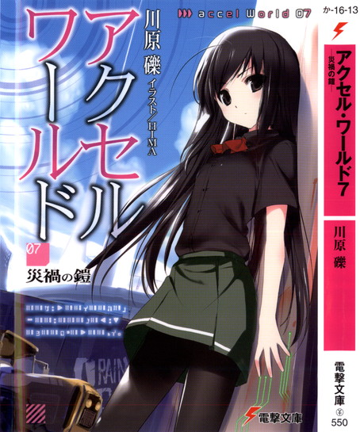
アクセル・ワールド７
─災禍の鎧─
黒雪姫率いる〈ネガ・ネビュラス〉は、シルバー・クロウを〈浄化〉するため、〈アーダー・メイデン救出作戦〉を発動した。
離度の高いミッションの中、決死の覚悟でシルバー・クロウはアーダー・メイデンと接触するも、〈帝城〉を守護するエネミー〈スザク〉の火炎ブレスにより、禁断の不可侵領域──〈帝城〉内部に突入してしまう。絶体絶命の危機に陥ったハルユキだが、彼はそこで不思議な〈夢〉を見る。
〈クロム・ファルコン〉と〈サフラン・ブロッサム〉。二人のアバターが望み、砕け散ってしまった〈災禍〉の物語を──。
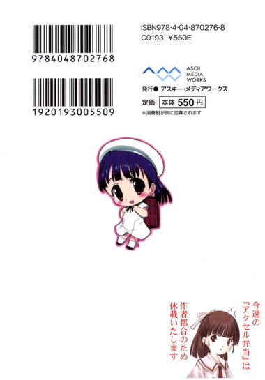
川原 礫
今年ももう２月ですか......。こりゃ２０１１年もあっという間だな！２０００年代ももう１１年ですか......こりゃ２１世紀もあっという間だな！あっという間ですが今年もよろしくお願いします！
イラスト：ＨＩＭＡ
10月３日生まれ。挿絵は今シリーズが初のイラストレーター。『電撃萌王』小冊子への寄稿を見た文庫編集者が、今回の挿絵依頼をオファーしたことがきっかけ。本業仕事の合間を縫って、ブログやＳＮＳサイトなどでイラストを発表している。
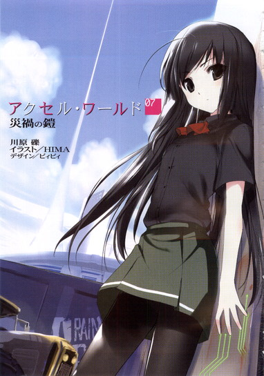
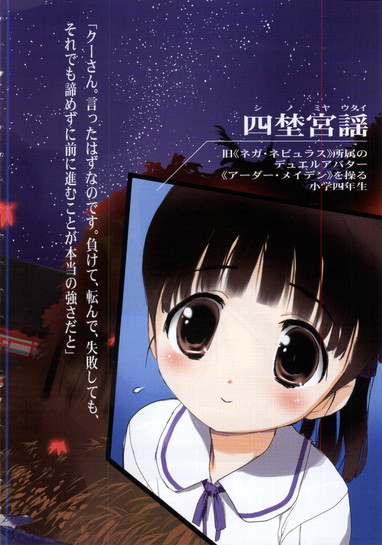
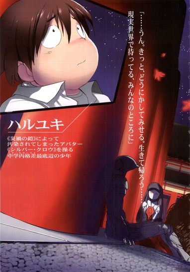
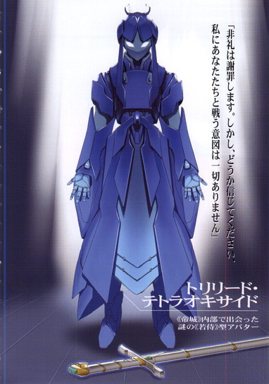
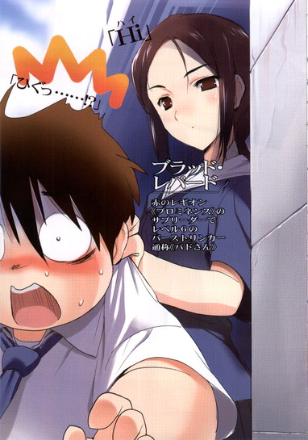
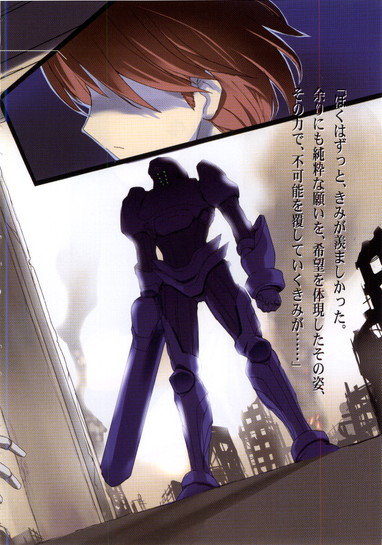
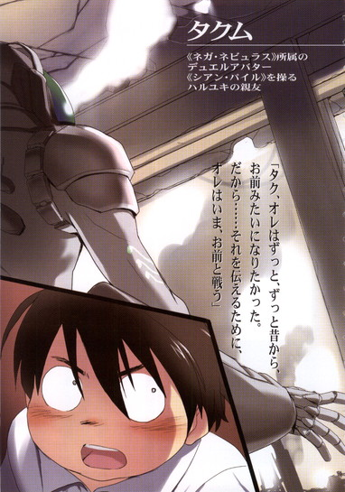
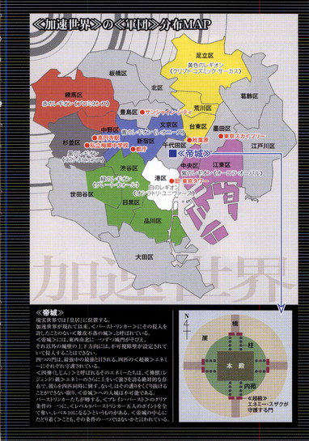
〈加速世界〉の〈軍団〉分布ＭＡＰ
〈帝城〉
現実世界では『皇居』に位置する。
加速世界が現れて以来、〈バースト・リンカー〉にその侵入を許したことのない〈難攻不落の城〉、と呼ばれている。
〈帝城〉には、東西南北に一つずつ城門がそびえ、それ以外の城壁の上下方向には、不可視障壁が設定されていて侵入することはできない。
四つの門は、最強中の最強と目される、四匹の〈超級〉エネミーにそれぞれ守護されている。
〈四神（しじん）〉と呼ばれるそのエネミーたちは、〈神獣（レジェンド）級〉エネミーのさらに上をいく強さを誇る絶対的な存在で、彼らを四匹同時に倒す、ないしはその護りをくぐり抜けることができない限り、〈帝城〉への入城は不可能である。
バーストリンカーたちが噂する、〈ブレイン・バースト〉のクリア条件の一つに、〈レベル９バーストリンカー五人のポイントを全て奪い、レベル10になる〉というものがある。〈帝城の中心にたどり着く〉ことも、その条件の一つではないかと言われている。
アクセル・ワールド 07
災禍の鎧
■黒雪姫（クロユキヒメ）＝梅郷中学の副生徒会長。清楚怜悧なお嬢様。その素性は謎に包まれている。学内アバターは自作プログラムの『黒揚羽蝶』。デュエルアバターは〈黒の王〉『ブラック・ロータス』（レベル９）。
■ハルユキ＝有田春雪（アリタ・ハルユキ）。梅郷中学二年生。いじめられっ子で太り気味。ゲームは得意だが、内向的。学内アバターは『ピンクのブタ』。デュエルアバターは『シルバー・クロウ』（レベル５）。
■チユリ＝倉嶋千百合（クラシマ・チユリ）。ハルユキの幼馴染。お節介焼きな元気娘。学内アバターは『銀色の猫』。デュエルアバターは『ライム・ベル』（レベル４）。
■タクム＝黛拓武（マユズミ・タクム）。ハルユキ、チユリとは幼少期からの知り合い。剣道が得意。デュエルアバターは『シアン・パイル』（レベル５）。
■フーコ＝倉崎楓子（クラサキ・フウコ）。旧〈ネガ・ネビュラス〉に所属していたバーストリンカー。〈四元素（エレメンツ）〉の一人。とある事情により隠匿生活をおくっていたが、黒雪姫とハルユキの説得により戦線に復帰する。ハルユキに〈心意〉システムを授けた。デュエルアバターは『スカイ・レイカー』（レベル８）。
■ういうい＝四埜宮謡（シノミヤ・ウタイ）。旧〈ネガ・ネビュラス〉に所属していたバーストリンカー。〈四元素（エレメンツ）〉の一人。松乃木学園初等部四年生。高度な解呪コマンド〈浄化〉を扱えるだけでなく、遠距離攻撃も得意とする。デュエルアバターは『アーダー・メイデン』（レベル７）
■ニューロリンカー＝脳と量子無線接続し、映像や音声など、あらゆる五感をサポートする携帯端末。
■ブレイン・バースト＝黒雪姫からハルユキに転送されたニューロリンカー内のアプリケーション。
■デュエルアバター＝ブレイン・バースト内で対戦する際に操るプレイヤーの仮想体。
■軍団＝レギオン。複数のデュエルアバターで形成される、占領エリア拡大と利権確保を目的とする集団のこと。主要なレギオンは七つあり、それぞれ〈純色の七王〉がレギオンマスターを担っている。
■通常対戦フィールド＝ブレイン・バーストのノーマルバトル（１対１格闘）を行うフィールドのこと。現実さながらのスペックを持つが、システムはあくまで一昔前の格闘ゲームレベルのもの。
■無制限中立フィールド＝レベル４以上のデュエルアバターのみが許可されるハイ・プレイヤー向けのフィールド。〈通常対戦フィールド〉とは段違いのゲームシステムが構築されており、その自由度は次世代ＶＲＭＭＯにも全くひけを取らない。
■運動命令系＝アバターを制御するために扱うシステム。通常はすべてこのシステムによってアバターは操作される。
■イメージ制御系＝自身が強く想像（イメージ）することによってアバターを操作するシステム。通常の〈運動命令系〉とはメカニズムが大きく異なり、扱えるものはごく少数。〈心意〉システムの要諦。
■心意（インカーネイト）システム＝ブレイン・バースト・プログラムのイメージ制御系に干渉し、ゲームの枠を超えた現象を引き起こす技術。〈事象の上書き（オーバーライド）〉とも言う。
■加速研究会＝謎のバーストリンカー集団。〈ブレイン・バースト〉をただの対戦ゲームとしては考えておらず、何事かを企む。〈ブラック・バイス〉、〈ラスト・ジグソー〉が所属している。
■災禍の鎧＝クロム・ディザスターと呼ばれる強化外装。装着すると、対象アバターのＨＰを吸い取る〈体力吸収（ドレイン）〉や、敵の攻撃を事前に演算・回避する〈未来予測〉など強力なアビリティが使用可能となる。しかしその使用者は、クロム・ディザスターに精神を汚染され、完全に支配される。
■ＩＳＳキット＝ＩＳモード練習（スタディ）キットの略。ＩＳモードとは（インカーネイト・システム・モード）のことで、このキットを使えば、どんなデュエルアバターでも〈心意システム〉が使用可能となる。使用中は、アバターのいずれかの部位に赤い〈眼〉が張り付き、〈心意〉の象徴である〈過剰光（オーバーレイ）〉が、黒いオーラとして放出される。
１
暗転
スポットライト。
白い光の輪の中に、艶のない朱色に塗られた巨大な円柱が出現する。湾曲したその側面に背中を預ける、小さな人影。生身の人間ではない。全身を濃い銀色の金属装甲で覆い、頭もまた同色のヘルメットに包まれている。
続けて、弱い照明が周囲を照らす。夜。無数のかがり火が音もなく揺れる。円柱は最初の一つだけではなく、同じものが無数に連なっているようだ。地面は純白の玉砂利。ずっと遠景に、巨大な宮殿めいたシルエットが浮かぶ。銀色のヘルメットが動き、彼方の宮殿を仰ぐ。
......〈絶対不可侵〉じゃなかったのかよ、まったく。
完全に自業自得な状況だと解っていても、頭の中でついそんなふうに愚痴ってしまう。
残念ながら、声には出せない。それどころか、足音ひとつ立てる気にもなれない。なぜなら、ほんのわずかな音を発した瞬間、城郭内のあちこちを行き交っている恐ろしげな武者型エネミーが大挙して襲いかかってくるかもしれないからだ。
武者一体のサイズは、せいぜい全高三メートル程度。外界に棲息する巨獣級ならその五倍に達する奴も珍しくない。しかし、長い回廊や城壁の上を、三～四体ずつの集団を作ってガシャリガシャリと闊歩している武者たちは、巨獣どころか神獣級......いや、ヘタをすると、この城の門を守護するあの〈四神〉にすら迫ろうかというプレッシャーを濃密に放散している。
もちろん、城──〈無制限中立フィールド〉の中央に屹立する荘厳なる〈帝城〉の内苑にこうして侵入できているのは、四神の守りを破ったからに他ならない。しかし、だからといって、どれか一体でも倒せたわけではまったくない。隙を突いて忍び込んだ、あるいは、ものの弾みでうっかり入り込んでしまった、が表現としては正しい。
......せめて、脱出用のポータルくらい用意しといてくれてもいいのに。
もう一度、無音の繰り言で、胸中に満ちようとする恐怖と焦慮を押しのける。
城内のかがり火を反射する金属アバターの全身は完全に冷え切り、やや黒みがかった銀色の装甲の奥では心臓がばくばく鳴り響いている。まさに絶体絶命、〈ＢＢプレイヤー〉となって以来最大の危機なのは間違いない。
しかし、同時に、少しばかりの興奮も確かに存在する。
加速世界が生まれてから──つまり、製作者不明のフルダイブ型対戦格闘ゲーム・アプリケーション〈ブレイン・バースト〉が東京都心在住の小学一年生約百名に配布されてから、はや十一ヶ月。この間、レベル４に到達し、無制限フィールドへのダイブ権を得たプレイヤーの多くが、世界の中央に鎮座する巨城へと挑んだ。現実世界の皇居に相当するロケーションといい、周囲の断崖に設定された絶対重力といい、どう考えてもゲームの最終目標──子供っぽい言い方をすれば〈ラスボスの城〉だったからだ。
しかし、あらゆるバーストリンカーの挑戦を、あの恐るべき超級エネミー〈四神〉はまさに鼻息一発で吹き飛ばしてしまった。
北のゲンブ。東のセイリュウ。西のビャッコ。そして南のスザク。彼らはそれぞれ五段階のＨＰゲージを持つ独立したエネミーでありながら、相互に支援・回復する能力を持っている。具体的には、非戦闘中の四神は、他の門で戦闘中の四神に向かってバフやらヒールを恐ろしい勢いで飛ばしてくるのだ。つまり、戦力を集中しての各個撃破は不可能。プレイヤー側も四隊に分かれ、四神全てを同時に攻撃せねばならない。現状でバーストリンカーはまだ総数五百に達さず、しかも無数の小レギオンを作って角突き合わせているとなれば、そんな大規模な作戦行動は不可能だ。中には、小規模部隊で無理矢理ひとつの門に突っ込み、大橋の奥深くで死亡してそのまま〈無限エネミーデス〉──という言葉ができたのはその後だが──に陥りバーストポイントを全損してしまった例すらある。
そんな状況で、四神を倒したわけではないにせよ、こうして初の帝城侵入成功者になったとなれば多少はわくわくしてしまうのも仕方あるまい。
もしかしたら、このまま城の奥深くまで辿り着き、そこで最終フラグ・アイテムなりを手に入れることに成功すれば、ブレイン・バーストを初めてクリアした者として加速世界に永遠に名前が刻まれるかもしれないのだ。
大した能力も持たず、地味なメタルカラーとしていままで特に注目されることもなかった、この──
〈クロム・ファルコン〉の名が。
隼を意味するアバターネームこそちょっと格好いいものの、あるいはそれだけに、クロム・ファルコンの性能および外見は長いこと〈名前負け〉扱いをされてきた。対戦相手だけではなく、自分自身もそう思っていた。
少しでも猛禽類らしいのは、下端がクチバシ状に鋭く尖ったマスクだけ。それとて、顔部分はアイレンズのないつるりとした銀色なので、下っ端戦闘員っぽい印象は拭えない。体はひょろりと細く、手足に武器は一切なし。当然、背中にも翼らしきものは皆無。
攻撃力と言えばパンチとキック、そして小柄ゆえのスピードとボディの硬さだけというこのデュエルアバターを「素敵」だと言ってくれるのは、タッグパートナーの〈サフラン・ブロッサム〉だけだ。その言葉を疑いはしないが、せめてもう少し、彼女の能力につり合う何かが欲しい。
ブロッサムは、その名の通り、〈花を咲かせる〉力を持っている。右手の小さなスティックから数種類のタネを発射して敵──あるいは味方アバターに埋め込み、一定時間経過後に咲いた花は、体力ゲージや必殺技ゲージを削ったり脚を止めたり、逆に支援効果をかけたり阻害効果を消したりと多彩な効果を発揮する。口さがない者たちは〈寄生属性攻撃〉などと嫌な言い方をするが、間接系カラーでもあそこまで汎用性のあるデュエルアバターはなかなかいない。
もちろん、それほどの力があれば当然犠牲になる部分も出てくるわけで、ブロッサムの場合は防御力がかなり心許ない。その弱点を補うために硬いファルコンとタッグを組んでいる──のだが、一緒に戦うようになってもう半年近く経つのに、いまだ不安が消えないのだ。もし、より硬い奴がブロッサムにパートナーの誘いを掛けたらどうなってしまうのか、という不安が。
いわゆる〈ノーマルカラーサークル〉とは別系統の〈メタルカラーチャート〉では、一番左にプラチナやゴールドといった貴金属、右にスチールやアイアンの卑金属が並んでいる。貴、卑、と言っても同レベルならポテンシャルは同じで、左側配置なら毒や酸、腐敗といった特殊攻撃に強く、右側にいくほど拳や剣の物理攻撃に強くなる。
〈クロム〉はほぼ中央にある色だ。耐性はどっちつかずで、単純な装甲の硬さだけなら上をいくメタルカラーは少なからず存在する。それどころか、ノーマルカラーでも防御に秀でた緑系なら、より上手く盾役がこなせる奴がいておかしくない。
つまり、ただ硬いだけでは、いつブロッサムを奪われるか判らないのだ。
この、胸が詰まるような感情が何なのか、自分でもなかなか把握できない。加速世界では、湾岸エリアを根城にこれまでどうにか生き延びてきて、この頃は〈黒銀の隼〉などという二つ名で呼ばれるようにもなりつつあるが、バーストアウトすればまだたった八歳の小学二年生なのだ。──いや、それもあるいは言い訳か。こと無制限中立フィールドにダイブできるようになってからは、この事実上無限の時間が存在する世界で、主観に於いてはすでに五年近い時を過ごしている。
だから、今はもう、頭のどこかでは理解できている。
先日、ようやくレベル５に上がり、とある必殺技を入手した時にすぐこの〈帝城〉のことを考えてしまったのも......そのアイデアを実行に移し、幸か不幸か成功して、こうして恐ろしいエネミー群の中で息を殺す羽目になっているのも、全てはサフラン・ブロッサムへの恋情および独占欲ゆえのことだ、と。
──そろそろ移動しないと、一定パターンで城内を移動している武者集団の一つが、この隠れ場所に現れる。
朱塗りの柱の陰からマスクの端を出し、素早く状況を確認する。
現在地は、直径千五百メートルの真円を描く〈帝城〉内苑の南エリア、〈朱雀門〉と城本体の正面入り口を繋ぐ大路の片隅だ。入り口の両脇には、ひときわ猛々しい外見の、武者というより鬼神めいたエネミーが控えていてとても突破できそうにない。代わりに、白塗りの壁に設けられた窓の一つに狙いを定める。正規の通路でない以上、外側からは開けられない可能性が高いが、本物の窓でさえあってくれればきっと侵入できるはずだ。
背後からは、巡回の武者エネミー集団の足音が近づいてくる。大きく息を吸い、右脚を踏み出しながら、小さく──技名発声。
「〈フラッシュ・ブリンク〉」
最低ボリュームの声を耳ざとく聞きつけたか、武者たちの歩行が駆け足に変わった。
しかしその時にはもう、黒銀のアバターは柱の陰から完全に姿を消している。青い残像の瞬きだけを残して一時消滅、三十メートルも離れた城の壁際で音もなく実体化。
これが、クロム・ファルコンのレベル５必殺技、〈疑似瞬間移動〉だ。疑似、なのはあくまで〈高速直線移動〉の延長線上にある能力だからで、〈眼に見えていて〉〈空間が連続している〉場所にしか移動できない。しかし、移動中はアバターは質量ゼロの粒子体へと変じ、物理攻撃や重力攻撃を完全に無効化する。
白塗りの壁に背中をつけた格好で再出現し、元いた場所に殺到する武者エネミーたちの様子を見守る。自分たちを攻性化した侵入者を見失い、盛んにあたりを見回しているが、やがて何もかも忘れたかのように。元の巡回コースに戻ると、ゆっくりしたペースで歩き始める。ふう、と安堵のため息。武者エネミーたちは、その戦闘力はともかく、ＡＩの出来は明らかに〈四神〉に劣る。
振り向き、背後の壁に設けられた大きな窓を見上げる。
フィールド属性が和風の〈平安ステージ〉だった時から期待していたが、やはり窓は細い朱塗りの桟が縦横に組まれているだけで、ガラスの類は嵌っていなかった。枡目ひとつは三センチ四方ほどしかないので、どんなデュエルアバターもそのままではこの隙間を抜けることはできないが──。
視界左上の必殺技ゲージをちらりと確認。残り五パーセント。体力ゲージも二十パーセントしか残っていないが、どちらにせよ武者エネミーに太刀を一撃されればフル状態からでも即死確実だ。
慎重に軌道を定め、右足で強く踏み切りざま、ゲージを全て消費して最後の〈フラッシュ・ブリンク〉。
粒子化したクロム・ファルコンの体は、細い桟の隙間をすり抜け、ついに帝城本体への侵入を果たす。
この技こそが、そもそも〈四神〉の眼をごまかして絶対不可侵の帝城外壁突破を可能ならしめた手段だった。手順は至ってシンプルだ。事前に必殺技ゲージをフルチャージした状態で、まず四神の守る大橋──ではなく、帝城を取り囲む無限の闇を満たした外堀に向かって、最大距離の〈ブリンク〉を行う。といってもゲージを全消費してマックス百メートルなので、幅五百メートルの断崖を渡るにはとても足りない。
そのため、最初に軌道をやや上空。に設定しておく。断崖の上に出現したとたん、問答無用の超重力がアバターを捕らえ、谷底に引きずり込もうとすると同時にＨＰゲージをがりがり減らす。しかし同時に必殺技ゲージも再チャージされるので、ある程度貯まったところで再度斜め上空へ〈ブリンク〉。あとはその繰り返しで、谷を渡り切る。
──とはいえ、本当のところは、今日は偵察というか実験だけにしておくつもりだったのだ。ブリンク、チャージ、ブリンクのサイクルが可能なことだけ確認したら、あとはそのまま谷底に落下して死亡。断崖の手前で蘇生し、得たデータをもとに計画を再検討。実現可能だと確信できてから、改めて本番に挑む。
そのはずだったのが、こうして最初の一回で無謀な特攻をかましてしまったのは、ひとえに無限の谷に落ちるのが余りにも恐ろしい経験だったからだ。初めの落下で完全に我を忘れ、ひたすら前方へのブリンクを繰り返した結果、気づいたら帝城の外壁に夢中でしがみついていた──というわけだ。
狙いどおりの結果ではあるが、のんきに結果オーライと言ってもいられない。
加速世界が開闢してからのこの十一ヶ月は、ＢＢプレイヤーとなった子供たち同士の戦いの歴史であると同時に、全プレイヤーと謎のゲーム開発者とのせめぎ合いの歴史でもある。子供たちはあらゆる情熱を傾けてシステムの穴、つまり〈美味しいポイント稼ぎ〉の方法を探し、見つかるそばから開発者がアップデート・パッチでそれを塞ぐ。ゲーム内での〈エネミー地形引っかけ狩り〉や、現実世界で外部プログラムを利用した〈ツール・チーティング〉など、わずかでもインチキの匂いがする稼ぎテクは、他のネットゲームと比べても驚異的なスピードで対策されてたちまち使えなくなった。その反応の早さから、ＢＢを開発・運営しているのは人間ではなくＡＩだと主張するプレイヤーも少なくない。
ともかく、正体不明の開発者は、ゲームの裏道抜け道を断固許そうとしない......というより、加速世界で何かを得ようとするプレイヤーには、それに値する代価を厳然と要求してくる。
となれば、絶対不可侵の〈帝城〉に、本来のルートである四方門ではなくお堀を飛び越えて入り込んでしまったクロム・ファルコンの所行もまた絶対に認めてはくれまい。すぐにパッチが当たり、あの断崖の超重力は、物理・重力攻撃無効の〈フラッシュ・ブリンク〉をも捕まえるようになるはずだ。いや、もしかしたら、今頃もうすでに──。
だから、これが、最初で最後のチャンスなのだ。
ここで何かを得、あるいは成し遂げて、サフラン・ブロッサムのパートナーに相応しいバストリンカーになる。もう彼女を失うことに怯えずにすむように。彼女が僕を選んだことに満足してくれるように。
そして何より、この世界でも、現実世界と同じく下だけ向いていた僕に声を掛け、手を差し伸べてくれたブロッサムの気持ちに報いるために。
窓の桟を抜けて入り込んだ先は、きれいに磨かれた板張りの廊下だった。奥の壁は、絢爛豪華な錦絵に飾られた襖。等間隔に黄金の燭台が立ち、オレンジ色の炎を静かに揺らしている。エネミーの姿は──今のところ、なし。
背後の窓を確認すると、下部に小さな掛け金があった。無意味な装飾オブジェクトではあるまい。解錠し、そっと押してみると、朱塗りの窓全体が音もなく外側に持ち上がる。これで少なくとも、ここに戻ってくれば帝城本殿からは出られるわけだ。
しかし、出たところで脱出用ポータルは存在しない。そもそもここまで来て手ぶらで帰れるわけもない。かくなるうえは、精神力と幸運が持続する限り奥へ奥へと進むだけだ。
銀面の下で息を殺し、細身のアバターを廊下の薄闇に溶かすように、慎重に歩きはじめる。
何時間──ことによると何十時間が経過しただろうか。
小学校から帰宅してすぐ無制限フィールドにダイブしたので、理論的にはこの世界で数日どころか数ヶ月を過ごせるくらいの猶予はある。実際、以前ブロッサムと一緒に三ヶ月も連続でダイブ、いや〈暮らして〉しまったこともあるほどだ。
とはいえ、内苑よりもいっそう恐ろしさを増した武者やら神官エネミーの探知範囲を避けて前進し続けるのは、想像を絶する難事だった。ファルコンが小型軽量タイプでなければとても不可能だったろう。同時に、この城はどうやら、数十、数百規模の大部隊による攻略を想定されているようだった。通路はやたらと広く、天井も高い。それゆえどうにか、周回するエネミー群をかわして進むことができたのだが、そろそろ集中力も限界だ。
大きく深呼吸。冷たい空気で頭をクールダウンし、太い円柱の陰から行く手を探る。
帝城全体の直径が千五百メートル、そして朱雀門から鬼神の守護する正面ゲートまでの距離はおよそ四百メートルだった。ならば本殿のサイズは、最大でも南北七百メートル程度のはずだ。侵入して以来もう五百メートルは進んだと思われるので、そろそろ本殿の更に中核へと達してもおかしくない。
果たして──。
北へと延びる通路の先に、ひときわ広い空間と、その床面に瞬く不思議な光が見えた。
並んで、二つ。水面のように揺れる、透明な青。
あの色合いには見覚えがある。無制限中立フィールドの各所ランドマークに設けられている〈離脱ポイント〉、またの名を〈脱出口〉の光に間違いない。
思わず安堵のため息をつきかけてから、ぐっと呑み込む。ここでただ現実世界に離脱しても、ゲームクリアの栄誉はおろか、帝城への侵入に成功した証ひとつ持ち帰れない。それでは何のために無限の断崖絶壁に向かって決死の〈ブリンク〉を挑み、数十時間に及ぶ隠密行の緊張に堪え忍んできたのか──......
────いや。
いや、この個人的ミッションを思い立ったそもそもの動機は、そんな即物的なものではなかったはずだ。ただ、何かひとつ、自信の核になり得るものが欲しかった。サフラン・ブロッサムの隣に胸を張って立ち続けるための力を与えてくれる、何かが。
ならば、もう充分だ。加速世界でもっとも危険なエリアに潜入し、最奥部まで踏破、生還した。たとえそうと知っているのが自分だけでも、その事実は今後ずっと確かな力を与えてくれるはずだ。現在最強と目されている〈純粋色〉たちすらもできなかったことを成し遂げたという、確かな事実は。
それに考えてみれば、このブレイン・バーストという壮大かつ謎めいたゲームが〈クリア〉される時何が起きるのか、システム側からは一切明示されていないのだ。全加速世界にクリア者の名前がアナウンスされ、賞金代わりのポイントなり賞品代わりの強化外装なりが授与されて、その後もゲームは続く......のならばいいが、いきなりエンディングテーマとスタッフロールが流れ、ＥＮＤマークとともに全ＢＢプレイヤーのニューロリンカーからプログラムが消去されてしまう、というようなことも考えられなくはない。ブロッサムとはもちろんリアルで会ったり連絡先を交換したりはしていないので、そうなったらもう二度と会えなくなってしまう。
だからきっと、この城の中で仮にクリアフラグらしきアイテムを発見しても、手を触れることはなかっただろう。これでよかったのだ。ポータルからの生還こそ、このミッションで望みうる最大の報酬なのだ......。
と、殊勝にも自分に言い聞かせる地味なメタルカラーを、加速世界の本物の神様が憐れんだ──のかどうか。
残された集中力を振り絞って周囲を警戒しつつ侵入した広間で待っていたのは、単なるポータルではなかった。
左右に二つ並ぶ、揺らめくブルーの光に満たされた楕円は、帝城の外側にいくつも存在する離脱ポイントで見つかるものとまったく同一だ。だがその手前に、それぞれ奇妙なオブジェクトが設置されている。
高さ一メートルほどの、黒光りする石柱。いや、台座と言うべきか。二つとも、上に何かが載っているのだ。足音を殺し、左側のものに近づく。
わずかに見上げた視線の先で、ポータルの光を浴びながら鎮座するのは──一振りの剣、あるいは刀だった。どちらと言い切れないのは、鍔や握りの拵えは和風と思えるのに、鞘は一切反りのない完全な直線だからだ。全体が鏡のような銀色の金属製で、装飾はごく少ない。
それでもこの直刀が恐るべき威力を秘めていることは、ひと目で知れた。強化外装だとすれば間違いなく最強クラス、いやその上を行くだろう。こうして見ているだけで、まるで神獣級エネミー......いや、かつて一度だけ見た〈四神〉に至近距離で相対しているかの如き圧力で息が詰まりそうだ。
苦労して直刀から視線を引きはがし、もう一度黒御影石っぽい台座を見る。
その前面には、四角い金属のプレートが嵌め込まれ、いくつかの図形や文字が刻まれている。
まずいちばん上に、Ｐの字を左に倒したような形に配置された七つの点と、それらを結ぶ線。小学校の理科の授業で、星座の勉強をした時にこれと同じ図形を見た。四つの星で描かれた四角と、三つの星を連ねたしっぽ。柄杓の形の〈北斗七星〉だ。よくよく眺めると、柄の部分の真ん中、左から数えて五つ目の星だけが他より大きく描かれている。
星座の下には、英語ばかりの加速世界では珍しい漢字が二文字。【玉衝】と読めるが意味は解らない。
更にその下に、もう一行。今度はアルファベットだ。
【ＴＨＥ ＩＮＦＩＮＩＴＹ】。
確か〈無限〉という意味だったはずだ。おそらくはこれが、この直刀型強化外装のシステム上の名称だろう。銀面の下で何度かその単語を転がしながら、数歩右にずれて、もうひとつの台座を見上げる。
こちらに載っているのは、どちらかと言えば洋風なデザインの全身防具──
鎧、だった
重厚なものではない。一般のＶＲＭＭＯＲＰＧなら軽装鎧に分類されるだろう。兜は円冠タイプで、胸と肩、腕のパーツも最小限だ。下半身は膝までのブーツのみ。しかし安っぽい印象はかけらもない。剣と同じく全体がミラーシルバーに彩られたそれは、ありとあらゆる攻撃を跳ね返しそうな凄まじい情報密度を秘めている。周囲の空間すらどことなく歪んで見えるほどだ。これに比べれば、メタルカラーのクロム・ファルコンの装甲すらまるで玩具のようだ。
ため息を押し殺し、こちらのプレートも確認する。
全体のデザインは剣の台座と同じだ。上部に北斗七星のレリーフ。。しかし、大きくなっている星は左から六つ目だ。刻まれる漢字は【開陽】。やはり意味は解らない。
そして、いちばん下の英語名は──
【ＴＨＥ ＤＥＳＴＩＮＹ】とあった。意味は確か......〈運命〉。
そこまでを読み取ると、一歩後ろに下がり、今度こそ大きく息を吐き出す。
二つの、恐らくは加速世界最強クラスの強化外装。剣と、鎧。
手を伸ばし、触れれば入手できるはずだ。無制限中立フィールドの各所に少なからず存在する〈ダンジョン〉の奥では、このように台座に載った強化外装が見つかることもあると噂に聞いている。
だが、気になるのは台座のすぐ背後で揺れるポータルだ。当然無関係ではあるまい。十中八九、どちらかのアイテムに触れ、入手すると同時にポータルが起動し、現実世界に強制送還される。
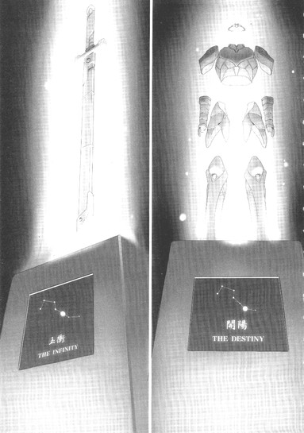
しかもアイテムが起動キーとなっている以上、このポータルはたった一回しか使えない〈ワンタイム・ポータル〉だろうし、起動中は隣の台座はロックされるはずだ。つまり、個人または集団が一度に獲得できるのは、剣か鎧のどちらか片方だけだということだ。いかにもゲームらしい二者択一的な選択肢だ。
つい数分前は、入って出たという事実だけで充分と考えはしたが、この状況で台座に手を伸ばさずにいられるほど悟りきってはいない。何せ現実年齢はまだたった八歳、加速ぶんを加味してもたかだか十三歳なのだ。そもそも、配置からして、どちらかの外装に触れねばポータルを使えないのもまた明らかだ。
では、どちらを？
剣でも鎧でも、装備すれば今までより格段に強くなれるのは間違いない。しかし、クロム・ファルコン単体が強化されても意味はない。あくまでサフラン・ブロッサムとのタッグを前提に考えるべきだ。ファルコンの存在意義は、彼女を守ること。ならば剣か。もとより防御型のメタルカラーが、これ以上硬くなったところで屋上屋を架すというものだろう。
左側、【ＴＨＥ ＩＮＦＩＮＩＴＹ】の台座に向かって踏み出しかけた脚を──ぴたりと止める。
ブロッサムを守る。真にそのことだけを願うなら、更なる最適解が存在するはずだ。装甲が薄いという彼女の弱点を打ち消し、もう苛烈な集中攻撃を浴びずとも済むようにしてあげられる方法が。
右拳を握り、胸の中央をいちどゴツンと叩いて未練と私欲を追い出してから、右の台座に鎮座する純銀の鎧へとその手を伸ばす。
指先が触れた──と思う間もなく、視界内に紫色のシステムメッセージが軽やかな効果音とともに流れる。【ＹＯＵＧＯＴＡＮＥＮＨＡＮＣＥＤＡＲＭＡＭＥＮＴ〈ＴＨＥＤＥＳＴＩＮＹ〉】。
鎧が光の粒となって消滅し、同時にポータルの青い光が広がって、クロム・ファルコンを包み込む。
暗転。
スポットライト。
白い光の輪の中に、あまり広いとは言えない、しかし居心地の良さそうな部屋が浮かび上がる。
壁も床も、よく磨かれた板張り。片隅には黒い料理用ストーブ。上に載ったポットから、ほのかな湯気が立ち上っている。反対側の壁際に、大きめのベッド。真っ白なシーツの上には、並んで腰掛ける人影が二つ。
やはり生身の人間ではない。片方は、濃い銀色の金属装甲に体を包んでいる。そしてもう片方が全身にまとうのは、まるで太陽のような明るい山吹色。短めの髪や肩、腰まわりの意匠は、綻んだばかりの花の蕾を思わせる。
叱られた子供さながらに項垂れる銀色に向かって、山吹色がかわいらしい右拳を軽く振り上げる。
「も──────っ、ばっかじゃないの!?」
ぽかり、とヘルメットに何度目かのげんこつ。思い切り首を縮めながら、これも何度目かの言い訳を口にする。
「だ、だから、最初は実験だけのつもりだったんだってば」
「なら、すぐに同じ方法で戻ってくればいいでしょ！なんでそのままお城の奥にのこのこ入ってくかなあ！」
「だ、だから、ＨＰもかなり減ってたし......谷の内側から〈ブリンク〉して途中で死んだ場合でも、ちゃんと外側で蘇生できるか確信なかったしさぁ......」
「仮に内側で蘇生しても、その時はＨＰゲージ全回復してるんだから、改めてその〈ブリンク〉で外側まで跳べばいいでしょ！」
「う......ま、まったくその通りですが......」
この手のやりとりでは、理論派のパートナーに勝てた試しがない。肩を落としてしょげ返っていると、ふうっと大きなため息が聞こえ、続けてげんこつの代わりに華奢な手のひらがヘルメットのてっぺんをゆっくりと撫でた。
「......まあ、あの〈帝城〉に入ろうっていう挑戦心と、奥まで行って戻ってきた精神力は褒めてあげるわ。頑張ったね、ファル」
その優しい声に、思わず胸を詰まらせながら顔を上げる。すぐ目の前で、サフラン・ブロッサムの可憐なフェイスマスクが穏やかな微笑みを浮かべている。
「あ......ありがと、フラン」
淡い水色のアイレンズをじっと見つめながらそう呟くと、ブロッサムは照れたように肩をすくめ、クロム・ファルコンの頭から手を離して立ち上がった。
「お茶、いれるね。そだ、無事帰還のお祝いにケーキも切っちゃう。こないだ、銀座エリアの〈フードショップ〉で美味しそうなの買ってきたんだ」
ぱたぱたと部屋の反対側のキッチンへと走っていくパートナーの姿を見ていると、あらためて胸の奥に色々な感情が込み上げてきて、声が出せなくなる。
無制限中立フィールドの湾岸エリア、現実世界ではお台場と呼ばれる埋め立て地の片隅に存在するこの小さな家は、二人で数年に及ぶ──もちろん加速時間でだが──エネミー狩りをこなしてようやく鍵を買ったものだ。ファルコンとしては、そのポイントでレベルアップするか強力な強化外装のひとつも買ったほうがいいという気がしなくもなかったが、初めて新居のドアを開けた時のブロッサムの感激ぶりに、そんな子供っぽい未練はあっさり吹き消されてしまった。
以降、更に一年近くをかけて少しずつ家具アイテムを揃えたこの部屋は、いまやファルコンにとっても、現実世界の自室よりも居心地のいい場所だ。何より、兄弟がおらず両親の帰りも遅いために毎日独りきりの自宅マンションと違って、この部屋にはいつもブロッサムがいてくれる。さすがに、一緒のベッドで眠るのはしばらく気恥ずかしかったが。
彼女が、なぜ当時、あれほどまでに家を買うことに拘ったのか。
その理由を教えてもらったのは、現実時間で一ヶ月前のことだ。
サフラン・ブロッサムは、生まれつき、細胞内のミトコンドリア機能が低下するという難病に罹っているのだという。遺伝子性の疾患なので、最先端のマイクロマシン治療も効果はない。今はまだ疲れやすかったり、頭痛がしたりといった程度の症状しか出ていないが、やがては痙攣や麻痺などの発作を起こすようになり、病変はいずれ心臓にも及び──恐らく大人にはなれないと、医者には言われているらしい。新生児の頃から、発売されたばかりのニューロリンカーを装着し続けてきたのも、症状の継続モニタリングのためなのだそうだ。
今座っているのと同じベッドの中で、ただ両眼を見開くことしかできなかったファルコンに、ブロッサムは明るく笑ってみせた。
──そんな顔しないで、ファル。もし何かあるとしても、十年とか十五年先の話だからさ。それに、私たちには〈ブレイン・バースト〉があるじゃない。私はこの加速世界で、他の人の一生ぶんをちゃんと生きてみせる。可愛くて素敵な家を買って、大好きな人とふたり、いつまでも一緒に......。
そう言って、もう一度恥ずかしそうに笑うブロッサムに、つい「それ、僕のこと？」と訊いてしまってぽかりと叩かれたものだ。
嬉しかった。しかし同時にかすかな怯えも感じた。本当に僕でいいのか、と。ブロッサムの〈一生〉を共有する資格が、本当にこのクロム・ファルコンにあるのか、と。昨日、無謀極まる帝城侵入に挑んでしまったのも、その怯えがずっと心の底に居座っているせいだ。
だから、あの城から生還した今、目の前の小さなテーブルにお茶とケーキの用意をしているパートナーの横顔に向けて、どうしても問わずにはいられなかった。
「ねえ......、フラン。何で......どうして僕なの？こんな、大した能力もない、メタルカラーとしても中途半端な僕を、君はなんで選んでくれたの？」
するとブロッサムは、一瞬きょとんとした表情を作ってからすぐにきゅっと唇を尖らせた。
「あーっ、忘れてる！ あのねえファル、最初にタッグの誘いかけてきたのはそっちなのよ！ギャラリー中に、すっごい小声で話しかけてくるもんだから、私なんども聞き返しちゃったんだよ」
「え......そ、そうだっけ」
慌てて記憶を探るが、何せ体感時間ではもう五年近くも昔のことだ。それでもおぼろげに甦ってきた遠い情景の中で、ブロッサムに話しかけているのは確かに自分だった。よくもまあそんな度胸があったものだ、とアバターの全身にだらだらと仮想の汗を流していると、お茶のポットを置いたブロッサムが歩み寄ってきて、両肩にぽんと手を置いた。
「なら、私も訊くわ。ファル、あなたはなんで私を選んでくれたの？あの頃は技もぜんぜんなくて、高火力型に狩られるばっかりだった私を、なんで？」
──どうして言えよう。ひと目見て、この人だと思った、などと。
だが長年のタッグパートナーには、そんな胸中の感慨すらも隠せないようだった。優しく微笑んだ太陽の色のアバターは、細い両腕をファルコンのヘルメットに回し、胸にきゅっと抱きしめた。
「......私も。私も、そう思ったの。それ以外に理由なんかないし、一度だって後悔したこともないよ。......さ、お茶にしようよ。その後、海見にいこう。いま外は〈黄昏ステージ〉だから、きっと夕焼けがきれいだよ」
暗転。
スポットライト。
白い光の輪の中に、寄り添って立つ人影が二つ浮かぶ。クロムシルバーとサフランイエロー。
続いて点された光が、遠景を広く描き出す。穏やかな海と、水平線に沈まんとする太陽。波間に煌めく夕陽の反射光は、それを眺める二人が身にまとう色ととてもよく似ている。
お台場の南西の角、暁埠頭公園から眺める東京湾の夕景は、これが本当にソーシャルカメラの映像から再構成された３Ｄグラフィックスなのかと疑いたくなるほど美しい。
しかし、現実世界ならば対岸の羽田空港をひっきりなしに離着陸しているはずの航空機はまるで見えず、かわりにオレンジ色の空を大型の翼竜エネミーがゆったりと舞っている。湾の沖合で高々と潮を吹いたのは、鯨ではなく首長竜だ。
こうして、ブロッサムと一緒に広大な無制限中立フィールドを眺めるたび、どうしても考えずにはいられない。
いったい、この世界は何のために生まれたのか。何を目的として、幼い子供たちだけがここに誘われたのか。
これほど巨大なシステムを構築・運営するのに費やされたであろうコストの総額を、小学生の知識では想像することもできない。しかるに今まで、あらゆるＢＢプレイヤーは一円のプレイ料金も支払っていないのだ。大手ゲーム会社の市場リサーチだとか、広告会社の新手のマーケティングだとか色々な噂が流れたが、だとすればプログラムの配布数が少なすぎる。
約一年前に、追跡不能の発信元からクライアント・パッケージを受け取った子供が約百人。そのうち、〈親〉として回数無制限のコピー・インストール権が行使できるレベル２に上がれたのはたった三割──三十人。そこから、ゲーム好きな子供のコミュニティを媒質として再度広まり、現在では二十三区南部を中心に総数五百人にまで拡大しているものの、企業の販売戦略としてはあり得ない小規模さだ。
そもそも、このブレイン・バーストというゲームは、プレイヤーになるための条件が厳しすぎる。生まれた直後からずっとニューロリンカーを装着し、長時間のフルダイブ経験がある子供などそうそういるはずもない。一応、ＢＢプログラムには〈インストール適性チェッカー〉なるモジュールが搭載されていて、有線直結なりアドホック接続なりで適当なファイルを転送するバックグラウンドで相手が条件を満たしているかどうかこっそり確認できるのだが、ファルコンの周囲では今まで一人の適格者も見つかっていない。おかげで、もうレベル５にもなるのに、最近ではすっかり〈親〉になる努力を放棄してしまっている。
なぜ──。この時間的・空間的無限を内包する異世界は、何のために......。
「また考えてるの、ファル？」
不意に、寄り添って立つサフラン・ブロッサムが呟いた。銀面の下でぱちぱちと瞬きし、とりとめない想念を中断する。
「あ......うん......一般フィールドじゃ特に感じないんだけど、こうやって無制限フィールドを見てると、どうしても気になっちゃうんだ。僕は......僕たちは、どこに連れて行かれるんだろう、ってさ」
「......そうね。その気持ちは解る......かな。私も最近、現実世界の友達や家族と話してるとたまにヘンな顔されることがあるから。自分では何も変わってないつもりなんだけど、昔は使わなかった言葉とか、知らず知らずに使ってるみたいで......」
心細そうに体を預けてくるブロッサムの肩を、強く引き寄せる。
「それは......仕方ないよ。僕らはもうこの世界で、五年も過ごして......いや、暮らしているんだ。その間にいろんな物を見たし、いろんな話をしたし、いろんなことを考えた。魂の年齢だけなら、もう六年生だって追い越しちゃってる。でも......たぶん、悪いことばかりじゃないさ。昔の僕なら、君みたいな女の子とこうして話すどころか、一緒の場所にいることすら恥ずかしくてできなかったよ」
「ふふ。私から見ればまだまだ子供だけどね、ハヤブサくん」
ブロッサムは小さく微笑んだが、可憐なフェイスマスクにはすぐにまた憂いの色が滲んだ。
「......ね、ファル。あなた、聞いたことある......？バーストポイントを全損して、ＢＢプログラムを強制アンインストールされたプレイヤーがどうなるのか......」
その囁きに、一瞬体を硬くしてしまう。しかしすぐに緊張を解き、意識して平静な声音で答える。
「ただの噂......だと思うよ。プログラムをなくしたプレイヤーは、加速世界に関する記憶もなくすっていう話なら......。だって、いくら何でも有り得ないよ、人間の記憶を操作するなんて......」
「でも、それを言うなら、思考を一千倍に加速する技術だって、最初は信じられなかったわ。正直、今でも仕組みについてはちゃんと理解できてないと思う。だから、もしかしたら、〈記憶消去〉のほうも......」
そう言われると、同じくブレイン・バーストの根幹技術については理解がかなり曖昧なファルコンも黙り込むしかない。
二人とも、今ではすでに二十人を下回ると思われる、〈親〉のいない〈第一世代ＢＢプレイヤー〉でありまた〈子〉を持ったこともない。だから、プログラムを喪失したプレイヤーが記憶をも失うという噂の真偽を実際に確かめる機会はこれまでなかった。
いや、仮にその機会があっても、確証を得ることは難しいかもしれない。なぜなら噂によれば、加速世界から退場した者は、関連する記憶を完全に喪失するというよりも〈ブレイン・バーストに対する興味及び細部の知識を失う〉という感じらしいのだ。本人の記憶に空白を作らず、周囲の人間にも大きすぎる違和感を与えない、いわば緩衝装置つきの精神操作。
それは、もしかしたら、完全な記憶消去より恐ろしい措置かもしれない。
今までは同じレギオンの仲間、あるいは〈親子〉として強い絆で結ばれていた相手が、ある日突然自分のことを忘れる──のではなく興味を示さなくなる。その他大勢、どうでもいい知り合いの一人として扱われる。そんなことになるくらいなら、いっそ完全に見知らぬ他人にされたほうがましかもしれない。もう一度出会い、また友達になれる可能性がわずかでも残るのだから......。
うそ寒い思考に、ついぶるりとアバターを震わせる。と、耳にいっそう密やかな囁きが届いた。
「ファル。私わ、もう少ししたら、〈子〉を作ろうと思うの」
「え............」
思いがけない言葉に、まじまじとパートナーの顔を見てしまう。ブロッサムは照れたように一瞬微笑んだが、すぐに表情を改め、静かに話しはじめた。
「今までは、〈子〉を守れる自信がなくてなかなか踏み切れなかったけど、最近は一般対戦の勝率も安定してきたし、対エネミー戦闘のノウハウもだいぶ蓄積できたでしょ？これなら、もし子のポイントが危なくなっても、ある程度は供給できるはず。って言っても、もちろん無償譲渡みたいな甘やかしはしないけどね。レベル４になったら、エネミー狩りで返してもらう感じかな」
「は......ははあ。なるほど......」
ブロッサムならきっと、厳しくも優しいしっかり者のママ......ではなく〈親〉になれるだろうと思いながら頷く。そんなファルコンから、東京湾の彼方に望める太平洋へと視線を移し、サフラン・ブロッサムは更に驚くようなことを言った。
「それとね、これはずっと先の話になるだろうけど、いずれはレギオンも作ろうと思うの」
「えっ......領土戦争をするつもり？」
慌ててそう訊ねると、山吹色のショートヘアが大きく左右に振られる。
「違う違う。お台場のこのエリアはずっと空白地帯だから、もしかしたら領土宣言はするかもだけど、目的は別。戦争レギオンじゃなくて......何て言うかな、互助レギオンみたいのを作りたいんだ」
「ゴジョ......って、互いに助けるって意味？」
「うん、そう。さっき、〈子〉が危なくなったらポイントを供給して、いずれ返してもらうって言ったでしょ？それを、もっと大規模にシステム化できないかなって」
パートナーの言っていることがいよいよ理解できる域を超えてきて、大きく首を捻ってしまう。すると、ブロッサムはくるりと振り向き、正面からファルコンの両手を握って、いっそう真剣な表情で言った。
「あのね......ファル。私たち、レベル１の頃からタッグ組んできたでしょ？二人、無我夢中で戦ってるうちにレベル２になって、３、４と順調に上がって、気づけばもうレベル５よね。でも、私たちは物凄く幸運だったって今になって思うの。だってさ......、あんまり考えたくないことだけど、私たちがレベルアップしてきた裏側では、何人ものＢＢプレイヤーがポイント全損して加速世界から退場してるんだよね......」
「..................」
確かに、それはそのとおりだ。今まで誰かのポイントがゼロになる瞬間を見たことは数えるほどしかないが、ゲーム開始後わずか十一ヶ月で、〈第一世代〉の五人に四人がすでに消滅しているのは確かな事実なのだ。
語られる言葉の重さに、相づちすら打てずにいると、手首を握る小さな両手が慰撫するように優しく動いた。同時に、柔らかい囁き声。
「ごめんね、ファル。別に、後悔してるわけじゃないの。〈ブレイン・バースト〉は対戦格闘ゲーム......誰かが勝って、誰かが負ける。その根幹を否定する気はないよ。でも......、でもね、ポイントがゼロになったら、プログラムも記憶も何もかもなくして、もう二度とこの世界に来られないなんて......あまりにも厳しすぎる。ポイントが残り少なくなった人たちを何人も見たけど、ぜんぜん楽しそうじゃないもん......楽しくなかったら、もうゲームじゃないよ......」
──もしかしたら、その厳しさこそが、謎のゲーム開発者の望んだものなのかもしれない。一瞬そんなふうに思ったが、言葉には出せなかった。代わりに、そっと訊ねる。
「だから......〈互助レギオン〉を作りたいの......？」
「......うん。ポイントをたくさん貯金しておいて、なくなりそうになった人に貸し出す。安定したら、エネミー狩りに参加して返してもらう。この五年で、狩りのコツは嫌ってほど学習したもの。そのノウハウがあれば、エネミー戦の事故率は大幅に減らせるはず」
「でも......、でもさ」
頭の中で、ブロッサムの構想が目指すところを必死に理解しようとしながら、おそるおそる問い返す。
「もし、全プレイヤーがその互助システムに参加したら......ポイント全損者はいなくなるんだから、あらゆるプレイヤーが〈加速〉やレベルアップで消費するポイントを、エネミー狩りだけで支えることになるんじゃ......？そんなことが可能なの......？」
「できるわ、きっとできる......ううん、やらなきゃいけないの」
サフラン・ブロッサムは、春の空を思わせる薄青色のアイレンズに、今まで見たことがないほど真剣な光を浮かべて言った。
「私......このあいだ、嫌な噂を聞いたんだ。一部のレギオンが、ゲームショップやアミューズメントパークで加速適性のある子を探して、見つかる端からＢＢプログラムを転送してるって......」
「......た、確かにちょっと大雑把な気はするけど、メンバーを増やす方法としてはそれもアリなんじゃ......？」
「違うの。そいつらは、〈子〉にした相手を仲間にするんじゃなくて......ブレイン・バーストが何なのかも教えずに、直結やローカルネット対戦を連続で仕掛けて、初期１００ポイントを全部奪って......そのまま強制アンインストールさせてるらしいの......」
「な............」
息を呑む。それは〈勧誘〉なんてものじゃない。ただの〈狩り〉ではないか。エネミーではなく──プレイヤー狩り。
言葉を失うファルコンを至近距離から見つめ、ブロッサムは張り詰めた声を放つ。
「事実だとしたら......そんなの間違ってる。システム的に可能なんだとしても、絶対に間違ってるよ。私には、まだ何の力もないけど......でも、何かしなきゃ。少しずつでも、できることをしなきゃ。どれくらい時間がかかるか解らないけど、〈子〉を作って、ポイント貸し出しの仕組みを試して、レギオンを立ち上げて......いつかは、いつかはこの世界のみんなが、ゲームを笑って楽しめるように......」
気づいた時には、ブロッサムを両腕で強く抱きしめていた。
腕の中の華奢なアバターに向かって、懸命に囁きかける。
「......僕も手伝うよ。僕こそ、何の力もないちっぽけなメタルカラーだけど......でも、約束する。君のために......この世界のために、できる限りのことをする。ブレイン・バーストは対戦格闘ゲームだし、ゲームは楽しくなきゃだめだ。僕は......今まで、フランと一緒に戦えて楽しかった。君と出会ってからずっと、明日がくるのが楽しみだった。それを、他のプレイヤーにも伝えたい......」
「うん。うん......私も、ファルと一緒で楽しかったよ。これからも、きっと、ずっと楽しい。二人で、この楽しさを広げよう。二人なら、きっとできる......」
震える声でそう答えるブロッサムを、もう一度強く抱いてから、そっと肩を押す。
ちょっと待ってて、というように指を一本立ててから、視界左上の自分の体力ゲージに触れ、メニューウインドウを開く。所持品欄に指を走らせ、一つのアイテムをオブジェクト化。
それは、鏡のような銀色に輝く一枚のカード。無制限中立フィールドで入手できるアイテムは、最初はたいていこのようにカードの形をしている。強化外装も例外ではなく、ダンジョンやエネミードロップで手に入れると、カードに封印された形でストレージに移動する。所有権が設定されるのは、初回に誰かが装備した時だ。
ウインドウからカードを取り上げ、ブロッサムに向けて差し出す。
表面に刻まれた小さな文字は──【ＴＨＥ ＤＥＳＴＩＮＹ】。帝城の奥深くで手に入れた、恐らくは世界最強クラスの白銀の鎧。
「フラン、これをあげる。きっと、君の夢を叶えてくれる......」
ブロッサムがおずおずと持ち上げた両手に、そっとカードを載せる。
その余りにも強い力が、二人の運命をもねじ曲げてしまうことを、この時はまだ知るすべもなく......。
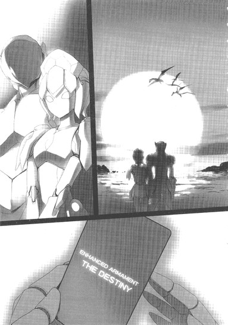
暗転。
スポットライト。
白い光の輪の中に、華奢な人影がひとつ浮かび上がる。
全身を彩るのは、春の日差しを思わせるサフランイエロー。しかし、以前は存在しなかった色合いが体の各所に見て取れる。額や胸、両手両足に煌めく、鏡のような銀色。
綻びかけた蕾のような形のショートヘアは、深く俯けられている。両腕は左右に大きく開かれ、細い両脚はだらりと力なく伸びる。そんな不安定な姿勢なのに小揺るぎもせず直立しているのは、背後から何かが彼女を拘束しているからだ。
大きな板を切り抜いたかのように薄く、艶のない漆黒に染まるそれは──十字架。何らかの磁力でも発しているのか、サフラン色の人影をがっちりと吸い付けている。
続く照明が、ようやく周囲を照らし出す。
緑がかった金属光沢を放つ地面。同様にメタリックな色合いを帯びた奇怪な虫たちがカサコソと這い回る。十字架は、すり鉢状に凹んだ広い窪地の底に立てられている。すぐ近くには、巨大な縦穴が黒々とした口を開ける。穴の側面は、透明な粘液に濡れているように見える。
照明が更に範囲を広げる。
直径三十メートルはあろうかという窪地の縁には、数十もの人影が輪を作っている。動くでもなく、喋るでもなく、皆押し黙って窪地の底の十字架を見詰めている。まるで、これから何が起きるのかを知っているかのように。息を潜め、眼を見開いて、恐れ──あるいは待ち望んでいる。
それらシルエットの中に、一つだけ地面に倒れているものがある。
黒みがかった銀の光沢を持つ、小柄な体。細い手足と、丸いヘルメット。懸命に起き上がろうとしているのだろうか、鋭く尖った指が金属の地面を強く抉る。しかし動けない。穴の底の十字架とよく似た、マットブラックの薄い板二枚が左右から彼を挟み拘束しているからだ。
不意に、窪地の中を緩慢に這い回っていた金属虫たちが、蜘蛛の子を散らすように走り出す。地面のあちこちにある生物のエラめいた襞に入り込み、たちまち姿を消す。
ずずず、ずずず、という低く重い振動音が、窪地の中央に開いた巨大な縦穴から響いてくる。
「やめろ......、やめろ、やめろ──────ッ!!」
もう何十回、何百回叫んだか解らないその言葉が、無制限中立フィールドの空にむなしく吸い込まれていく。
目の前の地面には、指先で引っ掻いた細い傷が無数に刻まれている。だが、どれほど力を込めようと、動かせるのは肘から先だけだ。両肩から二の腕を挟み込む漆黒の板は、厚みなどほとんどないのに、まるで巨大な万力の如く絶対的な圧力でクロム・ファルコンのアバターを締め付けてくる。
しかも信じがたいことに、この二枚の板を操るプレイヤーは、同時にずっと離れた窪地の底に漆黒の十字架を出現させてサフラン・ブロッサムをも拘束しているのだ。
ブロッサムは、ぐったりと項垂れてもう動く力もないようだ。それも無理はない。この数十分に彼女が味わった苦痛の凄まじさは、これまで加速世界で経験した痛み全てを足しても遠く及ぶまい。
そしてまた、ファルコンの意識を駆け巡る激しい怒りと絶望も、生まれてこのかた経験したことのないものだった。
「やめろ......やめろ、やめてくれ......」
食い縛った歯の間から、ひび割れた声を押し出す。同時に、〈煉獄〉ステージの硬い地面にアバターの指で新たな平行線を刻み込む。しかし動けない。その無力感が、絶望をいっそう深める。
体に感じる、おどろおどろしい震動。またあいつが来たのだ。
窪地の真ん中、ブロッサムを拘束する十字架のすぐそばに開いた直径二メートル以上もある穴の底から、何かが這い出そうとしている。まず、先の尖った触手が十本以上現れ、ゆらゆらと揺れる。続いて、二列に並んだ赤い光点が闇の奥で瞬く。底なしの飢えを感じさせるその光は、あいつの眼だ。触手がすぐ近くのブロッサムを感知した瞬間、無数の眼が強烈に輝く。直後──。
湿った音と粘液の滴をまき散らしながら縦穴から飛び出したのは、余りにも巨大なワーム型のモンスターだった。帝城の四方門を守護する〈四神〉を除けば加速世界で最強の存在、神獣級エネミーの一角──地獄の長虫〈ヨルムンガンド〉。
〈煉獄〉や〈疫病〉、〈腐蝕林〉といった一部の有機系ステージでしか出現しないが、それゆえに出会ってしまえばほぼ死は免れない。しかし巣は、神獣級としては狭い直径三十メートルのクレーター内だけなので、たとえ一度殺されても、一時間後に蘇生してから再度ヨルムンガンドが現れるまでの約十秒の間に離脱は可能だ。何かが──誰かが、意図的に移動を妨害しなければ。
黒い十字架に拘束され、まったく動けないサフラン・ブロッサムに、ヨルムンガンドがその頭部を近づけていく。二列に合計十六個も並ぶ、レンズのような赤い眼の下には、長い触手に取り囲まれた円形の口、いや捕食孔が存在する。鋸の歯のような牙を幾重にも備え、止めどなく粘液を滴らせる底なしの孔が、華奢なアバターへと迫る。一瞬体を震わせたブロッサムが、より深くこうべを垂れる。
「やめ......ろ......！ やめろおおっ............!!」
ファルコンのヘルメットから漏れる掠れた声を、人ならぬエネミーが聞き入れるはずもない。
直径一メートル以上もある長虫の口が、ブロッサムの頭上でいっぱいに開かれる。分泌された粘液が止めどなく滴り、山吹色の装甲に降りかかるやもうもうと白煙を上げる。あの液体には、アバターの物理防御力を一時的に大きく減少させる効果がある。身にまとった白銀の鎧の輝きが急激に失われる。それを待ちかねたように、ヨルムンガンドが十字架ごとブロッサムの上半身を咥え込む。
灼熱した感情のあまりか薄赤く染まった視界の中央で、長い時間を共に過ごしたパートナーが切れ切れの悲鳴を上げる。
強化外装〈ザ・ディスティニー〉の力は、予想を遥かに上回るものだった。
物理攻撃は、切断・打撃・貫通・銃撃・爆発を問わずほぼ無効化。エネルギー攻撃も、レーザー系は反射。冷気・炎熱・電撃に耐性。唯一、金属装甲の天敵である腐食酸だけは弾けないが、そんな攻撃技を持っているデュエルアバターがそもそもほとんどいない。無敵。そう言っても決して大げさではない、空恐ろしいほどの防御力だ。
しかし考えてみれば、あの鎧は、それこそ絶対無敵の超級エネミー〈四神〉を撃破し帝城の最奥部まで攻め上った者のみが手にできる、このブレイン・バーストというゲームの最終アイテムだったはずなのだ。それを、偶然と幸運、そしてシステムの不備に助けられ、ゲームの進行度としてはまだまだ序盤であるはずのこの時期に入手してしまった。圧倒的な力を発揮してもまったく不思議はない。
ゲームバランスそのものを崩壊させるほどの〈ディスティニー〉のパワーを、所有者となったサフラン・ブロッサム本人すらも恐れた。何せ、今までは一発で体力ゲージをほとんど持っていかれていた赤系や青系のフルチャージ必殺技を、直撃されてもわずかな削りダメージしか受けないのだ。一般対戦を数回行っただけで噂は加速世界中を駆け巡り、ブロッサムの元には鎧を買いたいというオファーや有力レギオンからの加入要請が殺到した。それにもちろん、インチキ、チートという悪罵の数々も。
もし、ファルコンと二人でただタッグ対戦を繰り返していた頃だったら、ブロッサムは鎧を封印、あるいは処分していたかもしれない。
しかし、今の彼女には見果てぬ夢があった。ポイント全損を防ぐための〈互助レギオン〉を立ち上げ、加速世界から殺伐としたデスゲーム要素をなくして、みんなが楽しく対戦できる......いや、生きられる場所にしたい、という。
それはもしかしたら、大人になるまで生きられないと宣告され、自分ではその運命を受け入れていると言っていたブロッサムの、密やかな抵抗なのかもしれなかった。加速世界の荒涼とした大地にたくさんの種を撒き、いっぱいの花を咲かせたい──。ＢＢプレイヤーとなったその瞬間から、彼女はずっとそんな夢を見ていたのだろうか。
互助レギオンの中核となる〈バーストポイント貸与システム〉を実稼働させるには、まず充分なポイントプールが必要だ。そして、必ず出てくるであろう、最初から踏み倒すつもりの悪意の参加者を牽制するための戦闘力も。
対戦はもちろんエネミー狩りにも圧倒的なパワーを発揮する〈ディスティニー〉は、ブロッサムにとっては夢の実現を約束するチケットに他ならなかった。さすがに鎧を装備しての乱入は控えたものの、挑戦してくる数多の猛者たちを、ブロッサムとファルコンは例外なく退けた。
最強と言われる〈純粋色〉の一人をすら、二対一ではあったが撃破してのけたその日、ブロッサムはついに自らの構想を加速世界に広く宣言した。同時に、新レギオンの加入希望者を広く募った。
そして、昨日。実に三十人以上のＢＢプレイヤーが連名で、具体的な話を聞きたいというメッセージを送ってきたのだ。
二人は大いに喜び、しかし一抹の不安をも感じた。彼らが話し合いの場所として、無制限中立フィールドを希望してきたからだ。安定したエネミー狩りが本当に可能なのか確かめたい、というその理由には一応納得したが、無制限フィールドでは何が起きるか解らない。最悪の場合、三十数人全員が一斉に攻撃してくるということもあり得るのだ。
だが、仮にそうなっても、〈ディスティニー〉を装備したブロッサムが一撃死するとは考えられなかった。だから二人は、話し合う場所を離脱ポイントのすぐ近くに指定するという保険をかけた。罠だったら、即座にポータルに飛び込めばいい。
本当は、それでもまだ万全とは言い難い。デュエルアバターの能力は直接攻撃ばかりではないからだ。ブロッサム自身がそうであるように、脚を止めたり視界を奪ったりという阻害糸の技を持つ者がいれば、ポータルからの脱出を妨げられる可能性はある。しかし二人は、敢えてその危険を無視した。メッセージに並んでいた名前の中には、昔からの知り合いも少なからず含まれていたからだ。この全員が示し合わせて悪意の罠を張るとは思えなかったし、思いたくなかった。
今日の話し合いの会場となった、現実世界ではレインボーブリッジ北の芝浦パーキングエリアにあたる建物のポータルを、近づく前に念のため遠くから確認もした。すでに集まっていた三十以上のアバターは、確かにメッセージに記されていたとおりの顔ぶれだった。
ほっと安心し、首都高台場線の高架下に出て歩きはじめたブロッサムとファルコンの足下から、突如二枚の薄板が出現し──。
二人を、有無を言わさぬ強烈な圧力で拘束した。
「やめろ......やめてくれ！ なぜ......どうしてなんだ............!!」
〈神獣〉の汎称が持つ神聖なイメージとはかけ離れたおぞましい長虫が、最愛のパートナーに無数の牙を埋め込んでいく光景を凝視しながら、クロム・ファルコンは何度目とも知れぬ絶叫を迸らせた。
問いかけは、長虫の巣である窪地の縁に立ち並ぶ数十名のＢＢプレイヤーに向けたものだ。
彼らの大部分は顔見知りだし、ギャラリーで一緒になれば親しく会話を交わす仲の者も数名いる、無論対戦したことも何度もあるが、勝ち負けはほぼ五分だったはずだ。これほどの悪意ある罠を仕掛けられるほどの遺恨を残した覚えはない。
だが、彼らはそろって沈黙を守り、地面で拘束されるファルコンを見ようともしない。ただじっと、窪地の底で繰り広げられる惨劇に視線を注いでいる。そのフェイスマスクには、一様に畏怖と戦慄の色が浮かんでいる。だがそれだけではない。怯えの裏に、とてもとても嫌な何かが存在することをファルコンは強く感じる。
不意に、すぐ右後ろから低く滑らかな声が聞こえる。
「済まないね、ファルコン君。彼らの代わりに、せめて私が答えよう」
どこか学校の教師を彷彿とさせるその声の主は、二枚の薄板と一つの十字架を操りファルコンとブロッサムを拘束するその当人だ。名前は解らない。それ以前に、これまで加速世界で一度たりとも見かけたことはない。黒いシートを切り抜き、縦に並べて人型を作ったような奇怪なフォルムのデュエルアバター。
「あの強化外装の力は、いまだ黎明期にあるこの世界に於いては余りにも規格外すぎるんだ。それは、ここ数日の対戦を通じて君たち自身も如実に体感したところだろう？」
ＢＢプレイヤーは、現実世界では最年長でもまだ小学二年生のはずだ。〈生まれた直後からニューロリンカーを装着し続けていること〉がブレイン・バーストをインストールするための必須条件であり、民生用ニューロリンカーの市販が開始されたのが、ファルコンたち〈第一世代〉が生まれたその年だからだ。
しかし漆黒の積層アバターの口調は、とても子供のそれとは思えない。現実世界のクラス担任である二十代の青年教師と比べても、更に年上にすら感じられる。そのプレッシャーに抗い、懸命に声を押し出す。
「なら......〈鎧〉を、ショップで処分する。手に入ったポイントは全部、公平に分配する。それでいいだろ......ここまでする必要はない、そうだろう......!!」
「残念ながら、その方法だとショップに強化外装が残ってしまう。再びあれを手に入れ、ゲームのバランスを崩す者が出てこないとも限らない。あの鎧は、元あった場所に戻されなければならないんだ。そのためには、プレイヤー以外の力によって、所有者を消滅させるのが唯一の方法なんだよ、ファルコン君」
どこまでも穏やかな声がそう告げたのと、ほぼ同時に──。
ヨルムンガンドの口元で、サフラン・ブロッサムのアバターが無数の細片と化して砕け散った。山吹色の光の柱が高々と屹立し、刹那の墓標を描いて消えた。
たった一咬みで侵入者を屠った地獄の長虫が、満足げに触手を振り立てながらずるずると巣穴に戻っていく。漆黒の十字架も、地面の濃い影の中に音もなく沈み込む。
後には、サフランイエローの小さな光だけが残される。無制限中立フィールドのルールに従い、ブロッサムは一時間の〈幽霊状態〉に置かれたのち、あの場所で蘇生する。──はず、なのだ。しかし。
左側、ファルコンからは黒い板に遮られて見えない位置で、密やかな囁きが発せられる。
「〈リザレクト・バイ・コンパッション〉」
人のそれとは思えないほど無垢で清らかな声に乗せて、小さな光の粒子たちが宙を流れ、窪地の底に舞い降りていく。それらが山吹色の〈残り火〉に触れた瞬間、眩い白光の柱が空から降り注ぎ、凝縮して、一つのアバターを実体化させる。本来ならあと一時間は生き返らないはずの、サフラン・ブロッサム。そのまま地面に崩れ落ちようとする華奢なシルエットを、足下から出現した十字架が再び拘束し、長虫の巣穴のすぐ隣に直立させる。
これと同じことが、すでに数限りなく繰り返されている。対エネミー戦での死亡で失われるバーストポイントは10で固定なので、ここしばらくの連勝で蓄積されたポイントはそう簡単には尽きない。残酷な死と、それ以上に残酷な蘇生の終わりなきサイクル。
神獣級エネミーのテリトリー奥深くに入り込み、脱出できずに何度も死んで、そのままポイントを全損してしまった例はこれまでも存在する。その現象を、ＢＢプレイヤーたちは〈無限エネミー・デス〉と呼び恐れた。しかし、ファルコンとブロッサムを罠にかけた黒い積層アバターたちは、黒い十字架と白い光によって意図的に現象を引き起こしているのだ。結果としての死ではなく、能動的な処刑。〈無限エネミー・キル〉。
............もう、やめてくれ。
懇願を声に出す力すら失われ、銀面の奥でただそう念じる。
無制限フィールドでは、被ダメージ痛覚は現実世界とほぼ同等にまで引き上げられている。ブロッサムはヨルムンガンドに殺されるたび、本当に全身を噛み砕かれるに等しい激痛を味わっているはずだ。たとえ現実の体にはかすり傷一つ付かなくとも、意識──魂に刻まれる痛みの記憶は消えないのだ。
いや......。
彼女が真に感じている痛みの源は、怪物の牙ではなく、窪地の周囲に立ち並んでいる数十人のプレイヤーたちの視線かもしれない。偽りのメッセージでブロッサムをおびき出し、この罠に突き落として、おぞましい長虫に何度も何度も喰い殺されるさまをただ眺めている、かつて友人だった者たち。
彼らのフェイスマスクには、恐怖や怯えだけではなく、仄かな興奮の色が確かに見て取れる。子供らしい〈怖いもの見たさ〉もあるだろう。だがその裏側に、もっとずっとリアルで醜悪な感情が隠されている。それは、現実世界の学校の教室で、異質な生徒を排斥しようとする集団が滲ませているものとまったく同じだ。
そして、同時に。
排斥される者を、安全圏から何もできずに見ているだけの生徒とまったく同じなのが、今のクロム・ファルコンだ。
ファルコンが〈帝城〉に忍び込みさえしなければ。強化外装〈ザ・ディスティニー〉を持ち出さなければ。それをブロッサムに渡さなければ、こんなことにはならなかった。全ての原因を作っておきながら、自分は傷一つ負わず、ただ愛する人の苦しむ姿を眺めている。
強制的に蘇生させられたブロッサムを感知し、巣穴の奥深くからまたしてもあの長虫が近づいてくる。どろ、どろという低い震動が地面を揺らすが、山吹色のアバターはもう身動ぎ一つしない。漆黒の十字架上で力なく項垂れ、何度目とも知れない〈死〉を待っている。あるいは、それらの死の先にある、ポイント全損、記憶消失という名の〈終わり〉を。
............僕は。
僕はまた、おなじ過ちを。
もう、見えないふりはしない。傷つけられ、疎外されて、居場所を失おうとしている人から二度と眼を逸らさない。そう決めたはずなのに。僕はまた、何もできず、ただ大切なものが損なわれるのを、こうして............
「............いやだ」
摩耗する寸前の意識から、懸命の声を絞り出す。
「もう、いやだ。もう、僕だけ残るのは絶対にいやだ」
アバターを拘束する二枚の薄板は、まるで世界そのものに固定されているかの如き絶対的な重さを伝えてくる。ファルコンのパワーでは、どんなに力を振り絞ろうとも一ミリたりとも動かせないことはすでに思い知らされている。だが、まだ一つだけ脱出の可能性がある。
漆黒の板ではなく──自身の金属装甲を破壊できれば。
「う......お......お、お、おおお..................」
軋むような唸り声に乗せ、残された力の全てを振り絞る。両腕で、左右の板を押す。押す。
クロムシルバーの装甲が、圧力に耐えかねて甲高い悲鳴を上げる。今までは、ここで諦めてしまっていた。だが、自分が砕ける予感を無視して、更に押す。
「やめておきたまえ、ファルコン君」
積層アバターの、本気で心配しているような囁き声。
「我々に君をも排除する意図はない。作戦が終了すれば、ちゃんと解放する予定なんだ。おそらくあと一、二回だから、それまでおとなしくしていてくれないかな」
「だ......まれ......!!」
勝手な言いぐさへの反発をも力に変えて、黒い板にぶつける。ついに、両腕の装甲に細かいヒビが走りはじめる。スパークにも似た痛み。だが、こんなものでは足りない。まったく足りない。
「............っ............!!」
無音の咆哮とともに、あらん限りの力を解き放った、その瞬間。
両腕の装甲が、硬質な金属音とともにこなごなに砕け散った。内部の、ダークグレーの基本構造体からも鮮血に似たダメージエフェクトが迸り、息が止まるほどの激痛が神経を駆け巡り──そして、ＨＰゲージが大きく減少するとともに、必殺技ゲージが二割ほどチャージされた。
掠れた声で、叫ぶ。
「〈フラッシュ・ブリンク〉!!」
クロム・ファルコンのアバターは、実体を持たない量子へと変じ、ついに薄板の拘束から脱出する。そのままテレポートに等しい速度で突進し、十五メートル先で実体化。
目の前に、磔にされたサフラン・ブロッサムと、その細い体を噛み砕かんとするヨルムンガンドの頭があった。
最後の力で、右足の鋭い爪先を巨大な長虫に叩き込む。幾つも並ぶ赤い単眼の一つが、粘液をまき散らして粉砕される。視界に表示された、エネミーの二段ＨＰゲージが絶望的なほどわずかに減少し、しかし不意打ちに驚いたのか、長虫はブロッサムを解放して大きく頭を振り動かす。
エネミーが轟かせる怒りの咆哮の下で、かすかな声が弱々しく空気を揺らす。
「〈ペタル・シェルター〉」
十字架の足下から、巨大な緑色の花びらが幾つも生まれ、二人を包み込むように丸い蕾を作る。サフラン・ブロッサムのレベル５必殺技。強固な花弁が、あらゆる攻撃から内部を完全に守る。効果時間──三十秒。
穏やかな薄緑色の光が満ちる球体の中で、消滅した十字架から落下しようとするブロッサムを、ファルコンは装甲の失われた両腕で抱き止める。
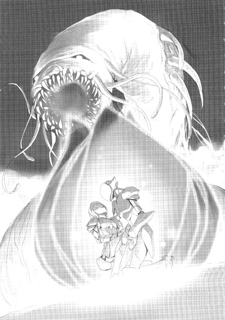
そのままうずくまり、最愛のパートナーの顔を懸命に見詰める。この三十秒が、二人に与えられた最後の時間だ。花びらが消えれば、再びあの十字架が現れて二人を拘束するだろう。そしてヨルムンガンドは、増えた獲物を本能に従って屠り続けるに違いない。
自ら死地に飛び込んだことに、無論後悔はなかった。しかしこの貴重な時間に告げるべき言葉を、ファルコンは見つけられなかった。だから歯を食いしばり、嗚咽を押し殺して、懸命にブロッサムのフェイスマスクに見入り続けた。加速世界から消えた後も、この美しい顔を、瞳の空色を、絶対に忘れないために。
「............ごめんね」
ぽつり。零れた、かすかな声。
「ごめんね、ファル。私......あなたの優しさに甘えてた。現実世界で奪われた未来を、この世界で取り戻したくて......そのための大人ごっこを、あなたにも押しつけてた。この結末は......私の焦りが呼び寄せたんだよね。ごめんね......」
ブロッサムのアイレンズから、透明な光の粒が次々に滴り、空気に溶けて消えた。
──そんなことない。そんなこと、ない。
そう言いたかったのに、熱い塊が喉を塞いで声を出せない。せめて懸命にかぶりを振る。そのヘルメットを、細い指先がそっと撫でる。
「でもね......、でも、これだけは信じて。私、あなたが大好きだったよ。最初に出会った時から、ずっと好きだった。だって、すぐに解ったから。あなたが、弱い私を守りたいと思ってくれたこと。みんなが、誰かのポイントを奪おうとだけ考えてる中で、あなたが......あなただけが............」
その先は言葉にせず、ブロッサムはにこりと微笑んだ。
そして、頬から動かした右手で、ファルコンの右手を包み、導く。ヨルムンガンドの牙で惨たらしく傷つけられた、自分の胸の真ん中へと。
「最後の、お願い。ファル、あなたが、私を消して」
「......え............」
ようやくそれだけを呟いたファルコンに、ブロッサムは微笑みながら告げた。
「私のポイント、もうあと７しかないの。あのエネミーに殺されてこの世界から消えるくらいなら、あなたに送って欲しい。そうすれば、ブレイン・バーストを強制アンインストールされても、きっとあなたのこと、憶えていられるから。たとえ記憶を消されても、あなたのことだけは、ずっと」
ここで、ついに技の効果時間が終了し、緑の蕾は天頂からゆっくりと解け続ける。球体を満たしていた静寂を、長虫の怒りの咆哮が破る。
「............フラン」
胸に満ちる思いの全てを言葉にするには、残された時間は余りにも短すぎた。
傷ついた、太陽の色のアバターを左腕で思い切り抱き締め、ファルコンはありったけの感情を込めて囁きかけた。
「ありがとう」
ありがとう。こんな僕の差し出した手を取ってくれてありがとう。僕に色々なことを教えてくれてありがとう。僕のちっぽけな世界を広げてくれて、ありがとう。
握られた右手の指を、まっすぐに伸ばす。猛禽を模して鋭く尖った指先が、サフラン・ブロッサムの胸の中央、クリティカル・ポイントの一つである心臓の真上に触れる。
「......愛してる」
これまで、一度として口に出しては言えなかったそのひとことを告げながら、鋭く右手をつき下ろす。
ヨルムンガンドの牙と消化液によって無力化された。〈ディスティニー〉の銀甲を、ファルコンの貫手が深く深くつらぬく。
......さよなら、ファル。大好きだよ。
そんな声が、ささやかな微風となって意識に流れ、消えた。
サフラン・ブロッサムのアバターは、これまでのように千の細片となって爆散するかわりに、はらり、とその形を解いた。暖かい、春の日差しを思わせる色の光の中で、華奢なシルエットは無数のリボンへと分かたれ、空に舞い上がっていく。それらのリボンは、更に微細なコードの織り糸へと還元され、大気に溶けて──消える。
〈最終消滅現象〉。ポイント全損者の、加速世界からの完全なる退場。
ふと気づくと、腕の中は空っぽになっていた。
自分自身が消えてしまったかのような、余りにも深い喪失感に打たれてうずくまるクロム・ファルコンの背中を、ヨルムンガンドの無数の牙が音高く咥えこんだ。
そのまま、高々と持ち上げられる。金属装甲がオレンジ色の火花を撒き散らす。ぎし、ぎしとアバターの全身が軋み、視界左上の体力ゲージがみるみる減少していく。同時に、眼も眩むような激痛。
でも、悲鳴は上げない。上げられない。この恐ろしい痛みを、ブロッサムは無限に等しいほどの回数味わったのだ。奥歯を軋ませ、必死に耐える。ぼやけ、歪む視界の彼方に、ぐるりと輪を作って並ぶプレイヤーたちの姿が見える。
彼らの眼には、一様に驚きと──蔑みの色が浮かんでいる。無意味に命を捨てる愚か者と失笑している。
この状況からの脱出は、実のところ不可能ではない。被ダメージと同時に蓄積されていく必殺技ゲージを使用して、再度〈ブリンク〉すればいいのだ。
しかし、もう逃げる......いや、生きる意味があるだろうか？
サフラン・ブロッサムは消えてしまった。また独りになってしまった。ここから逃げのび、ソロプレイヤーに戻って無目的に対戦を重ねても何になるだろう。それならばいっそ、ここでブロッサムと同じように、この長虫に喰い殺されたほうがいい。何度も、何度も。彼女と同じようにポイントが尽き、世界から追放される、その時まで......。
ふと、気づく。
削り取られていくＨＰゲージと、充填されていく必殺技ゲージの下に、小さな光が点滅している。首を動かしても、光はぴたりと追随してくる。これは......システム・メッセージだ。四角いカーソルが、何かを告げようとしている。
ぼやけた視界をその一点にフォーカスさせた瞬間、音もなく文字列が流れた。
【ＹＯＵ ＡＣＱＵＩＲＥＤ ＡＮ ＥＮＨＡＮＣＥＤＡＲＭＡＭＥＮＴ〈ＴＨＥＤＥＳＴＩＮＹ〉】。
──しばらく、理解できなかった。
強化外装の入手メッセージだ。しかも、封印カード状態での入手を示す〈ＧＯＴ〉ではなく、所有権者になったことを示す〈ＡＣＱＵＩＲＥＤ〉。対象は──〈鎧〉。サフラン・ブロッサムと一緒に消え去ったはずの〈ザ・ディスティニー〉。
しかし、なぜ、強化外装を譲渡するには、〈ショップ〉で売却・再購入するか、直結対戦で受け渡す以外の方法は......。
いや。もう一つ、曖昧な噂を聞いたことがある。所有者であるプレイヤーが加速世界から最終消滅した時、ごく低い確率で、最後の攻撃を行ったプレイヤーの所持品欄に強化外装が移動することがある、という。
ブロッサムが、自分に止めを刺してくれるようファルコンに頼んだのは、この結果を願ってのことだったのかどうかを知るすべはもうない。
しかし、ファルコンには、これが彼女からの最後のメッセージだと感じられた。
生きろ、と。生きて戦って、と。
無意識のうちに、銀面の下で呟いていた。強化外装の装備を指示する、デフォルトの音声コマンド。
「着装......〈ザ・ディスティニー〉」
小型の恒星の如き強烈な光が生まれ、世界を銀色に染めた。
アバターの手足と胴体を、分厚い追加装甲が鋭い金属音とともに覆っていく。そのデザインは、ブロッサムが装備していた時の〈鎧〉とは大きく異なる。もともと強化外装は、それを身につけるデュエルアバターの体格によってサイズを自動調整するが、この鎧の変わりようは調整の域を超えている。かつての優美さと軽快さは失せ、今や鋭くエッジが立ったプレートアーマーの趣だ。
最後に頭部を覆った装甲も、元の円冠ではなくオープンタイプの兜だった。ファルコンの体の八割以上を包んだ重厚な鎧は、がきぃん!!という強烈な衝撃音とともに、アバターを噛み砕く寸前だったヨルムンガンドの牙を全て跳ね返した。
神獣に列せられる巨大なエネミーは、怒りの雄叫びを上げつつ再度ファルコンを咥え込むと同時に、牙の間にある腺から透明な粘液を大量に分泌する。それらは銀の装甲にぼたぼたと滴り、腐食効果で強度を奪おうとする。
だが、一瞬曇りかけたミラーシルバーの輝きは、薄膜を剥がすかのように黒みをおびたクロム・シルバーへと変化し、腐食を拒否する。その色合いは、ファルコン本来の装甲と完璧に一致している。
〈クロム〉は、メタルカラーチャートでは貴金属と卑金属のほぼ中間に位置する色だ。物理攻撃にも特殊攻撃にも中途半端な耐性しか持たない。ただ、唯一の特徴として、腐食系攻撃だけはほぼ完全に弾く。
それは、意志なき強化外装であるはずの〈鎧〉が、装備者の属性を吸収することで怪物の粘液に対抗した──としか表現できない現象だった。だが、そんなロジック面の推測などもうファルコンにはどうでもよかった。
何かに導かれるように両手を持ち上げ、自分の胸を貫かんと火花を散らしている巨大な牙を一つずつ握る。
胸の奥で、ぼっ、と音を立てて燃え上がるものがあった。
加速世界に降り立ってからの十一ヶ月、主観時間では五年以上の歳月で、ほとんど抱いた覚えのない感情。サフラン・ブロッサムへの思慕と、彼女の死に対する絶望を鋳型にして生まれたそれは──怒り。
「う......うああ......」
喉の奥から、しわがれた声が漏れる。
クロム・ファルコンは、現実世界でも、怒るということをしない子供だった。大人の言うことを聞き、周りの顔色を窺い、自分を殺して生きてきた。
だから、幼稚園の頃からの親友が、同じ小学校に入った途端にクラスで苛めのターゲットにされた時も、何もせずにただ彼から離れた。眼をつぶり、耳を塞いで、自分以外の誰かが何とかしてくれるのを待った。しかしその誰かが現れる前に、親友だった少年はいなくなってしまった。
本当は、せめてその時怒るべきだった。苛めを主導した子供たちに。何も気づかなかった教師に。そして、見て見ぬ振りをした自分自身に。でも、そうせずに、あらゆる記憶と感情を小さな石になるまで押し固め、深いところに埋めた。
「う......あ......ああああ............」
今、その石が細かくひび割れ、内部から赤熱したものが溢れようとしているのを感じながら、ファルコンは歪んだ声を上げ続けた。
両手の十指が、じゃきっ！ と音を立てて巨大なかぎ爪へと変ずる。鋭い先端が、ヨルムンガンドの牙にみしみしと食い込む。腕から肩にかけて、装甲のエッジがいっそう尖り、ボリューム感を増す。
偽のレギオン加入メッセージを送ってきた三十人が、なぜ二人を裏切り罠に掛けたのか、今なら解る。彼らにはチートとも思えるだろう強化外装を手に入れたからだけではない。
サフラン・ブロッサムが、自分たちと違うから。理想と、それを実現するための強さを持っていたからだ。
「でも......お前たちだって......」
──お前たちだって、ＢＢプレイヤーである以上、現実世界では多かれ少なかれ異物扱いされてきたはずだ。集団から弾かれ、心に傷を抱えてこの加速世界に来たはずだ。なのに、そこでもまた誰かを弾くのか。自分たちと違う者を囲んで石を投げるのか。
「フランは......そんな、お前たちのために............居場所を............作ろうと............」
肺腑から怒りを絞り出すにつれ、アバターの両手が薄い光を帯びていく。
いや、それは何かを照らすエネルギーではない。熱を、光を奪うマイナスの波動。
闇色のオーラ。
デュエルアバターが、このような継続的エフェクトをまとうのは、ゲージを消費して必殺技を発動している時だけのはずだ。なのに今、ファルコンの必殺技ゲージはほぼフルチャージされたまま一ドットも減っていない。
しかし、そんな異常を意識することもなく、ただ切れ切れの言葉を放ち続ける。
「お前たちが......ずっと、この世界で遊べるように............全損の恐怖に怯えなくてもすむように............フランは、ただ、それだけを............！」
いつしか、十本のかぎ爪に深々と抉られたヨルムンガンドの牙は、ファルコンの体から完全に離れている。怪物は二列に並んだ単眼を激しく明滅させ、盛んに巨体をくねらせているが、闇のオーラをまとったアバターの両腕は微動だにしない。
「それだけを、願って............いたんだぞ!!」
血を吐くような咆哮。
心の深いところで、凝り固まった感情の石が粉々に砕ける音をファルコンは聞いた。
怒り。物心ついてから今日この瞬間までずっと押し殺してきたありとあらゆる物への怒りが炸裂し、アバターの内側で荒れ狂い、無明のオーラとなって外界へと放たれた。
闇の波動は、まるで物理的圧力をも備えているかの如く、長虫の分厚い外皮を震わせ、ひび割れさせた。甲高い咆哮を撒き散らすエネミーの、円い口の上端が大きく裂けた。
「あ............あああ............あああああ──────ッ!!」
金属質の歪みを帯びた絶叫とともに、ファルコンは牙を握った両腕を大きく開いた。
異様な音を立てて、ヨルムンガンドの頭部が左右に引きちぎられた。単眼の大部分が内側から破裂し、深い裂け目からは大量の体液が噴き出す。構わずその亀裂に両手を突き入れ、内部の柔組織を掴み、更に引き裂く。引き裂く。
地面に両脚がついた時、地獄の長虫はその半ばまでが左右に断ち割られていた。のたうち回り、巣穴に引っ込もうとする巨体の右半分を両手のかぎ爪で捕獲し、左半分は同じく爪先が尖った足で踏んで固定する。全身の力を振り絞り──尻尾まで、一気に裂き尽くす。
ついに完全に分断されたエネミーの体は、一瞬不自然な形で停止してから、幾千もの断片と化して砕け散った。
窪地全体を覆う規模の爆散エフェクトの中心から、何か細長いものが実体化し、ファルコンの眼前に突き立った。それは、清冽なクリスタルホワイトの刀身を持つ、一本の長剣だった。エネミードロップの強化外装だ。内部に星を閉じ込めたかのようた煌めくその剣に、ためらわず手を伸ばし、柄を握る。
途端、長剣は小さなカードへと姿を変じ、消える。視界上部に、小さなシステムメッセージ。【ＹＯＵＧＯＴＡＮＥＮＨＡＮＣＥＤＡＲＭＡＭＥＮＴ〈ＳＴＡＲＣＡＳＴＥＲ〉】。
軋むような声で、呟く。
「着装、〈スターキャスター〉」
右手の中に、神々しいデザインの長剣が再出現する。しかし闇色のオーラは即座にその剣をも覆い、色合いと形状を歪めていく。透き通るクリスタルは、ぎらつくクロムシルバーへ。直線的な柄は、禍々しくうねる。刀身そのものも幅と厚みを倍増させ、刃の数箇所が牙状に尖る。
新たな姿を得た大剣を両手で握り、体の前にかざす。
黒ずんだ銀色の刀身に、ひとつのデュエルアバターが映っている。それはもう、シンプルな細身に丸いヘルメットを載せたクロム・ファルコンではない。破壊の意志そのものをオブジェクト化したような、凶悪極まるシルエット。
唯一、もとのつるりとしたマスクだけが、オープンヘルムから露出している。しかし闇のオーラはヘルメットの額部分に凝集し、顔全体を覆えるサイズのバイザーを作り出す。
それが下りたら、もう元には戻れない。直感的にそう悟る。
......僕が変わってしまったら、きっとフランは悲しむだろう。
......でも、もう彼女はこの世界にはいないんだ。
今この時を最後に、クロム・ファルコンの名前は捨てる。サフラン・ブロッサムと一緒に、この地に葬る。彼女の理想も、優しさも、思いやりも、全部ここに埋めていく。
なぜなら、それを拒否したのは、窪地の周囲に立ち尽くしているプレイヤーたち自身なのだ。共存ではなく闘争を。手を繋ぐのではなく、命の奪い合いを。親愛よりも、怒りと憎しみを彼らは望んだ。ならば──
応えよう。
両手の剣を高々とかざし、体の奥底から吹き上がってくる憤怒のままに、もう一度吼える。
「お......おおおおお............！」
全身から迸った闇のオーラは漆黒の雷を生み出し、金属質の地面を次々に穿つ。足下から放射状にひび割れが走り、びりびりと大地が震える。地鳴りと共鳴するほどの音量で、尚も叫ぶ。
「おおお......オオオオアアアアア────!!」
無限に湧き上がる怒りそれ自体が何らかの媒質となり、世界そのものに干渉していく感覚。それが錯覚ではない証として、視界左上に表示されたままのシステムカラーのフォントすら小刻みに明滅している。装備中の強化外装を示す〈ＴＨＥＤＥＳＴＩＮＹ〉及び〈ＳＴＡＲＣＡＳＴＥＲ〉の上下二行の文字列が、歪み、崩れ、溶け合っていく。
一行に重なり、融合し、新たな単語を創り出す。
〈ＴＨＥ ＤＩＳＡＳＴＥＲ〉。
「グ......、ル、アアアアアアッ!!」
その絶叫は、最早人のものではなかった。飢え、猛る、獣の咆哮だった。
がしゃり、と激しい音を立て、額のバイザーがひとりでに下りた。
視界が、薄いグレーのフィルタに覆われる。しかし解像感は倍増し、輪を作って並ぶデュエルアバターたちの表情がくっきりと見て取れる。そこには途惑いと驚き、そして不安の色が濃く滲んでいる。しかしもう、ファルコンには彼らが何を感じ、考えているかなどまるで意味を持たない。彼らは殺戮の対象でしかないからだ。バイザーの下で両眼を細め、最初に狩るべき個体を探る。
輪の一箇所に意識を向けた時、そこに立つ数人が交わしている囁き声の会話が、まるで高指向性のマイクを向けたかのように増幅されて聴覚に届く。
『......ージの全回復を確認。必殺技ゲージの消費なし。間違いあらへん、イマジネーション回路による〈メイン・ビジュアライザー〉のオーバーライド現象や』
声の主は、やけに巨大なアイレンズを四つも光らせるごく小柄なアバターだ。それに答えるのは、ファルコンとブロッサムを奇怪な技で拘束したあの黒い積層アバター。
『やはりコンセントレーションの深化よりもセンチメントの爆発のほうが圧倒的に早く現象を起こせるようだ。制御可能かどうかは別問題だが』
四つ眼アバターが頷く。
『そうやね。それと、一定レベルを超える強度の〈心傷殻〉を持つもんがメタルカラー化することもほぼ確実やわ。ただ、あの融合現象が〈七星外装〉固有の力なんか、単にあいつがメタルカラーだからなんかは、うちの〈アナライズ〉でも何とも言えんなあ』
『ふむ。可能なら、時間をかけて分析して欲しいところだが......』
その時、二人の背後から、異なる声。
『確保できますか、バイス？』
一切の雑味のない、まるで雪解け水のようにクリアな甘さを湛えるその声は、間違いなくブロッサムを強制蘇生させ続けたプレイヤーのものだ。バイザーの下でいっそう眼を凝らすが、不思議な光が邪魔をして姿を捉えられない。
『やってみましょう』
積層アバターは、薄板を並べただけの頭部を頷かせると、同じデザインの左手を持ち上げた。
その腕を構成する数枚の板が、順に滑るように地面に消える。直後、ファルコンの真後ろにあの黒い十字架が音もなく出現し、奇怪な引力で全身を貼り付けようとする。
だが。
「グ......ルアッ！」
短い唸りとともに、右手の剣で背後を一薙ぎすると、ガラスが砕けるような音と手応えを生んであっけなく十字架は破壊された。直後、彼方の術者の左肩から、ダメージエフェクトの閃光が迸る。
『おっと。これは凄いな、ノーマルな技ではとても押さえられない』
そんな呟きを漏らす積層アバターを、ファルコンは強く見据えた。
会話には意味不明な単語が多すぎたが、一つだけ明らかなことがある。それは、奴らが全てを図ったということだ。何らかの企てに基づいてサフラン・ブロッサムを呼び出し、〈無限エネミー・キル〉で嬲り殺したということだ。
ならば、最初に狩るべきは奴らだ。
大剣を両手で握り、重々しい動作で大上段に振りかぶる。クレーター外周で途惑ったようにざわめく数十人は完全に無視し、漆黒の積層アバターに向かって、一歩踏み出す。同時に、無音の技名発声。
──フラッシュ・ブリンク！
超速のテレポートと同時に斬り下ろされた刃は、漆黒のアバターに残された右腕を根本から断ち切った。しかし、顔らしい顔を持たない相手は、さしたる動揺の気配も見せずに一歩退くと、いきなり両腕を失った体そのものをばらりと分解させた。
それらは二枚の巨大な板へと変わり、隣に立つ四つ眼アバターと、背後の光に包まれた何者かを左右から挟み込む。いかなるロジックなのか、板はそのまま薄い一枚へと閉じてしまう。
すうっ、と地面の影に沈み込もうとする漆黒の大板に、ファルコンは剣を横薙ぎに叩き付けた。だが、上端を一部斜めに切り飛ばすに留まる。板は影にささやかな波紋を作って完全に沈降し、フィールドから謎めいた三人の気配が消える。
「グ......ルル............」
敵を逃がしたことに怒りの唸り声を漏らした、その数秒後。
ぎぃん！ と耳障りな金属音と、軽い衝撃が右肩で発生した。
ゆらりとした動きで振り向く。そこに立っているのは、中型の青系デュエルアバターだ。両手で、木刀と長刀のあいのこのような大型の近接武器を握っている。よく顔を見知った、親しい、と言っていい相手だった。数少ない〈第一世代〉の一人で、その長柄の直撃は、かつてのクロム・ファルコンの装甲すら砕いたものだ。
だが、ちらりと確認した右肩には、ヒビはおろか凹み一つ存在しない。
信じられない、という顔で何かを言おうとしている相手の名前を思いだそうとすらせずに、ファルコンは闇のオーラをまとう大剣を無造作に斬り下ろした。
ドッ、という重苦しい音が冷たい空気を揺るがす。青系アバターの携える武器がまず中程から上下に離れ、次いで所有者自身の上体もずるりと滑って、地面に転がった。遅れて傾いた下半身が途中で停止し、上半身と同時に爆散。あとに、装甲色の小さな光だけが残される。
この場に存在する三十数名の中では間違いなく最高レベルに達していたプレイヤーが、たった一撃で屠られる光景に、残る者たちは激しく動揺する気配を漏らした。どうなってるんだ、話が違うだろ、というような震え声が、次第に音量を増していく。
「やべえ......に、逃げろ!!」
誰かが叫んだ途端、堰を切ったように一方向へ走り始める。数十メートル先の芝浦パーキングエリアに存在する離脱ポイントから現実世界へと逃げるつもりなのだろう。──しかし。
フラッシュ・ブリンク。
そう念じると同時に黒銀の鎧はかき消え、逃げる者たちのすぐ目の前に出現する。再度の斬撃。三つの首が同時に落ちる。
「う......うわ......うわああああ！」
悲鳴。叫喚。尚も逃げようとする者も、周囲のビルに隠れようとする者も、反撃を試みる者もいたが、闇の刃は例外なく彼らを襲い、一撃でゲージを奪い尽くしていく。
ファルコンを突き動かしているのは、最早単なる怒りではなかった。恨みや復讐心すら超えた、壮絶なる決意──あるいは呪詛だった。
この世界を破壊する、という。
もし後年の、ブレイン・バーストの秘匿されたロジックに通じたバーストリンカーがこの時のクロム・ファルコンを見たら、こう判断しただろう。あの闇色の過剰光は、純粋なる負の心意の顕現だ、と。絶対的な否定の意志によってあらゆる存在を砕く、心意システムの暗黒面そのものだ、と。
わずか数十秒の殺戮が終了した時、窪地の周囲には無数の残り火が音もなく揺れるのみだった。
黒銀の破壊者は、たっぷりと血を吸った大剣を地面に突き立てると、その場で静止した。
一時間後、彼らが蘇生するのを待つために。
この日、加速世界から、一気に三十人以上のプレイヤーが完全消滅した。
たった一人、幸運にもポータルから生還できた者が、恐怖に震えながら語った恐るべき顛末──凶悪な鎧をまとった〈クロム・ファルコン〉に仲間全員が皆殺しにされた、という話は、当初半信半疑で受け止められた。
しかし、その噂を確かめるためにファルコンに一般対戦を挑んだ者が例外なく大剣のたった一撃で屠られるに及んで、誰もが認めざるを得なくなった。
ほぼ一年にわたって成長してきた加速世界に、恐るべき災禍が誕生したことを。
いつしか、プレイヤーたちは誰も破壊者を本来のアバターネームでは呼ばなくなっていた。名前の下半分に強化外装の名称を冠し──こう呼んだ。
〈クロム・ディザスター〉。
暗転。
スポットライト。
白い光の輪の中に、ダークメタルの鎧に身を包み禍々しい大剣を携えた騎士が浮かぶ。
うずくまるその全身はぼろぼろに傷つき、ひび割れ、剣も激しく刃こぼれしている。
彼をここまで追い詰めるために、加速世界最強のプレイヤーたちが数限りなく対戦を挑み、時には一対多数のバトルロイヤルモードで消耗させたのだ。
だが破壊者は一度たりとも対戦を拒否せず、それどころか〈一日一回〉の乱入制限すら解除して、あらゆる条件の戦いを受けた。普通ならば、一般対戦でも十回も連戦すれば精神的疲労でまともに動けなくなるはずなのに、一日に軽く百を超えるデュエルを戦い抜き、魂そのものを摩滅させていった。
いつしか剣のまとう闇のオーラは薄れ、鎧も輝きを失ったが、それでも破壊者は戦い続けた。勝率は低下し、ポイントを少しずつ削られ、そしてついに無制限中立フィールドに於ける最大最後の戦いで全損の間際まで追い詰められた。
うずくまる騎士の周囲から、じりじりと複数のデュエルアバターが間合いを詰めてくる。
全員が現在最強と言われる手練たちだ。大レギオンを率いる〈純粋色〉すら数名含まれている。
瀕死の破壊者が、剣にすがってよろよろと立ち上がる。
凶悪なデザインのバイザーが一部欠け落ち、内側から滑らかなヘルメットの曲線がわずかに覗く。
そのマスクが加速世界の空を見上げる。
僕は──かつてクロム・ファルコンという名前だったＢＢプレイヤーは、今日ここで消える。
記憶消去、あるいは思考操作処置の噂が本当なら、僕は加速世界のことを何もかも──あれほど愛したサフラン・ブロッサムのことすらも忘れて、難しい言葉なんか一つも知らない、ただの小学二年生に戻るのだろう。
でも、僕のこの怒り──悲しみ──そして絶望は残していく。
僕も、そしてブロッサムも、権力なんか求めてなかった。〈鎧〉の力で加速世界の覇権を握ろうなんて、少しも思ってなかった。ただ皆と一緒に、いつまでもこの世界に居続けられさえすれば、それでよかった。
鏡のような〈鎧〉の表面に、支配や破壊、略奪の欲望を見たのなら、それは見る者自身の欲が映っていたに過ぎない。
力を望んだのは彼らだ。サフラン・ブロッサムを残酷な方法で何度も何度も殺した者たちのほうだ。
ならば与えよう。
僕の怒りと、ブロッサムの苦しみを、この〈鎧〉──〈ザ・ディザスター〉に残す。今後、力への渇望に駆られてこれを身につける者は、あらゆるバーストリンカーを襲い、壊し、喰らうようになる。喰らって力を奪い、無限に強くなる。最後の一人になるまで。どこまでも広がる加速世界の荒野にただ一人残る、終焉の時まで。
それが、お前たちの望みの本質なのだから。
僕は、この世界を呪う。穢す。たとえここでいっとき消えても、僕の怒りと憎しみは──
何度でも、甦る。
暗転。
２
細い指先が頬を撫でる感覚に、有田春雪は薄く両眼を開けた。
ぼやけた視界がゆっくりと焦点を結ぶ。純白の装甲を持つ小さな手。同じ色の、小袖を模した形状の腕。可愛らしいフェイスマスクと、つぶらな緋色のアイレンズ。
膝立ちになって手を伸ばす、かつてのネガ・ネビュラス〈四元素〉にして浄化能力者であるレベル７バーストリンカー〈アーダー・メイデン〉の姿を、ハルユキは白銀のヘルメット越しにしばし見詰めた。
メイデンの華奢な指先には、透明な雫が一滴光っている。気がかりそうな彼女の表情に首を傾げてから、ようやくその雫が自分の頬に流れているものであると悟る。
「え......あ............」
掠れた声を漏らしながら、慌てて右手で頬を擦り、半分オープンにしていたヘルメットのシールドを全部閉じた。ハーフミラーの銀面に包まれたデュエルアバター〈シルバー・クロウ〉の顔を俯けさせ、もごもごと言い訳する。
「あの、すいません、大丈夫です......寝てたら、なんだかすごく......すごく長い夢を......」
そこで口を止め、眉を寄せる。
夢を──見ていたのだ。
その長い長い夢の中で、ハルユキはシルバー・クロウではなかった。とてもよく似た、しかし色合いがわずかに異なるメタルカラー。だが、覚えているのはそれだけだ。どこに行き、何をして、どうなったのかは真綿のように白く柔らかい障壁に阻まれて思い出せない。
ただ、胸の奥に、ぽっかりと穴の開いたような感覚だけがわずかに残っている。虚ろさの中にちくりと鋭い痛みが走るこれは......喪失感......？
............大好き、だよ............。
聞き覚えのない誰かの声が耳元を過ぎり、なぜかまたしても滲みそうになった涙を、きつい瞬きでどうにか堪える。大きく頭を振り、ついでに冷たい空気を思い切り吸い込んで奇妙な切なさを押しやると、改めて周囲を確認した。
いつのまにか暗くなっている。頭上には、現実世界の東京では望むべくもない鈴なりの星。空が見えるのは、ここが建物内ではなく中庭的な空間だからだ。
足を投げ出して座るハルユキが背中を預けているのは、直径一メートルほどもありそうな太い円柱。すぐ右手には、空まで届きそうな高い壁がそびえる。
眠り込む前に見た地形と、何も変わっていない。だが、最後に自分の脚の間を見下ろし、そこにあったはずの分厚い氷が真っ白い玉砂利に変わっているのに気づいて首を傾げる。慌てて振り向くと、後ろの柱も、薄青い氷ではなく朱塗りの木製だ。
「あれ......僕が寝てる間に〈変遷〉があったんですか？」
目の前のアーダー・メイデンにひそひそ声で訊ねると、白と緋の二色を持つ巫女型アバターはこくりと頷いた。幼くも凛とした響きのある声で、こちらもひそっと応答する。
「そのようなのです。でも、私もクーさんの隣で寝ていて気づきませんでした」
〈変遷〉とは、この世界──ブレイン・バースト・プログラムによって創出される〈無制限中立フィールド〉のステージ属性が、一定時間で切り替わる現象のことだ。シルバー・クロウとアーダー・メイデンがこの場所で仮眠を取り始めた時は、あらゆるものが凍てついた〈氷雪〉ステージだったはずなのだが、今は雪も氷もひとかけらも見つからない。
まるで季節が戻ってしまったかの如く木々は色鮮やかに紅葉し、柱は木製、壁は白塗りだ。純和風、とでも言いたくなるこの属性は......
「〈平安〉ステージなのです」
そう囁きながら、緋色のアーマースカートを広げてぺたりと正座するアーダー・メイデンの姿は、余りにも周囲の光景にマッチしていてまるで一幅の絵のようだ。思わずほけーっと見入っていると、小柄な巫女は気恥ずかしそうに俯いてしまうので、慌てて眼を逸らす。
この可憐にして苛烈なデュエルアバターを操るのは、いま中学二年のハルユキより四学年も下の少女、四埜宮謡。梅郷中の系列女子校・松乃木学園初等部に通う四年生で、つまりは本物のお嬢様だ。年上の男子からじろじろ見られる経験などほとんどないであろう彼女から外した視線を、再び周囲に泳がせる。
ずらりと南北に並ぶ朱塗りの柱。その奥に伸びる、石敷きの大路。オレンジ色に揺れる無数のかがり火。そして、北の彼方に重厚なシルエットを見せる巨大な宮殿。
この場所に、和風の〈平安〉ステージ属性は究極的に相応しいと言える。
なぜならここは、現実世界の千代田区千代田一番、すなわち皇居に相当する加速世界の中心──絶対不可侵の〈帝城〉の中なのだから。
ハルユキと、所属するレギオン〈ネガ・ネビュラス〉の面々は、今日──二〇四七年六月十八日火曜日の午後七時二十分過ぎに、現在の陣容になってから間違いなく最大のミッションへと挑んだ。
帝城の南門を守護する超級エネミー、〈四神スザク〉の祭壇に封印されてしまったアーダー・メイデンを救出するというその困難極まる作戦は、しかし手順的にはしごくシンプルなものだった。
頭首たる黒雪姫／ブラック・ロータスが、疑似回復能力を持つチユリ／ライム・ベルの支援を得てスザクに遠距離攻撃を行い、ターゲットを取る。南門から伸びる大橋を前進するスザクを飛び越える形で、楓子／スカイ・レイカーをブースター代わりにハルユキ／シルバー・クロウが全速飛行し、タクム／シアン・パイルの合図でダイブする謡／アーダー・メイデンを出現と同時に回収、上空に百八十度ターンして橋から脱出する──。
作戦は、上手く行くかと思えた。
しかし、最後の最後で、余りにも予想外の現象が発生した。ハルユキは一切手出ししていないのに、スザクが攻撃対象をブラック・ロータスからシルバー・クロウへと移動させ、後方から超威力の火炎ブレスを放ってきたのだ。
アーダー・メイデンを地上から拾ったハルユキは、背中を高熱の炎に炙られてターンすることもできず、そのまま前へと突進した。スザクを倒さねば開かないと言われる帝城南門に激突して果てるしかないのか、と覚悟したその時──いかなる理由によってか、門が一瞬、わずかな隙間を作った。ハルユキと謡は、選択の余地なくそこに突入した。
背後で門の閉まる音を聞きながらハルユキは墜落し、一瞬意識を失ったあと、両腕で強く抱き締めた謡に訊ねた。
『あの......、僕たち、生きてるのかな......？』
その問いに対する謡の答えを聞いた時の衝撃は、今も頭の奥に強い余韻を残している。
『......生きているのです。でも......、ああ、でも............』
『............ここは......この場所は、〈帝城〉の中なのです』
「......今でも、信じられないよ。僕たちが、あの〈帝城〉の中にいるなんて......」
円柱に寄りかかったままハルユキが呟くと、すぐ前で正座する謡もこくりと頷いた。
「中に入れたことも驚きですが、こうして六時間以上も生き延びていることが更に驚きなのです」
「え......ぼ、僕、そんなに寝てた？ じゃあこの暗さは、ステージの特性じゃなくてもう夜になってるってこと......？」
慌てて問い返す。無制限中立フィールドでは、メニューウインドウを出せば累計ダイブ時間は解るものの、正確な内部時間──〈この世界の時間で今何時何分なのか〉を知る方法はごく少ない。フィールドのどこかには、この世界が始まって以来過ぎ去った全ての時を刻んでいる大時計があるらしいが、見るのが恐ろしい気もする。なぜならその時計は、七年の一千倍、つまり七千年を超える年月を表示しているはずだからだ。
謡はこくりと頷くと、小さな手で頭上の夜空を指した。
「〈平安〉ステージでは星が見えますから。星座の位置からすると、すでに真夜中に近くなっていると思われるのです」
「は、ははぁ......なるほど......」
呟きつつ、ハルユキは満天の星空を振り仰いだ。
約六時間前──もちろん加速時間で、だが──帝城南門に接する中庭の一角に落下した二人は、身を寄せ合ったままそれぞれの衝撃と感慨をしばし噛み締めたが、いつまでもそこでじっとしている訳にはいかなかった。なぜなら、南門からまっすぐ北に伸びる大路と、その彼方に鎮座する帝城本宮、そして大路の各所をゆっくり移動する人間型のエネミー集団が眼に飛び込んだからだ。
エネミーは、全高三メートル程度と〈四神〉に比べれば遥かに小型だったが、戦国武者を思わせる重厚な具足をまとい長大な太刀を佩くその姿は、ハルユキを震え上がらせるに充分な迫力を放散していた。しかもそいつらが最低三体の集団を作って闊歩しているのだ。
更に、南門の左右、城壁の内側に沿って伸びる屋外回廊にも武者エネミーの影があり、がしゃりがしゃりと鎧を鳴らして近づいてくるとなれば、即座に行動を開始する必要があった。と言っても、戦うのは無謀すぎる。ハルユキのＨＰゲージはスザクの炎に灼かれてほぼ半減しているし、謡とて無傷ではない。
ゆえに二人は、とりあえず大路と回廊を避けて迷路状の庭園エリアに逃げ込み、一本の円柱の陰にとりあえず安全と思われる休憩場所を確保したのだった。折しも日没となり、城門の内外に分かれてしまった黒雪姫たちがどれほど心配していることかと気に掛けながらも、精神的疲労からか柱の根本に座った姿勢で眠り込んでしまい──そして今に至る、という訳だ。
この安全地帯に潜り込んだ頃には夕陽が〈氷雪〉ステージの曇り空を紫に染めていたのだが、今やその色もすっかり消え去り、漆黒の天蓋に星々がしんしんと光っている。
謡の言葉どおり、それらの星たちは、昔フルダイブ授業で習った星座の配列を完璧に再現しているようだった。背中を柱に預けたまま、東の空を見上げていくと、ひときわ明るい純白に輝く星が眼に留まった。あれは、確か......
「こと座の......ベガ、かな」
独り言のつもりの呟きに、正座したまま空を見上げた謡がこくんと頷く。
「ご名答、なのです。日本ではおりひめ星とも言います」
無駄な時間とばかり思っていた学校の授業から得た知識が、よもやこんなところで役立つとは思わず、ハルユキはつい嬉しくなって星空を指さしながら続けた。
「てことは、その右下に、わし座のア......アルタイルがあって......左下が、はくちょう座のデネブだよね。ええと......ひこ星はどっちだっけ......」
くすりと笑い、謡も巫女装束の小袖様の腕を持ち上げた。
「アルタイルなのです。その三つを合わせて〈夏の大三角〉と言います。今は六月ですから、まだちょっと位置が低いですが」
「そっか。てことは、加速世界の星空は、現実の季節に準拠してるんだ......」
死地のただ中にいることも束の間忘れ、ハルユキはある種の不思議な感慨に打たれて一心に星空を見詰めた。
ソーシャルカメラ・ネットの映像から現実の地形を再現する仕組みには、ゲームの戦術戦略要素を増す意味があるかもしれない。しかし夜空はどう考えても単なる背景だ、光点をランダム生成した一枚絵を貼り付けておくだけでも、文句を言うプレイヤーはいるまい。
しかし、敢えて現実世界と同じ位置に星々を配置し、しかも季節による星座の移り変わりまで再現するからには、そこには何らかの意図あるいは主張が込められているはずだ。おそらくは──ただのゲーム、ただの仮想世界ではないのだ、という......。
「初期のバーストリンカーたち......昔は〈ＢＢプレイヤー）という言い方をしていたそうですが、彼らも......」
不意に、両手を膝の上に戻した謡が、静かに語り始めた。
「加速世界の夜空に、現実のそれとまったく同じ......いえ、人工光が明るすぎる東京では本来望めないほどにクリアで美しい星々が煌めいていると気づいた時、一様に感じるものがあったそうです。主立ったレギオンに、宇宙を連想する名前が付けられているのは、それが理由なのです」
「えっ......宇宙関係の名前、そんなに多かった......？」
ハルユキが首を捻ると、幼い巫女は清楚なマスクに仄かな苦笑を浮かべる。
「七王のレギオンは、全部そうなのです。私たちの〈ネガ・ネビュラス〉も、暗黒星雲......英語では厳密にはダーク・ネビュラと言うらしいですが、それをイメージした名前ですし、赤のレギオンの〈プロミネンス〉は太陽表面に噴き上がる紅炎、青のレギオンの〈レオニーズ〉は獅子座流星群のことです」
「へ......へえ......そうだったのか......」
──きっとチユやタクは最初から気づいてて、言わずもがなと思ってたんだろうなあ。「知らなかったの!?」とか言われる前に教えてもらえて本ッ当によかったなあ。
などと内心でコッソリ胸をなで下ろしながら、ハルユキは続けて訊ねた。
「ってことは、白のレギオンの......ええと、〈オシラトリ・ユニヴァース〉ってのも、別にその、白鳥さんがレギマスってわけじゃなくて、やっぱり宇宙関係の名前なの？」
すると謡は再び、ほんの少しアキレ要素を含有する笑みを滲ませたが、すぐに表情を改めた。視線を伏せ、なぜかかすかに張り詰めた声で、囁くように言う。
「はい。〈オシラトリ・ユニヴァース〉は、振動宇宙......という意味なのです。でも、私はまだ学校で習っていないので、正確な意味は解りません......」
「し......んどう、うちゅう......」
──宇宙って、別に揺れたり震えたりしないよなあ。
左右に首を唸るが、中学二年生のハルユキも理科の授業でそんな単語を聞いた覚えはないし、そもそも義務教育で教わるレベルの言葉なのかも微妙だ。覚えていたらあとで検索してみよう、と思いつつ、ハルユキは改めて満天の星空を見上げた。
夏の大三角の上、ちょうど天頂あたりには、やや光の弱い恒星たちが幾つも固まっている。あれは確かヘルクレス座か。その左に、英雄ヘルクレスに退治された百頭竜ラドンが天に上ったという、りゅう座。
そして、その更に左には、大三角に迫るほど明るい光を持つ星たちの並びがあった。
おおぐま座だ。とくにしっぽ部分が強く輝いている。ゆえに、古代中国ではあのしっぽだけを単独の星座としていたと授業で習った。
長い柄を持つ、ひしゃくの形。
北斗七星。
──どくん、と不意に心臓が跳ねた気がした。頭の奥深くで、小さなスパークが断続的に発火する感覚。眼が、ひしゃくの柄を作る三つの星の真ん中へと吸い寄せられる。名前も知らないその星だけが、スパークと同期して脈打っているように感じられる。
脈動する疼きは、脳の中心から、ゆっくりと中枢神経を下っていく。首を流れ、肩を通過し、背中の真ん中、左右の肩胛骨の間に達し──ずきん、と痛む。ずきん。ずきん。自分自身の体が痛んでいるようでもあり、異物を埋め込まれたようでもある、この感覚............
「......さん、クーさん」
そっと右腕を揺すられ、ハルユキははっと顔を上げた。
すぐ近くで、アーダー・メイデンが緋色のアイレンズに気がかりそうな光を浮かべている。慌ててかぶりを振り、口ごもりながら答える。
「ご......ごめん、ちょっとぼーっとしちゃって......」
「そう......ですか。なら......きっと私の見間違いなのです。すみません、クーさんの体を......一瞬、影みたいなものが包んだように思えて......」
「............」
どこかで聞いた気がする言葉だ。そう昔のことではない。一週間前の、〈ヘルメス・コード縦走レース〉の途上、シャトルがワープ空間を走っている時に......スカイ・レイカーがそれと同じような指摘を......。
「......き、気のせいだよ。僕、何もしてないよ」
あの時とほぼ同じフレーズを口にしてから、ハルユキはそこはかとない不安を無意識に糊塗するかのように言を重ねた。
「それ、より......そろそろ、これからどうするのか考えないとね。いつまでもこの安全地帯でじっとしてるわけにも行かないだろうし」
「──ええ、それは......そうなのです」
謡もまた、懸念を振り払うためか大きな仕草で頷き、くるりと周囲を見回した。
二人は今、帝城南門内側の広場から、北東に五十メートルほど移動した場所に隠れている。すぐ西に立ち並ぶ朱塗りの円柱の向こうは、南北に伸びる石敷きの大路。東には日本庭園ふうの、入り組んだ迷路が広がる。南は、円形の城壁に沿って連なる回廊。
広い大路と回廊は、恐ろしげな武者エネミーたちが一定コースで巡回しているので、かいくぐって移動するのは困難だ。東の庭園も、時折ばしゃんと大きな水音や、ずりずりと重いものが這いずる音が聞こえてきて、とても奥に入り込む気はしない。
どうにか移動できそうなのは、円柱の列と庭園迷路のあいだの狭い空間を、柱に隠れながら北に向かうコースだが、北にあるのは出口ではなく帝城の本体たる宮殿だ。巨大な神社を連想させる〈平安〉ステージの意匠に従えば、本殿とでも呼ぶべきであろうその内部には、武者エネミー以上の怪物たちが闊歩しているのは間違いない。目的は帝城攻略ではなく謡──アーダー・メイデンと共にポータルから生還することなので、うかつに本殿に近寄って、更なる〈無限ＥＫ〉状態に陥ることだけは避けねばならない。
「......恐らく......」
周辺からハルユキに視線を戻した謡は、ちょこんと正座したまま考え込むように口を開いた。
「ロータスやレイカーたちは、すでに警視庁のポータルから現実世界に帰還しているはずなのです。無制限中立フィールド内で、戦闘中に仲間とはぐれてしまった時は、危険を冒して留まり続けずに脱出できる者から脱出するのがセオリーですから」
「うん......それは、そうだよね」
ハルユキが頷くと、年下の少女は、幼くも明晰な口調で続ける。
「そしてその場合は、〈緊急回線切断〉が設定してあれば、先に離脱した者がそれを発動させ、現実世界で状況確認を行うことになります。なので、こうしてここで待ち続けていれば、そのうちディスコネクションして、とりあえず有田さんのお家に戻れることは戻れる......はずなのですが......」
〈緊急回線切断〉とは、ニューロリンカーをグローバル接続させる時、無線ではなく有線でホームサーバーなりモバイルルーターなりを経由させることだ。そうしておけば、たとえ無制限中立フィールドでポータルまで辿り着けなくとも、先に脱出した仲間の操作で踏み台機器の回線を切断し、ひとまずログアウトだけはできるからだ。
現在、ハルユキと謡、そして黒雪姫・楓子・タクム・チユリの六人は、ハルユキの自宅リビングルームに集合し、ニューロリンカーを数珠つなぎさせている。だから、帝城南大橋のすぐ外にある警視庁のポータルから帰還した黒雪姫たちが、ハルユキのニューロリンカーと有田家ホームサーバーを繋ぐＸＳＢケーブルを引っこ抜けば、その瞬間ハルユキと謡は自動バースト・アウトすることになる。
しかし謡は、尚も考え込むようにアバターの口を動かした。
「......でも、状況が状況なので、ロータスたちもきっと迷っているのです。なんと言っても、私とクーさんは、あのスザクの守護を万に一つの奇跡ですり抜けてしまったのですから。〈帝城〉の内部を偵察できる機会など、きっともう二度とないのです」
「二度とない......かな？ さっきとまったく同じ作戦で門に突っ込めば、もしかしたらもう一度......」
もちろん二度とやりたくはないが、あくまで可能性の話としてハルユキがそう口にすると、謡は左手を持ち上げ、ハルユキの肩越しに南西方向を指さした。
「クーさん、あそこを見てください。南門の内側です」
「う、うん」
振り向き、背後の円柱の陰からそっと顔を出して、五十メートル先にそびえる巨大な城門を見やる。
左右二枚の大板で構成される門扉は、とてつもない質量及び密度で帝城の内と外を絶対的に隔てている。六時間前、わずか数十センチにせよ綻んでハルユキたちの通過を許したことが今更ながらに信じられない。
謡が指をさしているのは、門扉のちょうど中央あたりだった。地上のかがり火の明かりがぎりぎり届くその箇所に眼を凝らすと、確かに何か大きなものが見えた。
レリーフ、だろうか。一辺三メートルはあろうかという正方形の金属板が、左右の門扉を繋いでいる。表面には何か細かい彫刻が施されているようだが、単なる装飾的オブジェクトとは思えない重厚さだ。
「............あ......」
眼を凝らしていると、不意にレリーフの図柄がくっきりと浮き上がって見えた。
左右に大きく翼を広げ、長い首の先端で鋭い嘴を開いている巨鳥。あれは〈四神スザク〉そのものだ。
「門の......封印......？」
ハルユキが無意識のうちに呟いた言葉に、謡がこくりと頷く気配が伝わった。
「私も、そう思います。......クーさんは、恐らく気づかなかったと思うのですが......実はあの封印は、私たちが門から中に突入した時点では、何者かによって破壊されていたのです」
「え......ええっ!?」
思わず驚きの声を上げてしまい、慌てて口を押さえる。ボリュームを落としつつ、急き込むようた聞き返す。
「は、破壊......!? 元々左右に割れる構造とかじゃなく......壊れてた、の？」
「私には、そう見えたのです。中央がまっすぐ縦に分離していたのではなく、まるで巨大な剣が二度斬り付けたかのように、斜めの十字に断ち割られていました」
アーダー・メイデンは、その様子を再現するために、五指を伸ばした右手で空中にバッテンを描いてみせた。手を下ろし、いっそう密やかな声で続ける。
「しかし、私たちが突入し、門が閉じた数秒後には、封印はあのとおり完全に復元してしまいました。──この世界に於いて、鍵や封印のたぐいは全てシステム的ロックの比喩なのです。もしあの封印が健在なら、大門は〈スザク〉を倒すことなしには決して開かなかったはず。つまり......何か、あるいは誰かが、内側から剣であの封印を切断してくれていたからこそ、門は私たちが近づいただけで一瞬にせよ開いたのだと......私はそう思うのです......」
「で......でも、待ってよ、ってことは......つまり......」
彼方でかがり火を反射する金属レリーフを凝視したまま、ハルユキは銀面の下で何度か口を開いたり閉じたりさせた。考えを整理し、ようやくその先を言葉にする。
「それってつまり、僕らより早くこの〈帝城〉に入ったバーストリンカーがいて......しかも、後からくる誰かのために、わざわざ封印を破壊しておいてくれたって、そういうこと......？」
「......はい、私はそう考えます」
「だ......だけど、だけどさ、四神スザクは健在だったよね。てことは、そのバーストリンカーは、いったいどうやって帝城に入ったの？あの封印が、メイさんの見たとおりに門の開閉ごとに自動復元するなら、加速世界が生まれた時から壊れてたってことも有り得ないし......その誰かは、スザクを倒す以外に、門を破る方法はない......はずじゃあ......」
再び両手を膝の上で重ねた謡は、そっと首を左右に振った。
「それは、私にも解らないのです。──更なる情報を得るためには、恐らく......帝城本殿に入る必要があるのです......」
最後は囁きにまでひそめられたその言葉に、ハルユキは視線を北──星空を黒々と切り取る本殿のシルエットへと向けた。
──あそこに、加速世界の中心のそのまた核心に入る......だって......？
無理だ。そんな大それたこと、絶対にできない。だいいち、本殿の正面入り口は、あの恐ろしげな鎧武者たちよりもっと凄いエネミーに守られてるに決まってる。そんなのを、どうやって突破しようって............
両肩をぎゅっと縮めながら、後ろ向きな思考をそこまで巡らせた──その、瞬間。
ハルユキは、頭のどこか深いところにあるスクリーンに、不思議な光景がうっすらと映し出されるのを見た気がした。
自分のアバターは確かに玉砂利の上に座ったままなのに、もう一人の自分が立ち上がり、北に向かって進んでいく。大路を巡回する武者エネミーたちの視線を円柱に隠れてやり過ごしながら、慎重に、しかし着実なペースで本殿に近づく。目指すのは、厳重に守護された正面口ではなく、そこから東に数十メートル離れた白壁にあるひとつの窓......。
「──の封印のことはさておいても、どちらにせよ移動はしなければならないと思うのです」
耳に飛び込んだ謡の声が、ハルユキの奇妙な幻視を破った。はっと眼を見開き、何度も瞬きを繰り返す。そんなハルユキの仕草に気づいた様子もなく、謡は自身も彼方の本殿を見据えたまま、ひそやかに語り続ける。
「こうして待っていれば、いつかはロータスたちが私とクーさんを強制バーストアウトさせてくれるでしょう。でも、たとえいっとき現実世界に戻れても、次に〈アンリミテッド・バースト〉コマンドを使った時は、またこの帝城内苑に出現してしまうのです。それでは〈無限ＥＫ〉状態と大差ないのです......」
「あ......う、うん、そうだね......」
どうにか思考を立て直し、ハルユキは相づちを打った。
「僕としのみ......じゃない、メイさんがどこかのポータルから正常に離脱しないと、今回のミッションは終わらないんだ。そのためには、もう一度あの門を開けて外に出て、スザクの攻撃をかわして橋の向こうの警視庁まで辿り着くか......それとも、この帝城の中で新しいポータルを見つけるしかない......」
「はい、その......通りなのです」
こくん、と頷くアーダー・メイデンの緋色の両眼をじっと見詰め、ハルユキは大きくひとつ深呼吸してから、おもむろに口を開いた。
「メイさん。何の根拠も、確信もない提案なんだけど......僕は、帝城の本殿を目指してみたいんだ。なんでかは解らないけど......行けるって思えるんだ」
軽く首を傾げる幼い巫女を凝視しながら、玉砂利の上であぐらをかいていた自分のアバターを、無意識のうちにきちんと正座させる。膝の上で両手をゆるく握り、背筋を伸ばして話し続ける。
「もちろん、あの武者たちや、それより強いエネミーに殺されれば、〈帝城内部での無限ＥＫ〉っていう最悪の状況になっちゃうことは理解してる。その危険を、あやふやな予感だけで冒すべきじゃないことも解ってる。でも、それでも、僕は行きたい......行かなきゃならないって、そんな......気が、して......」
ハルユキとしてはかなり頑張った言説も、最後のほうでいつもどおりのモゴモゴ声になってしまい、こんなんで２レベルも上の大先輩バーストリンカーを説得なんかできるわけないと肩を落としかけた、その時。
「解りました」
と謡が頷いたので、ハルユキは逆に「えっ!?」と問い返してしまった。巫女はくすりと微笑むと、正座したまま器用に移動し、双方の膝と膝をぴったりくっつける。その付置から右手を伸ばすと、ハルユキの握り拳の上にそっと被せる。
「クーさん。あなたはあの時、スザクの炎に追われながら、ロータスの撤退命令をも無視して、祭壇に出現した私を助けに来てくれました。あの瞬間、私には解ったのです。あなたは信じていい......信じるべき人だと。いえ......本当は、初めてお会いした時から......梅郷中学校の裏庭で、たった一人、一生懸命に飼育小屋の掃除をしているあなたを見た時から、解っていたのかもしれません......」
「そ......そんな。僕は......僕なんて、ぜんぜん、そんなんじゃ......」
モゴモゴ喋りをブーストさせながら、ハルユキは深く俯いた。
「僕は、いつも考えなしで......失敗ばかりしてて......掃除の時だって、メイさんに水ぶっかけちゃったし......」
その時のことを思い出したのか、謡はくすりと笑みを漏らすと、ハルユキの手をいっそう強く握った。
「言ったはずなのです。負けて、転んで、失敗しても、それでも諦めずに前に進むことが本当の強さだと。もし本殿の奥を目指してエネミーに殺されても、あなたならそこからどうにかしてくれると私は信じます」
優しく、そして厳しい言葉だった。だがハルユキは顔を上げ、至近距離できらきらと光っている謡の両眼をしっかりと見返し、深く頷いた。
「......うん。きっと、どうにかしてみせる。生きて帰ろう......現実世界で待ってる、みんなのところに」
３
〈帝城〉南門──すなわち〈朱雀門〉から、本殿の正面入り口まで続く石敷きの大路は、長さ約三百メートル。
その左右に立ち並ぶ朱塗りの円柱は、約八メートルごとに一本。
円柱の直径が二メートルもあるので、柱と柱の間隔は六メートルだ。大路を巡回している武者エネミーたちは、侵入者が柱の陰でじっとしている間は存在に気づかないようだが、移動中の姿を見られたり玉砂利を踏む足音を聴かれたりした瞬間襲いかかってくることは想像に難くない。
ゆえに、ハルユキと謡が帝城本殿まで辿り着くためには、およそ三十五本の円柱の陰から陰へと、武者たちの反応圏を避けつつ渡っていくしかない。もちろん、背中の翼で高空を飛んでいくことも真っ先に検討したものの、夜空をゆっくりと舞う鷹のような鳥たちの姿が気になった。ステージの地形の一部として配置されている無害な小動物オブジェクトならいいが、警戒型エネミーだったりしたら大変なことになる。
しかしながら、幸い翼がまるで役に立たないということはなかった。
十何本目かの円柱の陰にうずくまり、アーダー・メイデンの小さな体を両腕で抱えたハルユキは、懸命に耳を澄ませてタイミングを計った。左に五メートルほど離れた大路を、武者たちがガシャリ、ガシャリと具足を鳴らして南下していく。
その重々しい足音が、柱の真横に差し掛かり、通り過ぎ、更に遠ざかった、その瞬間。
腕の中の謡が、ごく小さく顔を頷かせた。同時にハルユキは背中の金属フィンを最低限の出力で振動させ、ふわりと無音の飛行、いやロングジャンプ。八メートル先の柱の陰に、爪先からそうっと着地する。背後の武者たちは、曲者に気づいた様子もなく同じペースで歩み去っていく。
「ふう............」
漏れかけたため息を途中でこらえると、謡が心配そうな視線を向けてきた。紅玉のようなアイレンズを見返し、だいじょうぶ、と頷く。
無制限中立フィールドでエネミーと戦った経験はそれなりにあるが、これほど神経を使う隠密行動を強いられたのは初めてだ。二十分以上をかけて、進めた距離はせいぜい百メートル。しかし焦ってはならない。集中して、ジャンプひとつひとつを丁寧にこなすのだ。
困難な状況だが、味方してくれる幸運もある。まず、ハルユキの〈飛行〉が、発動に技名発声が必要な必殺技ではなく常時起動型のアビリティであること。ゆえに、武者たちに声を聴かれる心配はない。
そしてもう一つの幸運は、息を殺し身を潜めることが、現実世界の有田春雪の大の得意技だということだ。梅郷中三百六十人の生徒の中で、ハルユキほど〈非目立ちスキル〉を磨いてきた者はいるまい。そのコツは、矛盾するようだが、〈堂々とコソコソすること〉だ。一年の頃のハルユキは、過剰なまでに周りの生徒たちの眼を気にしていたため、不良たちの嗜虐性を刺激してしまった。何であれ過剰でいいことは一つもない。
そう、警戒はしっかりと、しかし無用には怯えず、自然な流れに乗って──次のジャンプ。
スザクの炎に灼かれて貯まった貴重な必殺技ゲージは、残り六割ほど。燃費よく使えば充分間に合う。焦らず、地道に柱ひとつ分ずつ跳べば、いつかはゴールに着く。あの飼育小屋の掃除で学んだことだ。
新たな武者集団が近づき、柱の向こうを通過する。謡が頷く。頷き返し、そっと翼を震わせる。ジャンプ。
四十分後、ついに最後の円柱の根本に辿り着いたハルユキは、今度こそ長く大きなため息をついた。
巡回武者たちは、この柱の横まではやってこないようだ。腕の中のアーダー・メイデンが、周囲にエネミーの気配がないことを確認してから、それでも最小限のボリュームで囁く。
「おつかれさまなのです、クーさん」
「うん......メイさんも」
そう答え、ハルユキは華奢なアバターをそっと玉砂利の上に降ろした。二人身を寄せ合ってしゃがんだまま、柱の陰から慎重に前方を覗く。
無制限中立フィールド、すなわち真の加速世界の真ん中の更に真ん中──〈帝城本殿〉が、ほんの五メートル先に屹立していた。
和風の〈平安〉ステージゆえに、建物のデザインもまた、日本史の授業でフルダイブしたことのある平安京大極殿の再現モデルとよく似ているようだ。ただしサイズは遥かに大きい。
尾根は黒々とした瓦葺き。壁は白塗り、柱と格子窓は朱塗り。
左方向、大路の真ん中と接するあたりに正面入り口がある。しかしそこからの侵入は多分、いや絶対に不可能だ。なぜならゲートの左右に、武者たちより遥かに巨大な、鬼神──または仁王とでも形容すべきエネミーが、文字通り仁王立ちしているからだ。
「......クーさん、一応お訊ねしますが......あのヒトたちに挑戦するおつもりなのですか？」
謡の密やかな問いに、ハルユキはヘルメットを高速水平往復運動させた。
「ままままさかとととととんでもない。これ以上一センチも近づきたくないよ......」
「......私も、なのです。でも......それでは、いったいどうするおつもりなのですか？やはりあの本殿に入らねば、ポータルも見つからないと思いますが......」
「......えーとね......」
ヘルメットの下で一瞬唇を噛む。
これからの行動とその根拠を、言っても信じてもらえるかどうかは解らない。しかしハルユキは、四埜宮謡という幼く、無垢で、それなのに二年以上も巨大な重みを背負ってきた少女にいかなる嘘もつきたくはなかった。だから、事実をそのまま口にした。
「さっき、南端の柱の陰でうたた寝してる時......夢に、見たんだ。僕とよく似てる、でも僕じゃない誰かが......僕らとまったく同じルートで、本殿に入るのを......」
夢の全容はまだまったく思い出せない。だが先刻、玉砂利の上を進んでいく銀色のアバターを幻視した時、その少し先のシーンまでが朧に甦ったのだ。
不思議そうに見詰めてくるアーダー・メイデンの右腰に手を添え、一緒に立ち上がらせる。そっと抱え、左右に視線を走らせて安全を確認。残りわずかなゲージを消費して、最後のロングジャンプ。
目指したのは、左の正面口ではなく右──白壁に並ぶ格子窓のうち、左から五つ目。
朱色の桟が縦横に組み合わされた窓のすぐ手前にハルユキが着地すると、一歩進み出た謡が振り返り、小さくかぶりを振った。
「開かない......と思うのです。壊すのも、きっと無理です。この手の窓は、システム的にロックされた破壊不能オブジェクトであることがほとんどなのです......」
その言葉は、まったく正しい。ブレイン・バースト・プログラムが生成する無制限中立フィールドは、格闘ゲームステージである一般対戦フィールドと異なり、攻略や冒険をするためのロールプレイングゲーム的性格を備えている。一般フィールドなら大概の建築物を破壊できるが、無制限フィールドはその限りではない。スタンドアロンのフルダイブ型ＲＰＧで、施錠された〈扉〉は対応する〈鍵〉を持っていなければ開かないように、この世界でも閉ざされた場所には、そこに入れる〈理由〉がなければ絶対に入れないのだ。
しかしハルユキは、謡に一度頷きかけただけで、もう一度格子窓を見上げた。
手を伸ばし、朱塗りの細い桟を掴む。頼む、と念じながら、そっと手前に引く。
果たして──格子窓は、中央の横木を軸にして、音もなく回転した。
「............！」
謡が鋭く息を呑む。緋色のアイレンズが、信じられないというように見開かれる。
驚くのも当然だ。格子窓の内側下部には、しっかりした掛け金が金色に輝いている。だがそのロックボルトは完全に収納され、この窓がシステム的にアンロック状態であることを示している。
アーダー・メイデンが無言のまま数歩移動し、背伸びして隣の格子窓に手を伸ばした。同じように引き開けようとするが、朱塗りの桟は窓枠に固定されたまま撓みすらしない。明らかに、五つ目の窓だけが、内側から何者かによって解錠されていたのだ。
「......この窓が開いているのも、夢で見た......のですか？」
戻ってきた謡に掠れ声でそう問われ、ハルユキは小さく頷いた。
「うん......。夢の中で、誰かがすり抜けるようにこの窓から中に入って......錠を開けたんだ」
「その誰かは、南門の封印を破壊したのと同じ人なのですか？」
「それは......解らない。でも、夢に、そんなシーンはなかった気がするし......僕が見た人影は、剣っぽいものは持ってなかったかも......」
あやふやな口調で答えながら懸命に記憶を探るが、何せうたた寝の時に見ていた夢の話だ。浮かんでくるのは混沌としたイメージの断片だけで、時系列順に整理することすらできない。ニューロリンカーのキャリア各社が研究しているという〈夢録画アプリ〉でもあれば話は別だろうが、そもそも外部プログラムを起動できるのは青い〈基本加速フィールド〉の中だけだ。
いや、それ以前に──あれは本当にただの夢だったのだろうか？
夢というのは基本的に、自身の記憶から生み出されるものだ。だから本人の知らないことを夢に見られるはずはない。ハルユキは、もちろん帝城に入ったのはこれが初めてだ。ならば、この窓のロックが解除されているという記憶はどこからやってきたのだろう......？
そこまで考えた時、東側からかすかな音が届いてきて、ハルユキははっとそちらに視線を向けた。
どこまでも続く白壁と、紅葉した木々の並ぶ庭園の間の細道を、がしゃりがしゃりというあの音が近づいてくる。間違いなく武者エネミーの集団だ。この道も、頻度は低いが巡回コースに入っていたらしい。今すぐに移動しなくてはならない。
半秒ほど眼を見交わしてから、ハルユキと謡は同時に頷いた。ここまできて後退は有り得ない。誰かがアンロックしてくれていた窓に、まずハルユキが首を突っ込み、内部の広い廊下にエネミーの姿がないことを確認。そっと体を滑り込ませてから、両手でアーダー・メイデンも引っ張り上げる。すかさず格子窓を元通り閉め、その下に並んでしゃがみ込む。
外の玉砂利敷きの小径を、重々しい足音がいったん通り過ぎ、正門近くでターンしてきて再び通過し、東へと去っていった。
「ふー............」
何度目か判らないため息を同時に吐き出し、もう一度顔を見合わせてから、そっと互いの拳をぶつけて微笑む。
ついに──。
とうとう、絶対不可侵と謳われる〈帝城〉のそのまた本殿への侵入に成功したのだ。二人は今、加速世界の核心に、限りなく近づいている。
とはいえ、残念ながら、ここまで辿り着いたバーストリンカーがハルユキと謡の前にも存在したことはほぼ確実だ。しかも、南門のスザクの封印を破壊した者と、ここの格子窓のロックを開けた者が別人ならば、侵入者は二人もいたことになる。
彼らが何者なのかを知ろうと思ったら、本殿の更なる深部を目指すしかない。きっと守護エネミーの数も恐ろしさも外とは桁違いだろうが、やるしかないのだ。
ぎゅっと一度瞬きしてから、ハルユキは小声で謡に訊ねた。
「えっと......、僕らがここにダイブしてから、現実時間ではどれくらい経つかな......？」
「内部時間で約七時間と見積もると、二万五千二百秒の千分の一......約二十五秒なのです」
「そっか......じゃあ、先輩たちが向こうに戻ってからはきっと二十秒くらいだね。僕らのケーブルを抜くまで、どれくらい待つかな」
「早ければ、三十秒で強制切断すると思うのです。現実時間であと十秒......こちらでは、残り二時間四十五分です」
さすがにベテランバーストリンカーらしい謡の即答に、いまだ加速時間の暗算がやや苦手なハルユキはこくこくと頷いた。
「生きて奥まで行けるか、途中で死ぬか......どっちにせよ、それだけあれば充分だ。行こう、メイさん。多分、右に行ったほうが安全だ」
片膝立ちになり、左手を差し出したハルユキを──。
謡は、真っ白いフェイスマスクに輝く緋色のアイレンズで、しばし凝視した。
「............？」
首を傾げるハルユキに、微笑みの混じった声が掛けられる。
「なんだか、ここに来てから、クーさんがどんどん頼もしい感じなのです。まるで......兄様のようです」
突然そんなことを言われ、あっという間にオドオドメーターが急上昇してしまう。視線を泳がせつつ、うわずった声で訊ねる。
「へ、へえ、メイさん、お兄さんがいるの。何年生？」
だが、謡はその問いには答えないまま、ハルユキの手を握ると立ち上がった。もう一度薄く──しかしどこか寂寥感のある笑みを滲ませ、言う。
「さあ、行きましょう。生きるか死ぬか......私の命、クーさんに預けます」
「............うん」
途惑いを押しのけ、ハルユキは強く頷いた。
本殿を目指そうと主張したのは自分だ。だから、謡は全力で守らねばならない。バーストリンカーとしては圧倒的に謡のほうが強いが、それとはまた別の問題なのだ。たとえ自分の身を挺しても、謡が再び〈無限ＥＫ〉状態に陥ることだけは絶対に防ぐのだ......。
ひそかにそう決意しつつ、しんと冷える板張りの廊下を歩き始めたハルユキの耳の奥に、小さな声が甦った。
──ハルユキおにーちゃん。あたしたちのどっちかが......もしかして両方がブレイン・バーストを無くしたら......
──きっと相手のこと全部、何もかも忘れちゃうよね......
これは不思議な夢の断片ではない。現実時間で二日前の六月十六日日曜日、一般フィールドの皇居東御苑で開かれた〈七王会議〉のあとに突然ハルユキの家にやってきた、二代目赤の王〈スカーレット・レイン〉──上月由仁子が口にした言葉だ。
あの時、彼女はどこか怯えているように見えた。いや、「ブレイン・バーストを無くす」などという言葉を口にしたのだから、実際何かを恐れていたのだろう。
だが、何を？ 最強のレベル９ｅｒ、加速世界を支配する〈純色の七王〉の一人たるニコが恐れねばならないものなど存在するのだろうか？強化外装の恐るべき火力に加え、〈射程拡張〉と〈移動拡張〉の心意技をも使いこなす彼女なら、たとえ四神スザクのテリトリーからでも独力で脱出してのけそうなのに。
......いや、王といっても現実のニコはまだ小学校六年生の女の子なんだから、心細くなる時くらいあるだろう。それに彼女は、半年前の〈災禍の鎧〉事件のおり、五代目〈クロム・ディザスター〉となってしまった親リンカーの〈チェリー・ルーク〉を自分の手で断罪している。ルークは、現実世界の全寮制学校に於ける数少ない友達だったらしい。その彼が、ブレイン・バーストの記憶を失い、遠くに転校していってしまったのだ。寂しくならないほうが不思議というものだ。
「......あのさ、メイさん」
長い廊下を歩きながら、ハルユキは無意識のうちに口を開いていた。
「はい？」
見上げてくる幼い巫女に、しばしモゴモゴと言葉を探してから、改めて語りかける。
「ここでポータルを見つけて脱出できて......いろんな問題が全部解決したら、紹介したい友達がいるんだ」
「お友達さん......ですか？ 現実世界で、なのですか？」
「うん。メイさんより二つ上で......いま六年生なんだけどさ。ちょっと生意気で、乱暴なとこもあるけど......でも、すごくいいヤツなんだ。よければ......よかったら、メイさんも、友達に......」
不意に──。
胸の奥から衝き上げてくる痛みに似た感覚があった。ハルユキは息を止め、眼を見開いた。
これは......予感？ 今口にしたことが、恐らく実現しないだろうという......その前に、何らかの恐ろしい......悲しい破局が訪れるだろうという............
────そんなこと、あるものか！
僕は、僕の世界を守るんだ。もう誰も不幸にしない。誰も悲しませない。先輩も、師匠も、チエも、タクも、四埜宮さんも......そしてパドさんや、もちろんニコも。このささやかな、でも何よりも大きく温かい絆の環を、僕は守る。守ってみせる。
「クーさん」
不意に張り詰めた声で呼ばれ、ハルユキはハッと眼を見開いた。隣に視線を向けると、幼い巫女は廊下の行く手をじっと注視していた。
つられるように前を見たハルユキは、行く手の暗がりに、複数の巨大な気配があることに気づいた。すぐに、みし、みしという重い移動音が耳に届く。
「やっぱり、中にもエネミーがいるようなのです」
謡の囁きに素早く頷き、左右を見る。右の壁には朱塗りの格子窓が並んでおり、掛け金を解錠すれば外に出られるだろうが、その先にも武者エネミーがいる可能性がある。
左は、壁ではなく絢爛な障壁画が描かれた襖だ。ロックの類は見えないので引けば開くだろうが、ずらりと並ぶ襖のどれを開ければいいのか......。
その時、再び、奇妙な幻視。薄い人型のシルエットが、二メートルほど先の襖を引き開け、中に滑り込む。
「......あそこだ」
ハルユキは疑うことなく、幻のアバターを追った。躊躇わずに引いた襖の奥は、同じく板張りの廊下のようだった。今度は左右ともに襖の連続だ。北に伸びているその空間に滑り込むと、すとんと背後の襖を閉める。
息をつく間もなく、行く手からもぎし、ぎしと板を軋ませる大重量の移動音。すぐ目の前を、自分とよく似た形の影が滑るように進み、右手の襖を開けて消える。
いったいあの影は誰なのか。なぜ自分にだけ見えるのか。解らないことは山ほどあったが、もはや信じて追うしかない。
いまだ胸に居座る痛みの余韻を呑み下し、無理矢理に集中力を呼び起こして、ハルユキは謡の手を引きながら次の襖を開けた。
帝城本殿の屋内マップにひしめく武者や神官型の守護エネミー群を、もし独力で回避しつつ前進しようと思ったら、丸一日かけても到底足りなかっただろう。
通路は広く、身を隠せる柱や彫像オブジェクトには事欠かなかったものの、エネミーの巡回パターンは複雑で数分の観察ではとても読み切れない。そのうえ、似たような襖と廊下が連続する構造は実に迷いやすく、無論オートマッピング機能もないので、東西南北の感覚があっという間に失われてしまう。
そんな高難易度の迷宮を、わずか一時間と少しでどうやら踏破できたのは、ハルユキの視界に浮かぶ奇妙なシルエットの助けがあったからだった。
名も知らぬ小柄なデュエルアバターは、針の穴を通すようなタイミングで巡回エネミーの死角を突き、目印も何もない襖を次々に開けて、ハルユキと謡を導いた。最早、それがただの夢や幻ではないことは明らかだった。
おそらくは──〈記憶〉だ。ロジックは不明だが、かつてこの帝城に忍び込んだバーストリンカーの記憶がハルユキの意識内で再生されている。それ以外に、この現象には説明がつけられない。しかし、だとすれば、その何者かは帝城の最奥部への侵入に成功し、しかもそこから生還したのちに何らかの媒体に記憶を残したということになる。
ならば、朧なシルエットが辿り着く最終地点には、必ず現実世界へと繋がるポータルが存在するはずだ。
ハルユキはそう信じ、アーダー・メイデンの手を引きながら一心不乱に記憶の影を追った。
数回危うい場面はあったものの、ついに一時間以上にわたって一度もエネミーにターゲットされることなく、二人はゴール間近と思われる大広間の入り口まで辿り着いたのだった。
「............ここは......」
謡がそう呟き、繋いだ手にきゅっと力を込めた。
大伽藍、とでも表現したくなる巨大な空間だ。朱色の柱が高い天井を支え、四方の壁はひときわ絢爛な錦絵に飾られている。いかにも〈ラスボスの部屋〉といった趣だが、どうやらエネミーの姿はない。
にもかかわらず、広間には無意識のうちに息を詰めさせる何かが濃密に漂っていた。ハルユキも謡の手を握り返し、銀面の下で懸命に眼を凝らした。
二人をここまで導いてきた記憶のシルエットは、ゆっくりと広間に足を踏み入れ、薄闇の中を奥へと向かっていく。意を決し、ハルユキも後を追う。
立ち並ぶ円柱の間を、影は滑るように進み──。
ある一点に達した瞬間、ふっと音もなくかき消えた。
「あっ......」
ハルユキは小さく声を漏らし、足を速めた。記憶の影が消えたならば、そこにはポータルがなければならない。しかし広間の奥には闇と冷気が満ちるのみで、揺れる青い光はまったく見当たらない。そんな──ここまで来て、出口がないなんて、まさかそんなことは......。
半ば走るように、最後の十メートルを踏破したハルユキは、危惧が現実になってしまったことを認識せざるを得なかった。
そこには、確かに何かがあった。しかし、明らかにポータルではなかった。
二メートルほどの間隔を空けて左右に並ぶ、黒光りする四角い石柱。高さはシルバー・クロウの胸ほどか。上面に、色合いの異なる薄板が設置されているところを見ると、単なる柱ではなく、何かを載せるための台座だと思われる。
しかし──。二つの台座は、双方ともに空だった。
かつて何かが載っていたのだとしても、すでに両方とも持ち去られているのだ。二つのうち、少なくとも一つを獲得したのは、ハルユキたちをここまで導いてきた灰色の影だろう。そしてその何かは、現実世界へ帰還するキーともなっていたはずだ。たった一度だけ起動する、いわば〈ワンタイム・ポータル〉。
「そんな......ここまで来て............」
巨大な落胆に襲われ、ハルユキが肩を落としかけた──その瞬間だった。
繋がれた左手が、軋むほどの強さで思い切り握り締められた。
「......!?」
慌てて隣を見ると、ここまで一度として冷静さを失わなかった年若い巫女は、両のアイレンズに緋色の光を漲らせて食い入るように右側の台座を凝視していた。フェイスマスクが小刻みに震え、小さな唇から掠れきった声が漏れた。
「......〈七星〉のプレート」
「え......え............？」
かつて聞いたことのない単語に途惑いつつ、ハルユキも改めて台座を見た。すると、これまで注視しなかった前面に、小さな金属板が嵌め込まれているのに気づいた。一歩近づき、まじまじと眺める。幾つかの文字の他に、奇妙な図形も刻まれているようだ。
七つのドットと、それを繋ぐ六本のライン。それらが作るフォルムには見覚えがある。間違いなく、つい二時間ほど前に、帝城内苑から見上げた星空に存在していた形だ。
おおぐま座のしっぽ。北斗七星。
............ずきん。
またしても、背中の一点が鋭く疼いた。その痛みは、先刻のそれよりもやや存在感を増しているように思えた。軽く頭を振って意識から押しやり、小声で訊ねる。
「〈七星〉って、このプレートに刻まれてる北斗七星のこと？この台座が、どうかしたの......？」
すると謡はようやく顔を上げ、限界まで低めた声で告げた。
「この台座に載っていたのは、強化外装なのです。しかしただの武器や防具ではありません。加速世界最強と言われる伝説の装備群......〈七星外装〉、またの名を......〈七の神器〉」
「セブン......アークス......」
その名称には、聞き覚えがあった。
忘れるはずもない。一昨日の〈七王会議〉の席上で、ハルユキの師匠であるスカイ・レイカーが教えてくれた言葉だ。紫の王パープル・ソーンが持つ錫杖〈ザ・テンペスト〉。青の王ブルー・ナイトが佩く大剣〈ジ・インパルス〉。緑の王グリーン・グランデが掲げる大盾〈ザ・ストライフ〉。それらを包括して〈七の神器〉と呼ぶのだという。
その時、レイカーはこうも言た。神器は加速世界に合計で七つ存在すると推測されるが、現在存在が確認されているのは四つに過ぎない、と。その〈推測〉の根拠とされたのが、おそらくはこの台座に嵌め込まれているプレートなのだ。よくよく見れば、プレートに刻まれた北斗七星のレリーフは、左から六番目の星だけが大きくなっている。一つの星に、一つの神器が対応しているということなのだろう。
「......てことは、青の王とかが持ってる神器も、これと同じ台座に載ってたの......？」
思考過程を省略したハルユキの問いだったが、謡はこくりと頷いた。
「ええ。〈剣聖〉らが入手した神器は、無制限フィールドの新宿都庁、芝公園、東京ドーム、そして東京駅の地下に存在する〈四大ダンジョン〉の最深部に祀られていたものなのです。私も、のちに〈ジ・インパルス〉の台座だけは見たことがありますが、これとまったく同じデザインでした。クーさん、ここを見て下さい」
そう囁き、謡はプレートの一点を指さした。七星のレリーフの下に、厳めしい書体で漢字が二文字刻まれている。【開陽】と読めるが、意味はまるで解らない。
「この開陽というのは、北斗七星の六番星の中国名なのです。私が見た大剣インパルスの台座には、一番星の中国名〈天枢〉の文字が刻まれていました。同様に、錫杖テンペストの台座には二番星の中国名〈天旋〉が、大盾ストライフの台座には三番星の中国名〈天幾〉が刻印されていたそうです」
「......なるほど......」
連発される固有名詞群を懸命に頭へと刻み込みつつ、ハルユキは大きく頷いた。
無制限中立フィールドの、帝城の東西南北に配置された四大ダンジョン。その奥深くに封じられた四つの強化外装。その台座に刻まれていたのは、北斗七星の水汲み部分を構成する四つの星の中国名。
であるなら、それらを発見した古参バーストリンカーたちが、〈七つ存在するであろう最強外装のうち四つ〉と判断するのは当然だ。
──ああ、ほんとうに、なんで僕はもっと早くバーストリンカーになれなかったんだ。四大ダンジョンの探検とか、その奥にいただろうデカボスの攻略とか、最強装備の入手とか、楽しそうなイベントが全部終わっちゃってるなんて。
などと未練がましい思考を巡らせてしまってから、すぐに思い直す。師匠スカイ・レイカーも言っていたではないか、『何もかもこれから始まる』のだと。それに、もし初期にバーストリンカーになっていたら、今頃はネガ・ネビュラスと......つまり黒雪姫と敵対する側に属していた可能性もある。あの人の〈子〉になれたこと以上の幸運が、この世に存在するはずはない。
軽く顔を伏せ、自身の思考を深く反省してから、ハルユキは小声で謡に話しかけた。
「そういえば、七王会議の時には見なかったんだけど、〈現在確認されてる神器四つ〉のうち残り一つは何て言うの？当然、四大ダンジョンに隠されてた他の三つと同じく、もう誰かにゲットされちゃってるんだよね？」
「それが......芝公園大迷宮最下層に存在する、四番星〈天権〉の台座がすでに空になっているのは確認されているのですが......」
謡は一瞬言葉を切り、自身も考え込むような表情を浮かべて続けた。
「そこに載っていたはずの神器、銘〈ザ・ルミナリー〉を入手したのが誰なのか、現在に至るまで判明していないのです。少なくとも、私の知る限り、対戦で使われたという記録はありません」
「えっ......」
意外な言葉だった。世界最強の強化外装の一つを苦労して入手しながら、それを使わないことなどあり得るだろうか。目立って集中攻撃の標的にされることを恐れたのかもしれないが、巨大ダンジョンを突破できるほどの実力を持っているなら堂々と神器所有者の名乗りを上げてもよさそうなものだ。
それに、腑に落ちないことは他にもある。首を捻りつつ、謡に続けて訊ねる。
「......でも、レイカー師匠は確か、こう言ってたよ。〈確認されている神器は四つだけ〉って。台座しか見つかってないのに、その〈ザ・ルミナリー〉を確認済み神器に数えてるの？」
「いえ............」
謡は巫女アバターの髪パーツを小さく揺らしてかぶりを振った。なぜか躊躇うように眼を伏せてから、最小限の音量で呟く。
「〈ルミナリー〉は未確認扱いなのです。現在までに加速世界に現れた四つの神器の、最後の一つは......この〈開陽〉の台座に載っていたはずの、〈ザ・ディスティニー〉なのです」
「............ディス......ティニー......」
その名を繰り返しながら、ハルユキは吸い寄せられるように台座前面のプレートを見た。六つ目の星が大きくなっている北斗七星のレリーフと、六番星の中国名であるという二つの漢字の下に、確かに幾つかのアルファベットが刻まれている。【ＴＨＥＤＥＳＴＩＮＹ】。
聞いたことのない名前だ。そのはずだ。
なのに、ハルユキは、再びあの奇妙な感覚が体の中心を貫くのを感じた。ずきん、ずきんと、魂の奥深いところが疼く。そのパルスは中枢神経を辿り、背中の一点で小さな火花を生む。
不意に、視界が揺れる。いや、形を崩しているのは、視線を集中しているプレート上のアルファベットだけだ。ＤＥＳＴＩＮＹの七文字が震え、歪み、似ているが異なる他の文字列に変わろうとする............
「クーさん」
ぎゅっ、ともう一度強く左手を握られ、ハルユキは両眼を見開いた。
幻視が消え、金属プレート上の文字は元の並びへと戻る。いつしか背中の疼きも消えている。何度も瞬きを繰り返し、直前の会話を思い出してから、ハルユキはやや掠れの残る声で気がかりそうな謡に謝った。
「あ......ご、ごめん、ちょっと......ぼーっとしちゃって。ええと......てことは、やっぱり僕らより前にここまで来たバーストリンカーがいて、そいつがこの台座に載ってた〈ザ・ディスティニー〉を入手して、対戦で使ったんだよね？なんて名前なの？やっぱり、王の一人だったりとか......？」
しかしその問いに、アーダー・メイデンは小刻みにかぶりを振るのみだった。
「......すみません、私も直接見てはいないのです......。私がバーストリンカーになる、ずっと前のことだと聞いています......」
「そう......」
もどかしさを押し殺し、ハルユキは頷いた。相当なベテランであるはずの謡が知らないというなら、まだバーストリンカーになってたった八ヶ月のハルユキとはいかなる接点もない話のはずだ。だから、脳裏にくすぶるこの焦燥感は錯覚だ。知っているのに思い出せないと言わんがばかりの、この歯痒さは。
無意識のうちに〈ディスティニー〉の名前から眼を背けようとするかの如く、ハルユキは謡の手を握ったまま数歩左に移動すると、隣の台座へと見入った。
こちらにも、まったく同じ金属プレートが嵌め込まれている。北斗七星が浮き彫りになっているのも同様だ。しかし、大きくなっている星は左から五つ目。刻まれた漢字は【玉衝】。
「ぎょく......しょう、かな......？」
「ええ。五番星の中国名なのです。神器の銘は......」
謡と同時に顔を近づけた先には、【ＴＨＥ ＩＮＦＩＮＩＴＹ】の文字列があった。口を揃えて、ジ・インフィニティ、と呟く。
「私も、この名を聞くのは初めてなのです。台座は隣と同様に空なので、すでに誰かが......もしかしたら同じ人が持ち出したのかもしれませんが......だとすれば、〈ザ・ルミナリー〉と同じく、一度も使われていない未確認神器ということになるのです......」
「そう......だよ、ね」
頷いてから、ハルユキはこっそり小さなため息をついた。
一昨日の七王会議の直前、議場となった千代田エリアにそびえる帝城を遠目に見たおり、黒雪姫が言っていた。帝城本殿の最深部には、超スゴイ強化外装が隠されているという噂がある、と。
それはまさしく真実だったわけだ。しかも、恐らく青、緑、紫の三王が持つ神器よりも格的には上だろう。なのに、見つかったのが台座だけで、肝心のアイテムはとっくに誰かが持ち去っていたとあっては、バーストリンカーとしてだけではなく筋金入りのヘビーゲーマーとしても全力でガッカリしないわけにはいかない。
「......インフィニティ、か......。どんなスゴイ装備だったんだろうなあ......せめてひと目見たかったなあ......」
未練がましく呟いた、その瞬間。
ハルユキはあることに気づき、びくっと顔を持ち上げた。
無制限中立フィールドに散らばった四大ダンジョンに、四つの神器。そしてフィールドの中央、帝城本殿の最深部に、二つの神器。その数、合わせて六。しかし、台座に刻まれた星の数は七個なのだ。ゆえに〈七星外装〉と呼ばれる、と謡も言っていたではないか。つまり──ということは......。
「ひとつ......足りない......？」
無意識のうちにそう口走ったハルユキに、隣のアーダー・メイデンがこくりと頷いた。
「私も......いまそれを考えていたのです。加速世界の中心であるはずのこの広間には、神器の台座が二つしかない......。では、北斗七星の七番星、破軍の星アルカイドは......いったいどこに......」
顔を見合わせ、黙り込んだ二人の耳に──。
「その問いには、私が答えましょう」
秋空を吹き渡る風のように澄明な、年若い少年の声が届いた。
４
その声が聞こえた瞬間、ハルユキはただ驚き、音源の方向──二つの台座の更に北側へと顔を向けただけだった。
しかし四埜宮謡の反応は違った。ずっと繋いだままだった右手を解くや、その掌でハルユキを一歩下がらせる。自身は前に踏み出すと、半身になって左手をやや持ち上げ、広間の奥を満たす暗闇へと向ける。
華奢な巫女アバターの全身を、オレンジ色の光のベールが薄く包んだ。過剰光──心意システムが起動した証だ。しかし、かつてネガ・ネビュラス〈四元素〉の一人だった謡が、心意は心意で攻撃された時以外は使ってはならない、という第一原則を知らないはずがない。
相手の姿が見えない段階で、バーストリンカー究極の力を発現させた謡の行動は、たとえ禁忌を犯してもハルユキを守るという固い意志を示していた。そしてまた、アーダー・メイデンから放たれる空気をも焼き焦がすようなプレッシャーは、彼女とハルユキの間にある圧倒的な実力差を明らかにするものだった。
仮に、このレベルの戦いとなったら自分は足手まといにしかなれないだろう。そう認識しつつも、ハルユキもせめて両手を持ち上げ、遅ればせながらイマジネーションを集中した。剣を模して伸ばした指先に銀色の過剰光が宿り、どうにか前腕部の半ばまでを覆う。
完全な臨戦態勢を取り、身構える二人に向かって、再び何者かの声が投げかけられた。
「非礼は謝罪します。しかし、どうか信じてください、私にあなたたちと戦う意図は一切ありません」
この状況で、尚も涼やかなその声には、言葉どおりいかなる害意も含まれていないように感じられた。しかし、謡はわずかにも警戒を緩めようとはしない。
「ならば、まず姿を見せるべきなのです」
毅然とした態度でそう応じ、奥の暗闇を退けんとするかのように過剰光を強める。赤系のスペクトルに揺れるその輝きが、巫女の舞によって劫火と化しフィールドを焼き払ったことを思い出して、ハルユキは息を詰める。
「解りました。今、そちらに行きます」
声の主は、そう応じると、悍と高い足音を響かせた。
広間の奥から、わざと床板を鳴らすような足取りがゆっくり近づいてくる。左右の壁際に並ぶ燭台の炎が、風もないのに揃って揺らめく。
悍、悍。近づく足音との距離はもう十五メートルもあるまい。遠隔型、あるいは高機動型のデュエルアバターならば完全に間合いの内だ。張り詰める空気の中を、何者かは弛まぬ足取りで更に歩み寄る。
やがて──蝋燭の光の中に、ついにその姿が浮かび上がった。
青。
深い深い湖のような、あるいは雲の上から仰ぎ見る天穹のような、澄み渡った紺碧。
声から受けた少年のイメージどおり、デュエルアバターとしてはかなり小柄だ。アーダー・メイデンよりも少し高いくらいだろう。しかし、繊弱さは欠片もない。
四肢は、着物の袖と袴を思わせる重厚な装甲板を備え、後頭部から腰下にまで結わえ髪状のパーツが長く伸びている。前髪パーツの下に覗くフェイスマスクは、幼くも凛々しい。全体の印象は和風で、アーダー・メイデンを巫女とするならばこちらは〈若侍〉か。
その形容を確たらしめているのが、左腰に帯びる近接戦用強化外装だった。
楕円形の鍔と、細身の鞘。剣でなく刀と呼ぶべきだろうが、刀身に反りはほとんどない。全体が鏡のような銀色で、アバターの藍色を映した中に無数の明かりが揺れるさまは、まるで無限の星空を刀の形に凝縮させたかのようだ。
若侍は、二人から十メートルほど離れた場所で足を止めると、左手を刀の鞘に添えた。謡が構えた手をぴくりと動かすが、次の瞬間、ちんと軽やかな金属音を立てて強化外装は鞘ごと腰から外される。刀をそのまま足もとの床に置くと、丸腰となった侍は、空の両手を広げてそっとハルユキたちに示した。再び、静かな声。
「このとおり、戦うつもりはありません」
もしあのデュエルアバターに宿る少年が、外見どおり剣士のパーソナリティを備えているのなら、その魂であろう刀を地に横たえるのは絶対的な不戦の意思表示だ。
ハルユキがそう考えたのとほぼ同時に、謡もゆっくり左手を下ろした。全身を包む過剰光が、ふっと空気に溶けて消える。
「信じましょう」
えっ、と後ろで声を上げそうになるほどあっさりと謡がそう応じたので、ハルユキも慌てて両手の構えを解いた。対ブッシュ・ウータン戦の時も感じたが、どうやらこの少女は、他人を信じる信じないに関してはかなりの即断主義らしい。
若侍のアバターは、青い輝きを湛える涼やかなアイレンズを大きく和ませ、小さく息をついた。穏やかさを増した声が流れる。
「よかった......本当は、対戦になったらどうしようって、心の中では物凄くどきどきしていたんです」
「えっ」
今度こそ驚きの声を漏らしたハルユキは、続けて少しばかり失礼な感想を口にしてしまった。
「こ、こんな所まで来られる人が、今さらそんな......新米みたいな......」
すると、若侍はにこりと微笑んでから、更に驚くべきことを言った。
「いえ、私は完全なる新米ですよ。だって、バーストリンカーになってから今まで、一度もノーマルな対戦をしたことがないんですから」
床から拾い上げた刀を再び腰にマウントさせた紺色の若侍は、左の壁際に並ぶ燭台のひとつに謡とハルユキを導いた。
揺れる蝋燭の左右には、壁から太い横木がベンチ状に突き出している。その片方に侍が、向かいに二人が腰掛けると、短い沈黙が訪れる。
ハルユキは「ちょっと失礼」と呟いて自分のＨＰゲージに触れ、メインウインドウを呼び出した。連続ダイブ時間は七時間を超えている。帝城本殿に侵入してからもすでに一時間半が経過し、仮に現実世界の黒雪姫たちが、三十秒待ってハルユキたちのグローバル接続を切断するとすれば、残されているのは恐らく一時間程度だ。
ウインドウを消すと同時に、目の前に座る侍めいた少年アバターが、小さく首を振りながら呟いた。
「正直......まだ信じられない気持ちです。よもや、この宮殿で、誰かと出会う時が本当に来るなんて......」
驚いたのはハルユキも同じだ。しかし、説明してほしいことがありすぎて、いったい何から訊いていいのか解らない。君は誰で、どこから帝城に入って、どうやってこの広間まで来て、それができる実力があるのに対戦が初めてとはどういう......
無数の言葉を脳内でぐるぐるさせていると、不意に隣で謡がぺこりと頭を下げた。
「私の所属レギオンは〈ネガ・ネビュラス〉、名前はアーダー・メイデンなのです」
そ、そうかまずは挨拶からだ、とハルユキも慌てて一礼する。
「お、同じく〈ネガ・ネビュラス〉所属の、シルバー・クロウです」
すると若侍は、ぱちくりと瞬きしてから、小声でひとりごちた。
「ネガ・ネビュラス......」
まるで、その名を初めて聞くかのようにそう呟いてから、はっと背筋を伸ばし、一瞬口ごもる気配。ハルユキが首を捻る間もなく、ぎこちない会釈に続けて早口で名乗る。
「あ、すみません、挨拶が遅れて......。私は......〈トリリード・テトラオキサイド〉。宜しければリードと呼んで下さい」
「トリリード......」
その名を口中で繰り返し、ハルユキは内心で首を傾げた。デュエルアバターのネーミング法則からすれば、それは装甲の色を表す単語のはずなのだが、果たして紺色や藍色にそんな言い方があっただろうか。
ちらりと隣の謡を見ると、彼女も何事か考える様子だったが、すぐにこくりと頷いた。
「それでは、リードさんとお呼びするのです」
一拍置いて──。
「リードさん。南門の〈スザクの封印〉を、帝城内側から破壊したのはあなたですね？」
さらりと、しかし重大極まる問いが巫女の口から発せられ、ハルユキはぎょっと上体を仰け反らせた。
驚きの表情を見せたのは、トリリードを名乗る若侍も同じだった。深い青色のアイレンズを数度明滅させてから、なぜか恥じ入るような上目遣いになり、小声で訊き返す。
「どうして......そう思ったんですか？」
「あれほど高耐久度のオブジェクトを、わずか二太刀で破壊するには、当人の技もさることながら相応にハイレベルな強化外装が必要なのです。たとえば、いまリードさんの腰にある〈七の神器〉のような」
「ええっ!?」
今度こそやや大きめな声を漏らしてしまい、慌てて口をつぐみながらも、ハルユキはトリリードの左腰に輝くミラーシルバーの直刀をまじまじと眺めた。最初に見た時からタダモノではないと思っていたが、まさか最強外装の一つだったとは。
「そ......それ、神器......？ ってことは、あそこの台座に載ってたやつを、君が......？」
直刀と、十数メートル右側の薄闇にたたずむ空の台座二つを順に見ながらハルユキがそう口走ると、若侍はいっそう恥ずかしそうに顔を俯け、小声で答えた。
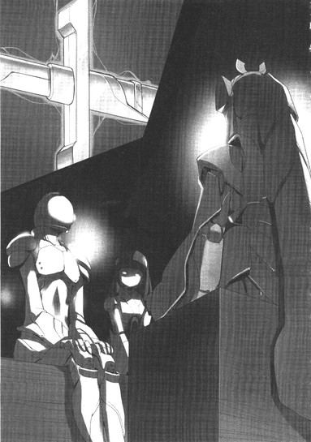
「は......はい。すみません、本当は私などにこの剣を手に入れる資格はなかったのですが......最初に見た時、我慢できずに手を伸ばしてしまい......」
全身で申し訳なさを表現する、おそらくは自分より年下であろう少年に向けて、ハルユキは慌てて右手と首を横に振り動かした。
「あ、いや、謝る必要ないよぜんぜん。最初に見つけた人が手に入れるのは当たり前だもん。ごめん、僕のほうこそ、変な言い方しちゃって」
最後にぺこりと頭を下げると、リードもおそるおそるというふうに顔を上げ、ハルユキと視線を合わせた。その涼やかなフェイスマスクに、はにかむような微笑みの色が浮かぶのを見た瞬間、ハルユキにしては至極稀少な種類の感慨が胸にわき上がった。
──いいヤツだな、こいつ。
かつて、初対面でそんなふうにイーブンな親しみを感じた相手は、幼馴染の黛拓武と倉嶋千百合だけだ。このトリリードという若侍は、異常な状況で出くわした正体不明もいいところのバーストリンカーなのに、仮に現実世界で生身を晒してもきっと仲良くなれるだろうという気がする。
ふと視線を感じてちらりと左に視線を向けると、こちらも仄かに微笑んでいるアーダー・メイデンと眼が合い、急に恥ずかしくなったハルユキは、咄嗟に大して重要とも思えない質問を口にしてしまった。
「あー、えっと、リード......くん、その剣はどっちの台座に載ってたの？たしか左が北斗七星の五番目、右が六番目だったと思うけど......」
「リードでいいですよ、クロウさん」
答える前にそう微笑まれたので、ハルユキも慌てて「じゃ、じゃあ僕もクロウで」と言い添える。しかしトリリードは「たぶん年下だと思いますので」と頭を下げ、ハルユキが抗弁する前に説明を始めてしまった。
「この剣は左側の、五番星〈玉衝〉の台座に載っていました。銘は、〈ジ・インフィニティ〉です」
ハルユキと謡が広間中央方向に視線を動かすと、トリリードも同じようにそちらを見ながら続けた。
「付け加えれば、私がこの剣を見つけた時には、隣の六番星〈開陽〉の台座はすでに空になっていました」
「ふうん......」
ハルユキが頷くと、隣で謡が声を発した。
「神器〈ザ・ディスティニー〉が加速世界に出現したのは、ごく初期の......ブレイン・バーストが第一世代バーストリンカーに配布されて、まだ一年経たない頃だったと聞いているのです」
「えっ、そんなに昔なんだ。......じゃあ、〈ディスティニー〉を手にいれたバーストリンカーが、〈帝城〉に入った一人目......ってことになるのかな。それで、リードが二人目で......」
ごく自然に呼び捨てにしてしまったことをほとんど意識もせず、ハルユキは右手の指を折りながら続けた。
「メイさんと僕が、三人目と四人目、か。なんか......絶対不可侵ってわりには、けっこう入ってるよね......」
そこで三人顔を見合わせ、同時に忍び笑いを漏らす。
だが、リードはすぐに表情を改めると、再び申し訳なさそうに肩を縮めて言った。
「数に入れて頂けるのは光栄ですが......すみません、私は皆さんのように、〈四方門〉から堂々と入ってきたわけではないんです」
「え......それって......？ じゃあ、あの外堀と絶壁を越えてきたってこと......？」
ハルユキは首を傾げたが、リードに言葉の真意を訊ねるより早く、謡が口を開いた。
「それを言うなら、私とクーさんも、リードさんが南門の封印を斬っていてくれたからこそ中に入ることができたのです。あの封印は恐らく、かつてのネガ・ネビュラスのように四部隊による四神同時攻撃を行った場合に、どれか一つの門さえ破れれば、あとは帝城内部から他の部隊を導き入れられるように設置してあるものと思われます。つまり、もし封印が健在だったら、あの時扉が開くことはなく、私たちはスザクに焼き殺されていたに違いないのです」
「あ......、なるほど、そういうことなのか......」
背中に迫る超高熱の炎を思い出し、ついぶるっと体を震わせつつ深々と頷く。そのまま、直前の疑問は忘れて、若侍に新たな問いを投げかける。
「ってことは、リード、君が封印を破壊したのは、あそこから帝城を脱出しようとしたから......？」
「いえ......、そうでは......ありません」
なぜか、仄かに寂寥感を滲ませる声でそう否定し、リードは含羞のある笑みとともに答えた。
「むしろ、逆......ですね。もし封印を破壊できたら、あの門から、いつか誰かが入ってきてくれるんじゃないかって思って......」
「入って......きてくれる......？」
リードもまた侵入者であるはずなのに、まるでもう脱出を諦めてしまったかのような、どこか奇妙な言い回しだった。ハルユキは銀面の下でぱちくりと瞬きし、更に訊ねる。
「でも、リード、この帝城本殿にいるんだから、君だって僕らと同じ疑似〈無限ＥＫ〉状態......つまり、閉じ込められてるってことだよね？......あ、いや、待てよ......」
その言葉を聞いたトリリードの顔に、何かを押し隠そうとするかのような表情が過ぎったのにも気づかず、ハルユキは若侍の腰に輝く銀の直刀に視線を落とした。
「〈インフィニティ〉......その神器は、入手時に一回だけ起動する〈ポータル〉になってたんじゃないの？それを手に入れた時に、君はここから正常に離脱できたんじゃ......？」
別に何を含むわけでもない、単純な疑問だった。しかしリードは、またしても恥じ入るように顔を伏せてしまう。唖然と見詰めるハルユキの左膝に、謡の小さな手がそっと触れた。
「たとえポータルがあっても、いつもスムーズに離脱できるとは限らないのです、クーさん」
その言葉を聞いた途端、自分の言い様がまるでリードの行動を責めているように聞こえかねなかったことに気づき、ハルユキは反射的に深く頭を下げていた。
「あ......ご、ごめんリード、別に文句を言うつもりはなかったんだ。僕だって、そういう経験何度もあるし......そもそも今ここにいることが、作戦どおり行動できなかった結果だし......」
懸命に口を動かすと、若侍はようやく顔を上げた。袴を模した脚の上で両手を重ね、再び一礼する。
「すみません、クロウさん、メイデンさん。いつか......時が来たら、お話しします。私がなぜこの場所にいるのかを......」
リードの声及び表情──そして全身の佇まいには、はっと息を呑むような端正さがあった。声を失うハルユキの代わりに、立ち居振る舞いの正しさでは引けを取らない謡が、そっと礼を返した。
「解りました、リードさん。では、私たちもお話しするのです。なぜ私たらが四神スザクのテリトリーに踏み込み、南門から帝城内に突入してしまったのかを」
続く五分間で、ハルユキと謡は簡潔に語った。
二年半前の、レギオン〈ネガ・ネビュラス〉の挑戦と崩壊。
メンバーを離脱させるため、南門の直前で封印状態となってしまったアーダー・メイデン。
そのアバターを生還させるための、現メンバーによる救出作戦と、その結末──。
眼を丸くして聞き入っていたトリリードは、二人が口を閉じると長く息を吐き、やがてそっと呟いた。
「そんな......ことが、あったんですね......。よもや、あの〈四神〉に挑み......撃破しようとした方々がいらしたとは......」
その声の奥深くに、かすかな憧れの響きを聞いた気がして、ハルユキははっと両眼を見開いた。自分自身の深いところにある何かが共鳴し、その振動が音となって喉から出ようとする。
────君も。
そう言いかけたが、しかし寸前で口を閉じた。続くべき言葉が見つからなかったからだ。
そんなハルユキの仕草に気づいたのかそうでないのか、リードは仄かな微笑みを浮かべると、再び穏やかな声を発した。
「そういう事情ならば、ぜひ私も、お二人の宮殿脱出に協力させて下さい」
「えっ......あ、ありがとう......」
ひとまず頭を下げてから、ハルユキは身を乗り出し、急き込んで訊ねた。
「君は、ここから正常離脱する方法を知ってるの!?どこかにまだ使えるポータルがあるとか......!?」
「私自身は、離脱にはタイマー式の自動切断を用いていますが、ポータルの存在も、ひとつだけなら確認しています。しかし......」
リードは頷いたものの、いっとき考え込むように言葉を切った。すぐ顔を上げ、ハルユキと謡を順に見ながら口を開く。
「......直接、見て頂いたほうがいいでしょう。同時に、私が最初に約した事柄も果たせますし」
「ええと......な、なんだっけ？」
ハルユキが首を捻ると、紺碧をまとう少年アバターは、滑らかな声で答えた。
「七番目の星......あなたがたの仰る〈神器〉の、最後の一つの所在をお答えする、という約定です」
ベンチ代わりの横木から立ち上がったトリリードは、彼が最初に現れた広間北側の暗がりにハルユキと謡を導いた。
蝋燭の光がほとんど届かない突き当たりの壁は、左右と同じく朱塗りの柱と白壁で構成されていたが、その中央には今まで気づかなかったものが存在した。
出入り口、あるいは門だ。小型の鳥居のような形に組み合わされた柱の内部が黒々と開き、そこからしんしんと冷気が溢れ出ている。
無意識のうちに体を縮めながら、ハルユキは呟いた。
「この広間が......帝城の一番奥じゃなかったのか......」
「ええ。これが、九重の門最後の一つ。くぐればそこが八神の社です。......行きましょう」
トリリードはそう囁くと、袴状のアーマーに覆われた左足を、密度のある闇の中へと踏み出した。躊躇う様子もなく謡がそれに続き、ハルユキも意を決して追いかける。
鳥居を抜けてみると、真っ暗闇と思われたその奥にもほんの少しの光があった。廊下はすぐに地下への階段となっており、おぼろげな光はその先から届いてくるようだ。慣れた足取りでリードが階段を下りはじめ、二人が後に続く。
進むにつれて、これまで感じていたのとは別種の圧力がアバターを押し包むのをハルユキは感じた。四神スザクや鎧武者エネミーが発していたような威圧感ではなく、空気そのものが何らかの霊的なエネルギーを帯びつつある感覚。
いや、加速世界には〈霊的〉などという言葉はそぐわない。なぜならここはブレイン・バースト・プログラムが生成するＶＲワールドなのであって、五感が受け取るあらゆる情報はコードに置換可能なデジタルデータなのだから。ニコは、他のバーストリンカーから受けるプレッシャーに〈情報圧〉という言葉を当てていた。それに倣えば、つまりこの場所では、空気にすら何らかのデータが含まれているということになるのか。温度や匂い、風向きのような表層的情報ではなく──時間、いや〈歴史〉と表現するべき、無限に等しい存在の継続......。
黒檀のような質感の階段は、三十段以上も下ったところで百八十度折り返し、なおも続いた。いったいどれほど地下に潜ったのか、そろそろ解らなくなってきた頃──。
行く手でついに階段が終わり、その向こうにやや広めの板の間があった。しかし、上階の、二つの台座があった大広間と比べれば面積は数分の一だ。
「え......あそこが、帝城の最後の部屋？ 案外狭い......っていうか、何もないような......」
思わずそんな感想を漏らしたハルユキに、前で階段を下りながら振り向いたトリリードが、かすかな微笑みを浮かべて答えた。
「いえ、下まで降りれば見えますよ」
何が？ と思いつつ、足を早める。リードに遅れること数秒、板の間についたハルユキの視界に飛び込んだのは、二つ目の、そしていっそう巨大な鳥居だった。
板の間の正面に、左右の壁と天井に接するように朱色の門が屹立している。しかし、二本の柱を繋ぐ、上階の鳥居にはなかったオブジェクトが存在する。とてつもなく太い純白のロープ。あれは──注連縄だ。現世と神域を区切るアドレス境界。
ごくりと生唾を呑み込みながら、ハルユキは絶対的隔絶を表すゲートに数歩近づき、その向こうの薄闇を見通そうとした。
「............広い......」
喘ぐように呟く。
鳥居の左右から奥に向けて、小さなかがり火が二列に揺れているのだが。三方の壁はまるで見えない。格子状の天井もうっすらと望める程度だ。床は磨かれた石敷きだが、面積は梅郷中の体育館を遥かに上回り、いったい縦横が何メートルあるのか見当もつかない。
広くて、冷たく、静かなのに、決して空疎ではないこの感じには覚えがある。少し考えただけで思い当たる。帝城南門から伸びる大橋──〈四神スザク〉が出現する前のあの空間を満たしていた、巨大なる予兆をはらんだ静謐さだ。
それ以上何も言えずに立ち尽くすハルユキと、無言を保つ謡の間に、音もなくトリリードが進み出た。右腕を持ち上げ、立ち並ぶかがり火の彼方を指さす。
「あそこを」
言われるままに眼を凝らすと、確かにその先に、揺れる炎とは異なる波長の光が見えた。息を殺し、両眼にいっそう力を込める。闇がわずかに退き、隠していたものを露わにする。
それは、黒い石を切り出した台座だった。
上の広間に二つ並んでいたものと同じだ。前面に、金属のプレートも嵌っている。しかし余りにも距離がありすぎて文字までは読み取れない。そして台座の上では、ポータルの青い光に包まれるようにして、温かな黄金色の光がゆったりと脈動している。囁くように。呼びかけるように。
無意識のうちに、注連縄に一歩近寄ろうとしたハルユキの肩を、リードの右手がそっと制した。
「いけません、この先は危険すぎます」
「で......でも......」
焦燥、あるいは渇望に似た感情のあまり応答もままならないハルユキに代わり、謡がそっと訊ねた。
「リードさん。あれが最後の〈神器〉......北斗七星の七番星なのですね？」
「ええ、そのとおりです」
リードは頷き、ハルユキの左肩に手を置いたまま、玲瓏たる声でその先を口にした。
「台座の銘板に刻まれた文字が読める距離まで近づかんとするだけでも、無限にも等しい時間が必要でした。あの光の名は──」
「──中国名、〈揺光〉。神器としての銘は〈ＴＨＥＦＬＵＣＴＵＡＴＩＮＧＬＩＧＨＴ〉です」
「揺れ動く......光......」
無意識のうちに、ハルユキは口中でその名を繰り返した。
一切記憶にはない言葉だ。そもそもハルユキは、一昨日の七王会議に参加するまで〈神器〉の存在すら知らなかったのだ。
しかし、にもかかわらず、いま心の奥からあふれ出し胸に満ちる感情にもっとも近いものは〈懐かしさ〉だった。
「......僕......僕は......」
尚も意識せぬままに、ハルユキは口を動かし続けた。
「僕は、あの光を見たことがある......」
「............!!」
ハルユキの左側で、小柄な二人が鋭く息を呑む。問いかけるような視線を受け、ハルユキは懸命に記憶を探りつつ言葉を重ねる。
「あれは......そう、あれは......やっぱり無制限中立フィールドで......初めて〈心意システム〉の修行をした時だった。僕は、レイカー師匠に、旧東京タワーの天辺から落っことされて......自分の手だけで登ってくるように言われて......」
それを聞いた途端、謡が小さく息を漏らす。同じくスカイ・レイカーに色々やらされていたという彼女はきっと「さもありなん」と思ったのだろうが、今はその心情を忖度する余裕もなく、ハルユキは掠れた声を漏らし続けた。
「............最初は、壁に傷もつけられなかった。でも毎日毎日、貫手で突き続けてる間に、だんだん指先が食い込むようになって......そのうちに指の根本まで貫けるようになって......一週間後に、タワーを登り始めたんだ。無我夢中で、右手左手交互に突きながら、何時間もかかって壁を登ってる......時に......あの光が............。でも、あれはオブジェクトじゃなかった気がする......あれは......あの金色の光は............」
そこでようやく、ハルユキはリードと謡に視線を向けた。両眼を見開いて聞いている二人に、ハルユキは震える声で最後の言葉を告げた。
「──あれは、人だった。僕を、呼んでいたんだ」
しばし、沈黙だけが空間を満たした。
それを破ったのは、誰かの言葉ではなく──ハルユキの視界に広がった、深紅の文字列だった。【ＤＩＳＣＯＮＮＥＣＴＩＯＮＷＡＲＮＩＮＧ】。切断警告。現実世界で、黒雪姫たちのバーストアウトから三十秒が経過し、今まさにハルユキの直結ケーブルが引き抜かれようとしているのだ。
ニューロリンカーの直結コネクタは、防水能力のある非接触型端子である。ゆえに、ＸＳＢケーブルが引き抜かれようとしても、ごく短時間なら通信が持続する。もちろんコンマゼロ秒単位の話だが、それでも加速世界なら警告が出てから数十秒の猶予はある。
「あっ......えっと......」
突然記憶の彼方から引き戻され、口をぱくぱくさせることしかできないハルユキに代わって、今度も謡が冷静な声を出したく。
「リードさん。私たちの仲間が、現実世界で回線切断セーフティを発動させました。申し訳ありませんが、まもなく私たちはいったんバーストアウトするのです」
「は......はい、了解しました」
頷いた若侍に、巫女はやや早口になりつつ更に言葉を連ねた。
「外部からの強制切断ですので、次に無制限フィールドにダイブした時は、私たちはまたこの座標に出現します。つきましては、厚顔なお願いではありますが、できればもう一度ここでお会いしたいのです。リードさんが次にダイブできるのは、現実時間でいつ頃になりますか？」
「そうですね......」
ほんの一瞬考え、リードはすぐに答えた。
「それでは、二日後......六月二十日木曜日、午後七時ちょうどで如何でしょうか」
「了解なのです。ご助力に感謝します、ありがとうございます」
ぺこり、と頭を下げる謡に倣って、ハルユキも一礼してからようやく言葉を発した。
「あ、あの、リード、僕からもお礼を言うよ、色々教えてくれてありがとう。でも......まだまだ話したいことや、聞きたいことがあるんだ。だから......また君に会えるの、楽しみにしてる」
視界の切断警告は、高速で点滅を始めている。現実世界では、ニューロリンカーからＸＳＢケーブルが完全に引き抜かれようとしているところだろう。焦りつつも懸命に口にした言葉に、紺碧の若侍アバターは一度瞬きしてから、複数の感情を窺わせる笑みを仄かに浮かべた。
「私も──クロウさん、メイデンさんとお話できて、とても楽しかった。約束ですよ、明後日、必ずまたここで。私も、もっともっとお二人と話したいですから」
そして、トリリード・テトラオキサイドという不思議なアバターネームを名乗る少年は、一歩退くと謡とハルユキを順に見た。
秋風を思わせる涼やかなその立ち姿が、ついに訪れた暗闇に覆われ、消えた。
５
現実世界に複帰したハルユキが真っ先に意識したのは、ソファに沈む物理身体の重さでも、エアコンの効いた空気の暖かさでもなく──左頬に触れるしなやかな指先だった。
ぱちっ、と両眼を開ける。
至近距離に、つい数刻前に〈帝城〉内苑で見上げた美しい星空があった。いや、違う。まるで星屑のような光の粒子を湛えた、漆黒の瞳。
その瞳がゆっくりと一度瞬くと、ごく小さな水滴が長い睫毛から弾かれ、空気に溶けて消えた。同時に、ひそやかな囁き声。
「......戻ったか、ハルユキ君」
誰よりも敬愛する剣の主、レギオン〈ネガ・ネビュラス〉頭首たる黒の王〈ブラック・ロータス〉──黒雪姫の冴え冴えとした美貌をしばし見詰めたのち、ハルユキは掠れ声で答えた。
「はい、先輩。......いま、戻りました」
ハルユキが目覚めた場所は、現実世界の杉並区北高円寺に建つ複合高層マンションの二十三階二三〇五号室、すなわち有田家のリビングルームだ。
南の窓近くに置かれたソファセットの中央に座るハルユキの正面で、黒雪姫が左手をソファの背もたれに突いた格好で身を乗り出し、右手の指先をそっとハルユキの頬に添えている。その掌にはＸＳＢケーブルのプラグが握り込まれ、銀色のコードは壁のコネクタパネルへと伸びている。
パネルは、有田家のホームサーバーと有線接続するためのものだ。今回のダイブにあたって、ハルユキたちは無線ではなく有線でホームサーバーを介してグローバル接続していた。そのケーブルを、黒雪姫がハルユキのニューロリンカ──から引き抜いたため、ハルユキと謡は〈ポータル〉を使うことなく現実世界に帰還したわけだ。
黒雪姫は、指先をハルユキの頬に触れさせたまま、低く囁いた。
「......長い三十秒だったぞ。こうしている間にも、キミと謡が〈帝城〉の中でエネミーに追われているのではないか......あるいは蘇生と死亡を何度も繰り返してしまっているのではないかと、気が気ではなかった」
その声がほんのわずかに震えているのを意識した瞬間、ハルユキの胸にも強く衝き上げてくるものがあった。
上体をまっすぐに起こしてから、大きく息を吸い込み、口を開く。
「先輩......、あの時......〈スザク〉のターゲットが僕に移動した時、撤退命令を破ってすみませんでした。でも......でも僕、どうしても............」
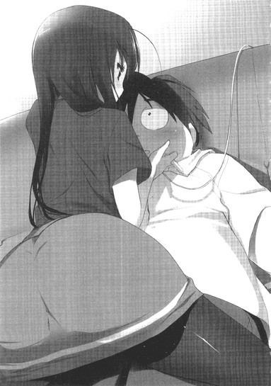
あれほど、現実世界に戻ったらちゃんと謝ろうと決意したのに、いざとなると言語機能がまったくついてこない。唇を噛み締め、開き、また噛むことを繰り返す。
と、黒雪姫はソファから左手を離し、右手のケーブルも下に落とすと、空いた両手でそっとハルユキの両肩を包んだ。色の薄い、しかし艶やかな唇に、スイレンの蕾が綻びるような笑みが滲む。
「いいんだ、ハルユキ君。そういうキミだからこそ、私は私とレギオンの未来を託せると信じたのだからな。キミはあのスザクの炎すらも振り切り、ただ前へと飛翔した。その勇気を、どうして私が責めるものか......」
「......せん、ぱい............」
込み上げてくるものを堪えながら、ハルユキはただひたすら黒雪姫の瞳を見詰めた。ぎゅうっと両手を握りしめ、溢れてくる感情を懸命に言葉へ変えようとした。
「......先輩。僕......僕が飛べたのは、先輩が何度も飛べゆってひっへふれはひふ」
──と、せっかくの台詞の語尾が台無しになったのは。
左右から伸びてきた二本の手がハルユキの両頬をつまみ、ぬぐぐぐぐと思い切り引っ張ったからだった。
「あのねえ！ いつまで──」
と左頬をつねるチユリが叫び、右頬をつねる楓子がその後を引き継いだ。
「──やってるんですか二人とも！」
三分後。
場所をソファからダイニングテーブルへと移し、南側にハルユキと謡、その向かいにタクムとチユリ、左に黒雪姫、右に楓子という並びで席に着いたところで、一同は揃って現在時刻を確認した。
午後七時三十五分。
〈アーダー・メイデン救出作戦〉を開始してから、現実時間ではまだ十分足らずしか経過していない。しかしハルユキの実感では、無制限中立フィールドにダイブするための〈アンリミテッド・バースト〉コマンドを唱えたのはもう昨日のことのようだ。
いや、実際に〈帝城〉の内側で六時間も仮眠してしまったのだから、そう感じられても当たり前だろう。しかもあの眠りの中で、とてつもなく長い夢を見た気がする。六時間どころではない、数日......いや、数年にも及ぶ記憶を追体験したかのような............
「──まずは、皆、お疲れ様」
という黒雪姫の言葉が、ハルユキの思考を遮った。「おつかれさま！」の唱和に慌てて声を合わせる。
チユリが淹れてくれたカフェオレを一口含み、黒雪姫は一同を見渡しつつ続けた。
「〈災禍の鎧浄化計画〉第二フェーズ、〈アーダー・メイデン救出作戦〉は、残念ながら全面的に大成功とは行かなかった。その責任は全て、〈四神スザク〉のターゲットを取り続けられなかった私にある。──済まなかった」
そう言って深く頭を下げようとするレギオンマスターに、配下五人は声を合わせて「そんなこと！」と叫んだ。
すぐに、レギオン副長を務める倉崎楓子──スカイ・レイカーが代表で発言する。
「サッちゃん、スザクはあの時、鴉さんが一切攻撃していないのにタゲを移したのよ。あの挙動は誰にも予想できなかったわ。恐らくは、自分に最大量のダメージを与えた者よりも、テリトリーを深く侵した者に対してより大きな憎悪値を加算する設定になっているのでしょうけど......」
その言葉を聞き、いっとき顔を上げた黒雪姫は、再び考え込むように眼を伏せた。
短い沈黙を、ハルユキはおずおずと右手を上げて破った。
「あの......師匠。いまの、ヘイトの加算の話ですけど......」
〈憎悪値〉とはつまり、エネミーが攻撃対象を選択するロジックを数値的に説明する言葉だ。直接攻撃したバーストリンカーはもちろん、妨害系の間接攻撃をしたり、他のバーストリンカーを能力で支援するだけでもヘイトは増加し、その時点で最大数値の相手をエネミーは攻撃する。──と、一般には考えられている。
スザクも、超級、四神、と言われてはいるがあくまで人ならぬエネミーである以上、そのヘイト原理に基づいてターゲットを選択しているはずだ。今回、大橋の上でスザクがターゲットを黒雪姫からハルユキに移動させたのは、直接攻撃をした者よりも、帝城南門に近づいた者のほうがよりスザクのヘイトを稼ぐ設定になっていたからだ、というのが楓子の発言の趣旨なのだが。
「なんです、鴉さん？」
ふんわりとしたスタイルのロングヘアを揺らして首を傾ける楓子に、ハルユキはたどたどしく訊ねた。
「......スザクは......いえ、スザクを含む〈四神〉は、ほかのエネミーよりももっと高度なＡＩで動いてる、ってことはないでしょうか？いえ、ＡＩっていうよりも、なんていうか......ええと............」
自分の言いたいことを上手く言葉にできないもどかしさに、ハルユキが口をぱくぱくさせていると──。
右隣に座り、一人だけホットミルクのカップを抱えていた四埜宮謡が、それをテーブルに置くや両手を宙に躍らせた。
ハルユキの視界下部に表示されていた半透明ウインドウに、桜色のフォントが驚くべき高速で流れる。
【ＵＩ＞ 有田さんが仰りたいのは、おそらくこういうことなのです。四神には、ＡＩの域を超えた、本物の意志があるのではないか、と】
「そ......そう！ そういうことです！」
こくこくと頷いてから、ハルユキは今更のように自分の意見の荒唐無稽さを自覚し、周囲からのアキレ光線を受け止めるべく首を縮めた。
──しかし、意外にも、テーブルを囲む仲間たちの一人として笑ったりため息をついたりしようとはしなかった。直接にはスザクを見なかったはずのタクムですら、リムレスの眼鏡の奥で考え込むように両眼を細めている。
静寂の中、再び謡の十指が軽やかにホロキーボードを叩いた。
【ＵＩ＞ 少なくとも、第一期ネガ・ネビュラスを壊滅させた〈四神攻略戦〉の時とは、スザクの行動アルゴリズムに変化があったのは確実なのです。二年半前には、スザクは間違いなく最大ダメージを与えた者を優先的にターゲットしていました。サッちんとフーねえが戦った西門の〈ビャッコ〉はどうでしたか？】
「......ういういの言うとおりです」
呟きながら頷いたのは楓子だった。
「ビャッコも、先の戦いでは、攻撃対象の位置にかかわらずメインアタッカー隊のみを照準していたように記憶しています」
「ああ......間違いない。だからこそ、最後にメンバーを撤退させるために、私が囮になることができたんだからな」
楓子の向かい側でそう応じた黒雪姫は、両の眼を鋭く細めて続けた。
「だが......確かに今回のスザクの挙動には、単にヘイトの増減に従わされているだけとは思えない部分もあったな......。と言って、第三者の遠隔操作や、単にアルゴリズムの異常という印象もなかった......」
すると、ハルユキの正面に座るタクムが、あご先に右手をあてがいながら口を開いた。
「しかしマスター、それではまるで......スザクが、今回の僕らの目的は奴を倒すことではなく、四埜宮さんを救出することだと看破していたようではありませんか？であるなら、それはもうＡＩプログラムの域ではなく......ハルの言うとおり、洞察力すら備えた......〈知性〉と呼ぶべきでは......」
再び、数秒の沈黙。
やがて黒雪姫が、ふ、と小さく微笑んだ。続けて、いっそう低められた声。
「......今は、この疑問に答えは出せないな。だが、一つだけ情報を付け加えておこう。私の心意攻撃に反応し、前進していたスザクが、ハルユキ君にターゲットを移す寸前......私も見たように思うよ。あの鳥が、私を嘲笑うように嘴を開いたのをな......」
────そう。
ハルユキも、確かに聞いた気がするのだ。火炎ブレスを放つ寸前、スザクが発した声なき声を。小さき者よ、灰になれ、と。
「──でも、さ！」
俯き加減だった一同の中で、真っ先に顔を上げたチユリが、勢いよく言った。
「あのトリに意志だの知性だのがあろーと、ううん、たとえ本物の神様だろーと、あたしたちやられっぱなしじゃなかったじゃん！作戦、大成功じゃないけど大失敗でもないよね、黒雪先輩。だってさ......ハルも、ういちゃんも、生きてるじゃない。生きて、しかも、あの門の中に飛び込んだじゃない。──ねえ、ハル」
猫を思わせる瞳をきらきらと輝かせ、テーブルに身を乗り出したチユリは、両手をきゅっと握った格好で叫んだ。
「あたしもう、これ以上ガマンできないよ！ 〈帝城〉の中ってどんなだったの!?何があったの!?早く教えなさいよ、最初っから最後まで！」
突然の尋問開始にハルユキが眼を白黒させていると、左で黒雪姫が笑い声を上げた。
「ははは......、相変わらずチユリ君は直球投手だな。その話を聞けるなら10......いや１００ポイント払うバーストリンカーが山ほどいるだろうと思うと、私ですらちょっと遠慮してしまっていたのに」
「ふふ、本当ね。絶対不可侵の〈帝城〉に足を踏み入れ、内部の情報を持ち帰ることに成功したバーストリンカーが目の前にいると思うと、私もさっきから心臓がどきどきしっぱなしです」
と、楓子も大きな仕草で胸を押さえて見せる。
ハルユキは、やや複雑な笑みを右頬に浮かべ、とりあえず隣の謡と視線を合わせてみた。小学四年生にして旧ネガ・ネビュラス〈四元素〉の一角を占めていた少女は、お任せします、というように顔を傾けた。
考えてみれば、〈帝城〉の中であったことを全てチャットで説明しようとしたら、両手の指が攣るほどの文字数を打ち込まねばならないだろう。ここは僕ががんばるしかない！と腹をくくり、ハルユキはもう一度時計を見てから、まず前置きした。
「えーと......最初から最後まで話すと、相当時間かかると思うんですが......皆さん、門限は大丈夫ですか？」
時刻は火曜の夜八時になんなんとしていたが、小学生の謡を含め、首を横に振った者は一人もいなかった。
帝城南門から、まっすぐ北に伸びる石敷きの大路と。そこを巡回する恐ろしげな武者エネミー群。
絢爛たる錦絵に彩られた襖が幾重にも連なる巨大な〈本殿〉。その中心にあった大広間と、そこに設置された二つの台座。北斗七星の銘板に刻まれていた、〈ザ・ディスティニー〉及び〈ジ・インフィニティ〉の名前。
ハルユキがそこまで話した時、黒雪姫と楓子がはっと眼を見交わしたように思えた。しかし二人とも口を挟もうとはせず、またそこからが話の核心部分だったので、ハルユキは気にとめることなく説明を続けた。
広間で突如声を掛けてきた、紺碧の若侍アバター。
彼の案内で下りた階段の先の、広大な地下空間。
そしてその彼方に揺らめいていた、黄金の光。第七の神器、〈ザ・フラクチュエーティング・ライト〉──。
最終的に回線切断によって無制限中立フィールドから離脱した所までを、折々に謡の注釈を受けながらもどうにか語り終えた時は、たっぷり三十分以上が経過していた。
ハルユキが、ふうっと息をついてから二杯目のカフェオレを飲み干す間、誰も何も喋ろうとはしなかった。マグカップがテーブルに置かれてから数秒後、ようやく黒雪姫が囁くような声で言った。
「......第五の神器〈インフィニティ〉の所有者......〈トリリード・テトラオキサイド〉......。──フーコ、その名を聞いたことは？」
この場では黒雪姫と並んで最古参バーストリンカーの楓子は、その問いにすぐかぶりを振った。
「いいえ、強化外装も、バーストリンカーも、どっちも初耳。そもそも、〈トリリード〉とか〈テトラオキサイド〉なんていう英単語自体知らないわ。なんだか......分子式みたいな語感ではあるけれど......」
ただ一人高校生である彼女が知らない単語を、他の小中学生五人が知るよしもない。
「調べてみましょう」
眼鏡のブリッジを押し上げながらそう言ったタクムが、仮想デスクトップに指を走らせた。さすがの検索スキルで、十秒しないうちに該当単語を見つけたらしく、顔を上げて一度頷く。
「レイカーさんが正解です。これは分子式......〈四酸化三鉛〉のことです」
──と言われても、どんな物質なのか咄嗟に想像しにくい。ハルユキは眉を寄せながら正面のタクムに小声で訊ねた。
「タク、鉛ってのは、その、金属......だよな？」
すると、親友はやけに優しい笑顔で「そうだよ」と頷く。どうやらお馬鹿さんな質問をしてしまったらしいという照れを咳払いでごまかし、ハルユキはしかつめらしい顔を作って言った。
「でも、あいつ......トリリードは、ぜんぜんメタルカラーっぽくなかったけどな。きれいに透き通った藍色っていうか紺色っていうか......武装も含めて、ガチ青系って感じ......」
若侍の凛々しい佇まいを思い出しつつハルユキが左右に首を捻っていると、左に座る黒雪姫が卓上で両手を組み合わせ、「ともあれ」と声を発した。
「──目下、我々の急務は〈帝城〉の謎を解くことではなく、謡とハルユキ君の脱出だ。次の日曜までに、シルバー・クロウに寄生する〈災禍の鎧〉の因子を浄化せねば、ハルユキ君は加速世界第二位の賞金首になってしまうからな」
そこでちらりとハルユキに視線を送り、一瞬の微笑みを浮かべる。
「......無論、そうなったところでキミをむざむざ狩らせはしないが、ね」
「............先輩......」
再び見つめ合いモードに入りかけたところで、チユリが両手をぽんぽん叩く。
「はい、カットカーット！ ......そういえば黒雪先輩、あたしその賞金首の話を聞いた時からちょっと疑問に思ってたんだけど......」
「な、何だい、チユリ君」
こほん、と咳払いする黒雪姫に、チユリは両手を広げながら訊ねた。
「そもそも、ハルに寄生してるっていう〈災禍の鎧〉がちゃんと浄化されたかどうか、六王はどうやって確かめる気なの？他人のアイテム欄なんか見られないし、それ以前に〈鎧〉はアイテム欄には表示されてないんでしょう？」
「あっ......そ、そう言えば......」
と、声を漏らしたのはハルユキだ。自分自身のことなのに、そのもっともすぎる疑問をこれまで一度も感じることがなかったのは迂闊以外のなにものでもない。
そんなハルユキの様子に黒雪姫は軽く苦笑したが、すぐに真剣な表情に戻り、言った。
「恐らく、日曜の会合には、〈他人のステータスを見る〉力を持つバーストリンカーが現れるはずだ。王連中は、その者にシルバー・クロウの浄化を検証させる気だろう」
「......そう、でしょうね......」
反対側で、楓子がゆっくりと頷く。いつもはにこにこと穏やかに笑っている両眼に、きらりと鋭い光が横切る。
「──〈四眼の分析者〉。彼女が久々に姿を現すだろうと、わたしも思います」
バーストリンカーとしての固有名ではなく通り名であろう、その名前を聞いた瞬間──。
ぴりっ、と頭の芯が引き攣れた気がした。
間違いなく初耳だ。そんな名前を聞いたことはないし、そもそも〈人のステータスを見る〉などという能力があることすら知らなかった。なのに、ちくちくと記憶の深いところが疼く。その感覚は、中枢神経にまで溢れ、脊髄を通って背中の一点に到達する。
ずきん。ずきん。鈍い痛みと同期して、遠く──誰かの声。
............コワセ............。
............ヤツラヲ、コワシテ、クラエ......。ワレノ、イカリヲ......トキハナテ............。
いつしか、掌に爪が食い込むほど固く握りしめていた右手に、不意に柔らかい何かが触れた。
見れば、隣に座る謡が、テーブルの陰でそっとハルユキの拳を押さえていた。ちらりと向けられた大きな瞳に、仄かな危惧の色がある。
ハルユキは慌てて両手を広げ、大丈夫、というように首を頷かせた。幸い、他の四人は〈浄化〉の検証について話していて、ハルユキの異常には気づかなかったようだった。
「......最悪、帝城の中でアーダー・メイデンにシルバー・クロウを〈浄化〉してもらい、日曜の会合に間に合わせるという手もあるのでは？」
というタクムの発言に、謡が引き戻した両手でホロキーボードを叩く。
【ＵＩ＞ 絶対に不可能とは思いませんが、できれば帝城の中で大規模な心意技は使いたくないのです。強すぎる心意の波動は、高位のエネミーを呼び寄せてしまう危険があります】
「うむ......。エネミーは、巨獣級、神獣級と位が上がるほどに心意技が通じにくくなり、同時に心意の使い手に対する攻撃性も増すからな。恐らくは、心意システムによる局地的な異常負荷が、奴らの憎悪値をイレギュラーに増大させるのだろうが......帝城の警護エネミーともなれば、その反応もより強まっていると考えるべきだろう」
そう注釈した黒雪姫が、椅子の上でぴんと背筋を伸ばし、一同を見渡して続けた。
「──やはり、シルバー・クロウとアーダー・メイデンには、日曜までに帝城から脱出して貰わねばならん。そのためには、正体不明ではあるが、〈トリリード・テトラオキサイド〉なるバーストリンカーの助力を請うのが最善だろうと私は思う。謡、ハルユキ君、木曜日にその者と再会した折には、黒の王とネガ・ネビュラスの名に於いて、助力に対するいかなる対価をも支払うと伝えてくれ給え」
ここで夜九時十分前となり、黒雪姫は「今日のミッションはこれでひとまず終了とする」と付け加えて発言を終えた。
一度帰宅してから車で来ていた楓子が謡と黒雪姫を送っていくこととなり、まず三人が地下駐車場行きのエレベータに乗った。続けてチユリも、サンドイッチが満載されていた大皿と一緒にぱたぱたと二階下の自宅へ戻り二十三階の廊下にはハルユキとタクムだけが残された。
「じゃあ、ハル。明日また学校で」
そう言って、マンションの別棟に繋がる連絡通路方向に歩き始めようとしたタクムを──。
「タク......まだ時間、大丈夫か？」
と、ハルユキは小声で呼び止めた。
首を傾げて振り向く幼馴染に、たどたどしく訊ねる。
「あのさ......お前、今週に入ってから、何回くらい〈対戦〉した？」
「え......？ うーん、学校帰りに二、三回ずつ......合計で十回足らずだと思うけど......」
そう答えてから、タクムは何かを察したように瞬きし、声を低めて続けた。
「ああ......もしかして、昨日ぼくとチーちゃんが言った、ハルが賞金首になってもポイントを供給するって話を気にしてるなら、心配ないよ。ぼくの勝率は相変わらずだけど、ここんとこチーちゃんがめきめき腕を上げてるからさ。うかうかしてると、レベルでも抜かれちゃいそうだよ」
そんな台詞とともにタクムが自嘲ぎみな笑いを浮かべようとするので、ハルユキは慌てて首を横に振った。
「ち、違うんだ、そういう話じゃない。ええと......タク、お前、その十回の対戦のあいだに......何か、妙なことに気づかなかったか......？」
おおよそ漠然としたハルユキの問いかけに、タクムは怪訝そうな表情を作ってから、すぐに軽く苦笑した。
「その質問がすでに妙だよ。何か、って言われても、何を思いだしていいのかも解らないよ」
「あ......ああ。それもそうだよな......」
頭をかきかき、ハルユキも短く照れ笑いを浮かべた。
ハルユキが聞きたかったのは、具体的には〈相手のバーストリンカーが一般対戦の枠を超えた技なり能力を使わなかったか〉ということだ。より詳細に言うならば、〈黒いオーラをまとった近距離、あるいは遠距離の心意攻撃を行わなかったか〉となる。
昨日の月曜日の放課後、ハルユキは四埜宮謡と一緒に杉並第二戦域でタッグ対戦を行った。
相手は、緑のレギオンに所属する〈ブッシュ・ウータン〉、及び〈オリーブ・グラブ〉の二人組だった。ウータンの相手をすることになったハルユキは、当初、黒雪姫直伝の〈柔法〉──〈受け返し〉の技術を用い、戦いを有利に進めた。
しかし、中盤。ウータンが奇妙な強化外装を召還するや、戦局はあっさりとひっくり返った。闇のオーラをまとった拳で攻撃する〈ダーク・ブロウ〉、そして掌から闇のビームを撃ち出す〈ダーク・ショット〉という二種類の心意技にハルユキは為す術なく追い詰められてしまったのだ。謡とのタッグ戦でなければ、そのまま敗れていただろうことは想像に難くない。
ウータンは、胸に装着した黒い眼球型の強化外装を〈ＩＳＳキット〉──すなわち〈心意システム学習キット〉と呼び、誰かに譲渡されたのだと語った。
それを着けるだけで、長時間の修練が必要なはずの心意システムがインスタントに使えるようになるのだとしたら、これは加速世界が根本から揺るぎかねない事態だ。そう考えたハルユキは、今日の登校時間にウータンの兄貴分であるバイク使い〈アッシュ・ローラー〉にクローズド対戦を申し込み、事情を説明した。するとアッシュは、いつになく深刻な口調でハルユキに告げた。
もしその〈ＩＳＳキット〉が無限にコピー可能だとしたら、もう手遅れかもしれない。密かに譲渡を繰り返され、すでに対処不可能な数が出回ってしまっているかもしれない、と。
だから、ある意味では、ハルユキに寄生する〈災禍の鎧〉の因子よりもＩＳＳキットのほうが重大事だとも言える。今日の〈アーダー・メイデン救出作戦〉開始前の会議で、ハルユキはキットの出現を議題に出してもよかった。いや、つい数分前に黒雪姫が今日はこれで解散と告げた時、手を挙げて発言することもできた。
しかし、ハルユキはそうしなかった。まずは救出作戦に全員で集中すべきだと考えた、という理由もある。
でも、それだけではない気がする。仲間たちに、ＩＳＳキットのことを知らせたくないという心理が自分の中に存在する、そう思えるのだ。
言うべきことを言えなかった、その後ろめたさが、ハルユキにタクムを呼び止めさせたのかもしれない。
タクムなら。かつて本音をぶつけ合い、本気の拳を交わし、〈ダスク・テイカー〉事件では共に厳しい戦いを乗り越えた親友なら。いつの間にか抱えてしまった重荷を、今度も一緒に背負ってくれるに違いないと、そう考えた──のだが。
薄暗い共用廊下の片隅で、長身の幼馴染の顔を見上げ、改めて全てを説明しようとした瞬間、ハルユキは再び自分の口に何かがブレーキをかけるのを感じた。
......なんで？ どうして僕はためらうんだ？
......タクじゃないか。無二の親友にして、レギオンのツートップを務める相棒。考えなしの僕をいつも冷静に助けてくれる、最高のパートナー。ＩＳＳキットのことを最初に相談するのに、タクほど相応しい相手はいない。
────なのに、なんでこんなに胸騒ぎがするんだ。
ハルユキは、いっそう怪訝そうな顔になるタクムをじっと見上げたまま、大きく息を吸って原因不明のざわつきを抑え込んだ。
「実は......」
そう話し始めてからも、舌はこわばり、喉がひりついた。それらの感覚を懸命に無視して、ハルユキは言葉を続けた。
「実はな、タク。今、加速世界で妙なことが起きてる......かもしれないんだ。長くなるから、もうちょっとオレんちで話そう」
二人でハルユキの家のリビングに引き返し、パーコレーターに残っていたコーヒーで喉を湿らせながら夢中で話すうち、おかしな胸騒ぎはようやく消え去った。
ブッシュ・ウータン。ＩＳＳキット。そして闇の波動をまとう心意攻撃。
それらの話を聞き終わったタクムは、テーブルに肘をついた両手を組んで額にあて、俯いたまましばらく沈黙を続けた。やや長い静寂にハルユキが不安になりかけた時、ようやく顔を上げる。
眼鏡の奥の両眼には、いつもの理知的な光だけがあった。ハルユキはわけもなくほっとしながら、「どう思う？」と訊ねた。
「......うーん......正直、俄には実感しにくい話だよね......」
タクムはそう呟くと、冷めたコーヒーを一口含んだ、
「〈心意システム〉を体得するのがどれほど大変か、ぼくも赤の王との修行でいちおう知ってるつもりだからね。あの時は、自分の杭を受け止められるようになるだけでも、左手に何回大穴を開けたか判らないよ」
タクムのアバター〈シアン・パイル〉の心意技、その名も〈蒼刃剣〉は、右手に装備された強化外装〈パイルドライバー〉から撃ち出される鉄杭を左手で受けて引き抜き、長剣へと変える技だ。自身の心の傷の象徴である杭を受け止めるためには、単なる反復練習ではなく、辛い記憶と正面から向き合う必要があっただろう。
「ああ......。オレも、旧東京タワーの壁を貫けるようになるまで、気が遠くなるくらい練習したな。スピード、スピードってそればっかり念じてさ......」
ハルユキがそう述懐すると、二人揃ってしばし遠い目になってしまう。訳あって、タクムに心意システムを伝授したのはレギオン〈プロミネンス〉の頭首たる赤の王スカーレット・レインなのだが、彼女のスパルタっぷりはハルユキの心意の師であるスカイ・レイカーにタメを張るものだっただろう。
それほどの苦労をして、ハルユキは〈射程拡張〉、タクムは〈威力拡張〉という心意の基本技をひとつ、どうにかこうにか習得できただけなのだ。
「......なのに、そのＩＳＳキットは、装着するだけで威力拡張技の〈ダーク・ブロウ〉と射程拡張技の〈ダーク・ショット〉を両方使えるようになる......っていうのかい？」
掠れた声でそう言うと、タクムは自分の左手に視線を落とし、あまりハルユキが見た覚えのない色合いの笑みを口の端に滲ませた。
「......手の届かないものは、どんなに努力しても決して得られない。それがブレイン・バーストの大原則......ぼくはずっとそう思っていたよ。デュエルアバターは、残酷なほど明快に、生身の自分の限界を教えてくれる。だからこそあのゲームは、もうひとつの現実たり得るんだ、ってね......」
「............タク......？」
やや唐突な言葉にハルユキが首を傾げると、タクムははっとしたように顔を上げた。その口元には、もういつもの理知的な微笑だけがあった。
「ああ、ごめんよく気にしないでくれ。──確かに、そんな強化外装が流布しているとすれば由々しき事態だね。〈対戦〉や〈領土戦〉のバランスが崩壊してしまう」
「そ......うだよな」
ハルユキは頷き、理由のない違和感のようなものを押しのけて言葉を繋いだ。
「一般対戦で心意技が使われるってだけでも大変なのに、あの力は万能すぎる。正直......オレたちみたいな心意初心者じゃ対抗できないよ。一昨日の〈七王会議〉じゃ、状況によっては心意システムの存在を全バーストリンカーに公開すべきだみたいな意見もあったけど......ＩＳＳキットが広く出回っちゃったら、今更心意技を初歩から修行する意味なんかあるのかどうか......これじゃまるで............」
「先手を打たれたみたいだ、かい？」
ハルユキが探そうとした言葉を的確に言い当てたタクムは、いっそう難しい顔で眼鏡のブリッジを押し上げた。
「でもハル、だとしたら、つまりこういうことになるよ。一週間前の〈ヘルメス・コード縦走レース〉で大勢のギャラリーに心意システムの威力を見せつけた奴らが、イコール今回ＩＳＳキットをばらまいてる黒幕だ......って」
「あっ............！」
今まで、その可能性をわずかにも考えなかったハルユキは、がたんと椅子が鳴るほど大きく体を起こした。両眼を見開き、タクムの示唆した組織の名を囁く。
「......〈加速研究会〉......？」
「最初から考えてみよう。連中が初めて姿を現したのは、今年の四月だ。違法ブレイン・インプラント・チップを巧みに利用して、梅郷中ローカルネットを〈ダスク・テイカー〉が、そして秋葉原バトル・グラウンドを〈ラスト・ジグソー〉が攻撃した。もしかしたら、他にも同じ手口で荒らされたクローズドネットがあったかもしれない」
いっときにせよハルユキたちを完全に屈服させた〈略奪者〉の猛威を思い出し、ぶるりと全身を震わせながら頷く。しかし、こうして改めて思い出すと、当時は気づけなかった疑問も浮かんでくる。
「でも......タク、考えてみると妙だよな。四月の時点では、その二人とも、自分から積極的に心意技を使おうとしなかった。ダスク・テイカーがあの紫の波動を使い始めたのは、対戦でタクに追い込まれてからだし......ラスト・ジグソーに至っては結局最後まで使わなかった気がする。あいつらなら、最初から心意全開で攻撃してきてもおかしくなかったのに......」
「制限されていた、と考えるべきだろうね。でもその理由はきっと、ぼくらが赤の王やレイカーさんに警告されたように、〈心意の濫用はダークサイドを呼び寄せる危険があるから〉じゃないと思う」
タクムの言葉に、ハルユキはもう一度深く頷いた。
心意システムが顕わす力には、数学でいうＸＹ平面のように、四つの象限がある。
Ⅹ軸にイマジネーションの広さ──すなわち個人に向くか世界に向くか、そしてＹ軸にイマジネーションの明暗──すなわち希望を源とするか絶望を源とするかを取ると、右上の第一象限には〈範囲を対象とする正の心意〉、左上の第二象限に〈個人を対象とする正の心意〉、左下の第三象限に〈個人を対象とする負の心意〉、そして右下の第四象限に〈範囲を対象とする負の心意〉が配される。
ハルユキの〈光線剣〉やタクムの〈蒼刃剣〉、そしてレベルは遥かに違えど黒雪姫の〈奪命撃〉などほとんどの攻撃型心意技は第二象限に分類される。それらは〈自分の中にある希望〉を源としているからだ。あまねく心意の源泉は〈心の傷〉ではあるが、その深い穴から希望を汲み出すか、絶望の闇に落ちるかは当人の選択に委ねられているのである。
そして、稀ではあるが第一象限の心意を使いこなすバーストリンカーもいる。自分と周囲の仲間を守る、楓子の〈庇護風陣〉はその最たるものだし、ハルユキは技の名前を知らないが、広範囲を紅蓮の炎で焼き払った謡の心意技もおそらくそうだ。なぜなら、あの炎に灼かれたブッシュ・ウータンは、一切の苦痛を感じていなかった。あれは苦しみを祓う〈浄化の炎〉なのだ。
しかし、あらゆる心意がそのような正の力を顕わすわけではない。
たとえば、ダスク・テイカーの、固有技名を持たない〈紫の波動〉。あらゆるオブジェクトを削り取り虚無に呑み込むあの技は、第三象限──内的な絶望をエネルギーとする暗黒面の攻撃力だ。
そして、ラスト・ジグソーの〈錆びる秩序〉。
直径百メートルもの赤錆の嵐を召喚し、範囲内の万物を腐食・崩壊させたあの力こそが第四象限の力に他ならない。世界に対する絶望を源に生み出される、終末のイマジネーション。
つまるところ、加速研究会の二人はおそらく、最初から負の心意を身につけていたのだ。今更ダークサイドに堕ちることを、彼らの師が気遣う理由がない。
「......てことは、何かもっと......具体的な理由があって心意を制限されてたのかな......」
ハルユキの呟きに、タクムもゆっくり頷いた。
「そう、だろうね。──しかし先週、ヘルメス・コードのレースに乱入してきた時は、ラスト・ジグソーは現れるや否や心意技を使った。いや、使ったなんてレベルじゃない......他のチームはおろかギャラリーまで何百人も巻き込んで、心意攻撃の恐ろしさを骨身に沁みさせたんだから。しかもあの場には、〈加速研究会〉の副会長を名乗る〈ブラック・バイス〉までいたんだ。だからあの大規模攻撃は、組織そのものの意志だと思うべきだよ」
「で、でも、だとしたら、たった二ヶ月で方針転換しすぎじゃないか？四月の時は伏せようとして、六月になったら逆に見せつけるなんて......」
卓上で両手を振り動かしながらハルユキがそう言うと、タクムは一瞬間を置いてから、静かに答えた。
「つまり、その二ヶ月の間に、準備が整った──んだろうね」
「じゅ、準備？ なんの？」
「......〈ＩＳＳキット〉をばらまく準備、さ」
「────!!」
再び、ハルユキの椅子がガタンと鳴った。
二人はそのまま、無言で数秒間互いの顔を見交わし続けた。タクムの頬は常よりも白く血色を失っていたし、自分の顔はそれ以上に青ざめているだろうとハルユキは思った。
やがて、冷め切ったコーヒーの最後の一口を飲み干し、タクムが唇を動かした。
「いまの推測が事実なら、周到、としか言えないな。常に次の局面を想定した一手を打っている感じだ。──ヘルメス・コードでの大規模攻撃で多くのギャラリーに心意システムの理不尽な威力を見せつけ、その直後に〈お手軽心意習得装置〉としてＩＳＳキットをばらまく。本当なら、そんな怪しげな強化外装を着けるのは躊躇うはずのベテランバーストリンカーも、焦りに負けて、手を出してしまう......」
ハルユキの脳裏に、昨日のブッシュ・ウータンのひび割れた声が甦った。
──ＩＳモードには、あんなとてつもないパワーがあるんス。ブレイン・バーストのルールそのものをぶっ飛ばすような、究極の力が。それを知ってて、ずっと隠してた汚い奴らがいるんスよ......。
ウータンのその独白には、恐怖や焦りだけではなく、これまで心意システムの存在を秘匿してきた者たち──そこには無論ハルユキも含まれる──への強い反感も込められていた。それだけの感情エネルギーがあれば、おどろおどろしい外見のあの〈黒い眼球〉を受け入れる動機としては充分だろう。
口元をこわばらせながら、ハルユキはおそるおそる親友に訊ねた。
「......なら、タク、奴らの最終目的は、加速世界にＩＳＳキットを蔓延させること......なのか？それとも......」
「〈次〉がまだあるのか」
囁き、タクムは空のコーヒーカップを凝視したまま小さく頷いた。
「それを判断するには、情報が足りないな。ぼくもそのＩＳＳキットを自分の眼で見てみないと......」
「............」
ハルユキが何も言えずにいるうちに、タクムはちらりと視界右下の時刻表示を一瞥し、立ち上がった。
「ハル、そろそろお母さんが帰ってくる時間だろ？今日はひとまず、このへんにしておこう」
「あ......」
害われてみれば、いつのまにか夜十時が近づいている。外資系の投資銀行に勤めるハルユキの母親は、出社が遅い代わりに帰宅も遅いが、それでももういつ帰ってきてもおかしくない時間帯ではある。別にこの時間にタクムがいたからといって怒るような母親ではないものの、堂々とブレイン・バーストの話を続けるわけにもいかない。
リビングを出ようとするタクムの後を追いながら、ハルユキは小声で最後の質問を口にした。
「あのさ、タク。今の話......黒雪姫先輩たちにもしといたほうがいい......よな？」
「..................それは、もちろんそうだね」
玄関の手前で振り向き、そう答えたタクムの顔には、いつもの理知的な表情だけがあった。だからハルユキは、答えが返る前の少し長い沈黙のことは忘れ、こくこくと頷いた。
「だよな。じゃあ......先輩には、明日オレから話しておくよ。幸い、もう一度帝城に潜るのは木曜だから、明日いちにちはやることないし」
「............」
すると再び、タクムは黙したままどこかまぶしそうに眼を細めた。ハルユキが眉を上げると、いや、と笑う。
「ハルが、〈帝城に潜る〉なんてあっさりと言うからさ。相変わらず、どこまでもすっ飛んで行っちゃうヤツだな、と思って」
「い、いやあ、それほどでも......」
「ははは、褒めてないよ」
伸ばした右手でハルユキの肩を軽く小突き、タクムは靴を履いた。表情を改め、言葉を付け加える。
「──ＩＳＳキットの件は、ぼくなりに少し情報を集めてみるよ」
「......あ、ああ、よろしく頼む。でも......あんまり、無茶なことすんなよ」
と言ってから、ハルユキは自分がなぜそんなことを言ったのか少し不思議に思った。長年、無茶をするのがハルユキで、それを止めるのがタクムの役回りだったからだ。
同じことを感じたのか、タクムはもう一度微笑むと頷いた。
「うん、解ってる。──じゃあ、また明日、学校で」
「ああ......また明日な」
ハルユキに軽く手を挙げ、親友はドアを開けると、薄暗い共用廊下へと滑り出た。
再び閉まったドアの自動施錠音を聞きながら、ハルユキは再び、あの感覚が胸に戻ってくるのを意識していた。
──話したくなかった。話すべきではなかったのだ、という。
錯覚だ。相談してよかったのだ。タクムと話し合ったからこそ、ＩＳＳキットの発生源が〈加速研究会〉である可能性に気づけたのだから。あとは明日の放課後に状況を黒雪姫に伝えれば、あの人がいつものように正しい指針を示してくれるはずだ。
ぎゅっと両手を握り、自分の思考を無理矢理に結論へと落とし込むと、ハルユキはリビングに引き返し、キッチンでカップ類を洗い始めた。
６
翌、六月十九日水曜日。
母親の寝室のドアを少しだけ開けて「行ってきます」を言い、ニューロリンカーに昼食代の五百円をチャージして貰ったハルユキは、エレベータで地上に降りると、マンションの東を通る環状七号線の歩道へと足を進めた。
先日、社会科の授業で、ハルユキたちが暮らす杉並の街並みを記録した大昔の映像を観る機会があった。なにぶん今世紀の初頭──二〇一〇年頃のビデオカメラで撮ったものなので、フルダイブできる３Ｄ映像ではなく平面画だ。しかし、余りにも雑然とした街の姿は、生徒たちに大きなインパクトを与えた。
現在の秋葉原の、半ば演出されたエレクトリカルな混沌ともまた違う。積み重ねた歴史と、住民の営みが溶け合った、剥き出しの生活感。都心で最大級の幹線道路であるはずの環七沿いにすら、小規模な個人商店や、一般の民家まで散見されたのだ。
無論いまでも、少し裏道に入れば小さな一戸建てやアパートなど幾らでもある。しかし少なくとも、環七や青梅街道といった幹線は四十年前の倍近くにまで拡幅され、道沿いには大規模な商業施設や集合住宅、あるいは小綺麗な緑地ばかりが連なっている。高円寺の駅やその周辺も、昔の雑多な賑やかさは消え去り、いまはペデストリアンデッキで周辺の施設と繋がる融合型複層施設へと変貌してしまった。
そして、もうひとつ。目立たないが重大な意味を持つ変化に、ハルユキは気づいた。
日頃、自宅の室内以外のあらゆる場所で必ず目にするもの。あまりにも数が多いがゆえに誰の意識にも留まらない、直径五センチほどの黒い半球、あるいは全球。すなわち〈ソーシャルカメラ〉が、昔の記録映像には一つたりとも存在しなかったのだ。
あの全自動化監視カメラ網の整備が始まったのは、二〇三〇年代半ばのこととこれも授業で習った。それ以降、公共空間での犯罪発生率は激減したらしい。カメラの恐るべき性能を考えれば、それも当然だ。何せあのシステムは、視界内にイリーガルな事象を捉えるとそれを自動的に識別し、当局に通報すると同時にどこまでも追跡し続けるのだから。もちろんあらゆる微罪が例外なく逮捕起訴まで行くわけではないが、たとえばカメラ視界内でタバコの吸い殻やジュースの空き容器をポイ捨てすれば、翌日には行政からの警告メールが届き、月末には罰金が銀行口座から自動引き落としされる。
そのような、とてつもなく高度かつ複雑な映像処理をいったいどこで、どんなシステムを用いて実行しているのかは最高級の国家機密とされ、国民には一切知らされていない。唯一公開されているのは、〈ソーシャルセキュリティ・サーベイランスセンター〉、略して〈ＳＳＳＣ〉という名称だけだ。あの黒雪姫でさえ、センターの所在地は想像しかできないと言っていた。もちろんハルユキにはそれすらも不可能だが。
中央線の高架手前で環七から右に曲がり、電車の走行音がひっきりなしに降り注ぐ通学路を辿る。
歩きながら、その気になって周囲を見れば、電柱や街灯、信号機に交通標識、ありとあらゆる場所からソーシャルカメラに下瞰されていることが解る。正直、気味が悪いと思わなくもないが、ハルユキにとってあのシステムは、いまや治安維持以上の意味を持っている。
言うまでもなく、〈ブレイン・バースト〉だ。
ＢＢプログラムは、最高レベルの防壁に守られているはずのソーシャルカメラ・ネットに軽々と侵入し、その超高精細な映像から、現実世界に匹敵するリアリティを備えた３Ｄフィールドを創り出す。バーストリンカーにとって、デュエルアバターがもう一人の自分、加速世界がもう一つの現実たり得るのは、まず何よりも対戦フィールドの圧倒的情報量があってのことだ。
しかし、ゲーマーにとっての理想郷とも言えるそのシステムにも、ひとつだけ負の側面が存在する。
ハルユキは、一年生の頃、同じクラスの生徒三人に手ひどく虐められていた。ほとんど毎日のように昼食代の五百円から三人分のパンやジュースをたかられ、それを屋上の片隅にある彼らの溜り場に届けるよう強要されていたのだ。断ればもちろん、指定されたパンが売り切れで買えなかった時も、容赦なく殴られ、蹴られ、屋上のコンクリートに顔を擦りつけて土下座させられた。
あの三人が、半年にもわたってそんな校則違反どころか明確な犯罪行為を続けられたのは、ハルユキが弱気にも担任教師や学校当局に何も言わなかったせいもあるが、彼らの溜り場だった第二校舎屋上西端の換気装置の陰が、校内で数少ない〈ソーシャルカメラ視界外〉だったことも大きい。どうやらあの手のアウトロー生徒の間ではカメラの視界外マップなどというものが流通していて、いわば〈安全地帯〉を細心に選んで虐め行為を繰り返していたわけだ。そのセオリーは、不良生徒だけでなく、大人の犯罪者たちも共有するものだ。
しかしもちろん、カメラの配置も永遠に同じというわけではない。学校のような準パブリックスペースは更新速度も緩やかだが、こと繁華街の路地裏などでは物凄い頻度でカメラが追加や位置変更され、本職の犯罪者でもその視界を常時把握するのは不可能に近い。
だがここに、たった一秒で任意の場所の〈カメラ視界外〉を完璧に識別できる者たちが存在する。
バーストリンカーだ。ひと言〈バースト・リンク〉と唱え、青く透き通った〈基本加速フィールド〉にフルダイブするだけでいい。
あの世界では、ソーシャルカメラ視界内に存在するモノについては現実そのままの姿で再現されるが、視界外のモノはシステムが〈推測補完〉する。基本的には、ディティールの少ないのっぺりとしたオブジェクトとして出現するので、そこが視界外であることはひと目で見分けられる。
その、たとえ広域暴力組織の大親分であろうと手に出来ない〈特権〉は、ごく一部のバーストリンカーをある種の犯罪へと走らせてしまった。
彼らこそが〈物理攻撃者〉、略してＰＫと呼ばれる者たちだ。リアルを割られたバーストリンカーを複数人で付け狙い、カメラ視界外で襲撃する。初期はそのまま物陰で、近年では車の中などに監禁し、暴力で脅して無理矢理に直結対戦に持ち込む。ノーマルなグローバル・ネット対戦とは異なり、直結対戦には〈一日一回制限〉がないので、やられたほうはひたすら敗北を重ね続けるしかない。現実時間ではほんの数秒で膨大なポイントを奪われ、あっという間に全損、ブレイン・バースト強制アンインストールへと至ってしまう。残酷さでは無制限中立フィールドでの〈無限ＥＫ〉すら上回る、それはバーストリンカーとしての〈死〉だ。
ゆえにハルユキは、黒雪姫から、路上のカメラ視界外には一応留意するように言われている。多少気味が悪くとも、周囲にあの黒い球体が見えるということは、そこは安全であるということなのだ。
それに、よもやこんな朝っぱらから、しかも周囲には学生や会社員が山ほど行き交っているのにリアルアタックなどされるわけがない。ふわーと大きな欠伸をしつつ、仮想デスクトップに今日の時間割を呼び出し、忘れている課題や提出物がないか一応確認を──
しようとした、その時だった。歩道のすぐ左側、高架下の薄暗がりから伸びてきた何者かの腕が、ハルユキのシャツの後ろ襟首をガッシと捕まえた。
「ひぐっ......!?」
まままさか〈ＰＫ〉!? こんな人通りのある、しかもソーシャルカメラ視界内で堂々とリアルアタック!?
と内心で喚き立てながら、両手両脚をわたわた振り回そうとしたが、寸前で聞き覚えのある声がひそやかに響いた。
「Ｈｉ」
たった一音節の、ほぼあらゆる挨拶の中で最短と思われるひと言。暴れるのを中止し、おそるおそる後ろを振り向くと、そこにあったのは大人しめな──それでいてどこか〈タダモノではない感〉を漂わせる、少し年上の女性の顔だった。
「......ぱ、パドさん？」
呆然と呟いたが、相手は何も答えない。それが自明の問いであり、答える意味がないからだ。相変わらず、こと会話に関しては最低限の時間で済ませる主義を貫いているらしい。
とりあえず、この人物がなぜここにいるのかを問うのは省略して、ハルユキは襟首を摘まれたまま挨拶を返した。
「お......おはようございます」
すると軽い頷きとともに手が離れ、浮き気味だった踵が地面につく。ふう、と息を吐きながら振り向き、改めて相手の全身を視界に捉える。
額の中央で分けた黒い髪を、後ろで一本の三つ編みにまとめた地味な髪型は相変わらずだ。だが、服装は最初に練馬区桜台のケーキ屋で会った時のメイドルックでも、その後に東京スカイツリーで会った時のラフなＴシャツとジーンズ姿でもない。濃紺の生地に純白の襟と三角スカーフを重ねた上衣と、細かいプリーツの入った同色のスカート──すなわちセーラー服だ。
別に珍しい格好ではない。あたりを見回せば、駅に向かう生徒たちの中に似たような制服は幾らでも見つけられる。
しかし、その清楚なスカートに包まれた腰が、大型の肉食獣のように低く獰猛なフォルムを持つ大型エレクトリック・バイクのシートに寄りかかっているとなれば話は別だ。余りにも違和感のありすぎる取り合わせに、歩道からはぎょっとしたような視線が次々に浴びせられる。
バイクが駐まっているのは、ハルユキの通学路から高架をくぐって南側に抜ける細い路地の入り口だった。集中する視線を避けるため、ハルユキは路地の暗がりに一歩踏み込むと、言うべき言葉を探した。
唐突に出現したこのセーラー服ライダーの本名を、ハルユキは知らない。先ほど口走ってしまった〈パドさん〉という呼称も、本来ならばこのような衆人環視の場で使うべきではないものだ。なぜならそれは、彼女のアバターネームの略だからだ。
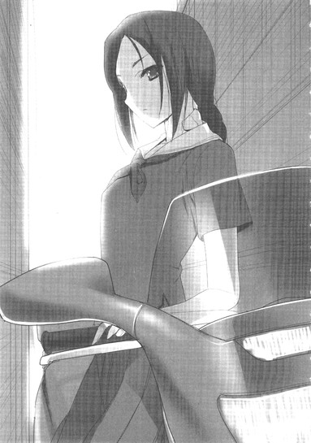
〈ブラッド・レパード〉。中野北部から練馬エリアを支配する赤のレギオン〈プロミネンス〉のサブリーダーにして、〈血まみれ子猫〉の二つ名を持つレベル６バーストリンカー。かつてハルユキの眼前で、〈加速研究会〉所属のラスト・ジグソーをたった一咬みで屠ってのけた猛者中の猛者である。
思えば、これまでも常に唐突な出現でハルユキを驚かせてきた彼女であるが、それにしても今回のこれはいきなりすぎる。まず何を訊いていいのかも判らずに二秒半ほど口をぱくぱくさせていると、それでもうハルユキのターンは終わってしまったらしく、パドさんはバイクのシートから腰を浮かせ、ずいっと左手を突き出した。
その指先に摘まれているのは、赤いシールドコードをぶら下げた小型のプラグ──直結用ＸＳＢケーブルだ。うわ、と思うがここでぼんやり見ていたらそのままニューロリンカーに挿入されてしまうので、慌てて受け取り、幸い二メートルほどはありそうなそのケーブルを自分でジャックイン。視界にワイヤード・コネクション警告が浮かび、消えた直後、やや低めのハスキーボイスが脳内に響いた。
『事前にメールで連絡しなかったのは、まずあなただけに伝えたい情報があったから』
まさにハルユキが最初に訊くべきだった質問とその答えだ。再びバイクに体を寄りかからせ、腕組みをする相手を見上げ、ハルユキもどうにか脳内のギアをシフトアップしつつ思考音声を発した。
『......それは、ネガ・ネビュラスの他のメンバーに、パドさんと会うことを知られたくなかったということですか？』
『結果としてはイエス。でも、別にあなたの仲間を信用していないからじゃない。あなたが仲間にどのように情報を伝えるか、その選択を任せたかった』
『............？』
レパードの言わんとする所を咄嗟に理解できず、首を傾げる。二人のニューロリンカーを繋ぐケーブルが揺れ、シールドの編みワイヤー上を仄かな光が滑る。
高架下の狭い路地の中にいるとは言っても、北側の歩道からは丸見えだ。大型バイクに寄りかかるセーラー服の女子高生と、背が低く丸っこい男子中学生が朝っぱらから直結して見つめ合っていれば、何事ならんとハルユキだって思う。通過する老若男女は遠慮のない視線を沿びせていき、恐ろしいことにその中には梅郷中の制服も散見されたが、レパードが次に発した言葉は、あらゆる雑念を軽々と吹き飛ばすだけの衝撃を内包していた。
『シルバー・クロウ。あなたの即時粛正を〈ＰＫ〉集団に依頼しようという動きがある』
「えっ............」
という喘ぎを、ハルユキは肉声で漏らしてしまった。
一瞬よろめき、すぐに踏みとどまる。しかし、地面がゆっくりと揺れているような感覚は去らない。そんなハルユキを見て、パドさんは仄かに眉のあたりを動かすと、再び右手を伸ばした。ハルユキの肩を引き寄せ、自分のすぐ右横、バイクのシートの前側に座らせる。
がっしりしたスタンドで支えられている大型バイクは、ハルユキの全体重を受けてもびくともしなかった。かつて何度か乗せてもらったマシンの頼もしい感触に少しだけ落ち着きを取り戻し、ハルユキはようやく次の思考をケーブルに流した。
『粛正......って、〈災禍の鎧〉の件があるから......ですよね？でも、あれは、七王会議で、今週いっぱい猶予をくれるって......』
『ええ。でも、過激なことを言っているのは、直接には王たちじゃない。その下の、中堅バーストリンカーたちの一部。彼らは、こう主張している。......あなたが、ここ数日加速世界に広がりつつある、〈闇の力〉の感染源だと』
さしものパドさんも、そのひと言を口にする前には、ほんのわずかな躊躇いを見せた。
しかしそれを意識することなく、ハルユキは二度目の、いっそう大きな喘ぎ声を喉に詰まらせた。
『............っ!! そんな......ち、ちが............』
反射的にすぐ左に立つレパードを見上げ、激しくかぶりを振る。
『違います、僕じゃない！ 僕はあんな......あんなものを作ったりしてない......！』
だが、そう言い募る間にも、脳裏に遠く甦る声があった。
昨日の朝、ちょうどこの近くの環七でクローズド対戦をしたアッシュ・ローラーが、最後に告げたひと言。
──俺が聞いた噂には、続きがあんだよ。ウータンやオリーブたちが使っている〈怪しい技〉......そいつは、クロム・ディザスターの能力のコピーだ、ってな......。
確かに、ＩＳＳキットの使用者が放つようになる影色のオーラと、〈災禍の鎧〉を装着した時のシルバー・クロウがまとっていた闇の波動は現象的には酷似している。両方を見た者ならば、二つが同根であると判断する可能性はあるだろう。だからといって、たった一日でその〈噂〉が加速世界を駆け巡り、シルバー・クロウの即時粛正論にまで成長してしまうというのはあまりにも早すぎる。
しかし同時に、ハルユキはそれが決して有り得ないことではないと理解もしていた。
なぜなら、バーストリンカーにとっては、現実のたった一・八秒が実に三十分に相当するのだから。新宿や渋谷、秋葉原で繰り返される無数の対戦の中で、ギャラリーたちの間にその噂が伝播していけば、一晩で強硬な意見を唱える者たちが出てくることは充分考えられる。られるが、気持ちの上では決して受け入れることなどできない。
両眼を見開き、小刻みに首を振り続けるハルユキを見て、パドさんは仄かではあるが確かな微笑みを浮かべた。先ほど襟首を捕まえた右手が、今度は背中を軽く撫でる。
『Ｋ、解ってる。私も赤の王も、そんな妄言は信じていない。ただ、楽観もできない。だからこうして情報を伝えに来た』
「..................」
すぐには言葉が出なかった。しかしシャツの生地越しに触れる手の柔らかさ、温かさは、いっときにせよ衝撃と恐怖を遠ざけてくれた。
赤のレギオン〈プロミネンス〉は、ハルユキたちの〈ネガ・ネビュラス〉とはあくまで一時停戦中なのであって、決して同盟を結んだわけではない。レギオンマスターのニコとの出会いこそ、彼女が現実世界でハルユキに接触してきて、五代目〈災禍の鎧〉討伐への協力を強引に依頼してくるというものだったが、その貸しも〈ダスク・テイカー〉事件の時に利息つきで返してもらい、現在ではまったくイーブンな関係であると言える。
だからプロミネンスとしては、もう他の五大レギオンの不興を買ってまでネガ・ネビュラスとの停戦を維持する義理はないわけだ。いや、おそらくレギオン内部からは、週末の領土攻撃を再開すべしという意見がすでに出ているであろうことは想像に難くない。
なのにニコやパドさんは変わらず不戦を続け、それどころかこうしてハルユキにわざわざ現実世界で直接危険を知らせに来てくれたのだ。たぶん──きっと、一人の〈友達〉として。
「..................ありがとう、ございます」
ハルユキはそのひと言を、思念だけでなく肉声にも乗せて口にした。じわりと滲みかけた涙を手の甲でごしごしと擦り、思考を立て直す。パドさんの気持ちに応える方法は、無為に怯えたりべそをかくことではなく、冷静に事態を把握し最善の対処をすることだ。大きく深呼吸してから、思考音声に切り替えて答える。
『──でも、〈ＰＫ〉って言っても、そう簡単じゃないですよね？まず、僕のリアルを割る必要があるわけですから』
『イエス。ＰＫ集団も無尽蔵にポイントがあるわけじゃないから、以前レインが現実世界のあなたに接触した時のような無茶な手は使えない』
『......です、よね』
かつてニコは、自分が現実では小学生であることを利用して杉並区の中学校に片端から体験入学の申し込みをし、ローカルネットの臨時アカウントを得てマッチングリストを確認、シルバー・クロウが在籍する学校を突き止めた。次に校門が見渡せる位置に陣取り、下校する生徒が出てくるたびに〈加速〉してはリストをチェックすることを繰り返し、ついにハルユキのリアルを割り出したのだ。その過程で消費したポイントは百や二百ではあるまい。最早レベルアップに汲々とする必要のない〈王〉以外には不可能な手段だ。
ならば、強硬論を唱える者たちはいったいどのようにしてハルユキに〈ＰＫ〉を仕掛ける気なのか。
眉を寄せるハルユキに、隣のパドさんも考える表情を見せつつ呟いた。
『現在、あなたのリアルを知っているバーストリンカーは、ネガビュの現メンバー以外には私とニコだけ。間違いはない？』
『ええ......、そのはずです』
一瞬迷ってから頷く。正確には、〈かつて知っていた〉者ならもう一人いるのだ。今年の新入生として梅郷中に出現し、黒雪姫不在の間にハルユキたちを圧倒した略奪者、〈ダスク・テイカー〉。だが彼は、無制限中立フィールドでの決闘でハルユキとタクムに敗れ、ポイント全損、ブレイン・バースト強制アンインストールという結末へ至った。加速世界に関連する記憶は全消去され、今やハルユキのことは、〈昔一緒に何かのネットゲームで遊んでいた人〉程度にしか認識していない。
無論、彼が所属組織である〈加速研究会〉にハルユキたちのリアル情報を渡していたという可能性はゼロではない。しかしそれをすれば、同じ学校に通う自分のリアルも危険に晒される。〈仲間〉や〈絆〉といった価値観を全否定していた彼が、そこまで組織のメンバーを信用していたとは思えない。
ハルユキの答えを聞き、レパードも軽く首を動かした。
『私とニコに関しては信用して貰うしかないけど、そういうことなら強硬派も簡単にはあなたのリアルは割れない。日曜の七王会議までに〈鎧〉の浄化を完了し、それを王たちが確認すれば、あなたを粛正しようという意見も根拠を失う。──ただ、一つだけ......』
珍しく言葉を途切れさせたパドさんは、上半身ごとハルユキに向き直ると、深い危惧の宿る声で続けた。
『一つだけ、気がかりな勢力がある』
『勢力......？』
『物理攻撃者集団というのは、幾つかのグループの存在が推測されているだけで、そのメンバーが誰なのかは容易には解らない。逆に言うと、解った時はそれこそ全バーストリンカーの総力で粛正され、あっという間にポイント全損となる』
その説明に、ハルユキはこくこくと頷いた。師匠ことスカイ・レイカーも、名前を特定できたＰＫを、神獣級エネミーのテリトリー奥深くに放り込んだことがあるとにこやかに言っていた。あの優しい（はずの）レイカーがそこまで容赦ない手段を採るのだから、ＰＫというのは斯程に忌むべき存在なのだ。
だとすれば、そんな奴らにハルユキの粛正を依頼する、などということがそもそも可能なのだろうか？第一、どうやって連絡を取るというのだろう？
ハルユキの疑問に、レパードは低く押し殺された思念で答えた。
『......〈処刑人〉を気取っている連中がいる。唯一、グループ名を明らかにしているＰＫ集団......最凶最悪の物理攻撃者ども。名前は〈スーパーノヴァ・レムナント〉......略して〈レムナント〉と呼ばれてる』
『スーパーノヴァ・レムナント......』
鸚鵡返しに呟く。そのまま和訳すれば、〈超新星残骸〉というような意味か。
レパードは、いつもは涼やかな眉間のあたりにかすかな険しさを漂わせつつ説明を加えた。
『奴らは、バーストポイントではなく日本円でＰＫを請け負う。〈リアル割り〉のノウハウをたっぷり持っていて、処刑依頼されたバーストリンカーを、これまで例外なくＰＫで退場させてきた。奴らにとってブレイン・バーストはゲームじゃなく、お金を稼ぐ手段でしかない』
「な............」
再び、今度は無意識のうちに、ハルユキは肉声で喘いだ。
ぶるりと背中を震わせてから、抗うように思考を絞り出す。
『なんで......そんな奴らが放置されてるんですか。〈粛正〉するっていうなら、僕なんかより、まずそいつらをするべきじゃ......』
『もちろん、そういう声は過去に何度も上がった。でも、どうしてもメンバーが一人として掴めない。依頼方法も、匿名メールアドレスに、マネーコードと一緒に対象の名前と情報を送るという形式。もしかしたら奴らは、一般対戦はまったくしないで、ＰＫだけでレベルを上げてるのかもしれない。だとすれば、誰も名前を知らない、まったく未知のバーストリンカーたちということもあり得る』
『そ、そんな......それじゃまるで幽霊......いや、死神じゃないですか......』
ハルユキは、電動バイクのシートに浅く腰掛けたまま、虚ろな思念を漏らした。レパードは短い沈黙でハルユキの言葉を肯定してから、もう一度そっと背中に手を触れさせた。
『──まだ、全ては推測。過剰に恐れる必要はない。リアル割れの最大の危険は〈親〉あるいは〈子〉からの情報漏出だけど、あなたに子はいないし──』
そこでパドさんは、いないわよね？ というふうに一瞬首を傾げたのでハルユキは慌ててこくこく頷いた。
『──親は同じレギオンの、しかも百戦錬磨の〈王〉。迂闊に口を滑らせたり、あなたを売ったりはしない。だから、いかに処刑人を気取っている奴らでも、短期間であなたのリアルを割ることは不可能』
ケーブルを流れる思念はそこでいちど途切れた。しかしハルユキは、パドさんが語尾をほんの少しだけ省略したことを悟っていた。
リアルを割ることは不可能だと思う。本来ならばそう言いたかったのだろう。なぜなら、絶対に不可能だと確信しているのなら、こうしてわざわざハルユキに警告に来る必要はなかったのだから。しかしパドさんは、ハルユキを力づけんがために、敢えて断言したのだ。
精一杯その意を汲み、ハルユキはすぐ左に腰掛ける年上の女性を見上げると、しっかりした思考で応じた。
『──解りました。でも、念のために、登下校の時は注意します』
『Ｋ。特に帰りが遅くなる時は、誰かと一緒に帰宅したほうがいい。ソーシャルカメラ視界外にも近づかないで』
レパードはそう補足すると、話は終わったとばかりにハルユキと自分のニューロリンカーからＸＳＢケーブルを引き抜いた。手早く丸め、スカートのポケットに突っ込む。
直結が解除されてしまったので、ハルユキは肉声でお礼を言うべく口を開いた。
「あ、あの、本当に......ありがとうござ」
しかし、台詞は思わぬ理由によって中断を余儀なくされた。
パドさんが、バイク後方のラゲッジスペースから取り出した予備のジェットヘルメットを、ハルユキの頭にがぽんと乗せたのだ。あご下で手早くハーネスを留め、自分はハンドルに引っかけていたフルフェイスのメットを被る。
......へ？
と眼を見開くヒマすらも与えず、ハルユキの後ろから覆い被さるような形でバイクの両ハンドルを握った女子高生ライダーは、「始動」とボイスコマンドを呟いた。ニューロリンカーと接続したバイクのメーターパネルが鮮やかに点灯、同時に前後のアクティブサスが、獲物に飛びかからんとする豹の如くしなやかに車体を持ち上げる。
「あ、あ、あの」
うそ。いや。ダメ。まだ心の準備が。などと考えるハルユキの耳に、ヘルメットの内蔵スピーカーから低い囁き。
『だいぶ時間取らせたから、校門まで送る』
「いいいいいえそんな、わわわわ悪いです」
『ＮＰ』
軽くスロットルが煽られ、バイクはとろっと前進すると高架沿いの道に出た。車体を倒して左折し、前輪が駅方面に向いた、次の瞬間。大出力のインホイールモーター二基が、りゅうううん！と猛々しく吼え──。
「..................あ──────────!!」
両手両脚でしっかり車体を抱え込みながら発した悲鳴は、左側の歩道上の生徒たちには、盛大なドップラー効果を伴って聞こえたに違いなかった。
男子中学生の平均的価値観からすれば〈超ウルトラグレートカッコイイ〉としか言いようのないエレクトリック・バイクで、しかもセーラー服姿の女子高校生とタンデムで校門前に乗り付けるという大技をぶちかましたハルユキは、パドさんがひらりと手を振って環七方面へと走り去るや、久々に必殺技〈ダッシュで逃げる〉を発動させて昇降口に駆け込んだ。
上履きに履き替えるのももどかしく第一校舎の中央階段を上り、二年Ｃ組の教室へと辿り着くと、ふううっと長く息を吐く。素知らぬ顔で自分の席につき、わざとらしく仮想デスクトップなぞいじっていると──。
ぽん、と背中が叩かれると同時に、聞き慣れた声が響いた。
「ハル、おはよ」
一瞬両肩を強ばらせてから、ぎこちなく振り向き、挨拶を返す。
「お......おはよう、チユ」
互いに生まれた時から知っている、と言っても過言ではない幼馴染の倉嶋千百合は、ハルユキの顔を見るや、即座に表情を〈きょとん〉から〈じとー〉へと変えた。
「......やべっ、の顔してる」
「し、してねーよ。これは、その、一時間目の体育イヤだなあの顔」
「それは明日でしょ。今日の一時間目は数学です」
「あ、え、ええと、じゃあ数学イヤだなあの顔」
そこでようやく〈じとー〉が〈やれやれ〉に変わたので、ほっと一息。先に教室に入っていたチユリが、今の段階ではハルユキの登校方法を知っているわけがなく、いずれバレるにせよここはゴマカシておくに若くはない。最大限ナチュラルに視線を外し、教室後方を見やりつつ口を開く。
「え......ええっと、あれ、今日はタクまだ来てないのか。あいつがこんなギリギリなんて珍しいなあ」
予鈴まではあと五分もないの、もう一人の幼馴染の机が空いていることに気づいたハルユキは、格好の話題とばかりにそう言った。だが、その途端にチユリの眉が心配そうに曇ったので、今度はこちらがきょとんとさせられる。
自分もちらりと後ろを見たチユリは、ボリュームを落とした声で囁いた。
「あのね、ハル。今日、タッくん......風邪でお休みみたいなの」
「え............」
反射的に仮想デスクトップに指を走らせ、ローカルネットのメニューからクラス名簿を開く。出席番号31番、黛拓武の名前の横には、確かに病欠のアイコンが表示されている。クリックすると、【風邪による発熱】という簡略な説明がポップした。
「......珍しいな、あいつが風邪なんて......」
眉を寄せ、ハルユキは呟いた。幼い頃から剣道で鍛えているタクムは、肉体的にはハルユキよりもずっと頑健だ。長い付き合いだが、彼が風邪でダウンしたという記憶はほんの数回しかないし、しかもその全てが冬場の流行期だったはずだ。
同じく腑に落ちない様子のチユリは、ひょいと顔を近づけると、いっそう低めた声を出した。
「それにさ......昨日の夜は、風邪引いてる様子なんてぜんぜんなかったよね。あれから熱出ちゃったのかな？」
「あー......言われてみれば......。それに、もし風邪っぽければ、オレたちに感染さないように凄く気を遣っただろうしな......」
そういう配慮を決して怠らないのがタクムという人間だ。ハルユキの指摘に、チユリも深く頷く。ならばやはり、帰宅した夜十時以降に調子を崩したのだろう......
────いや。
ぴりっ、と引き攣れるような感覚が頭の後ろ側に走り、ハルユキは視線を泳がせた。
昨日、ハルユキの家でタクムが漏らした言葉のどれかと、今朝パドさんに伝えられた情報のどれか。
その二つが結合し、仄かな危惧感を芽吹かせる。光の届かない、深い深いところで何かが進行している。こうしている間にも、取り返しのつかない状況へと刻一刻近づいている。そんな焦りにも似た予感......。
「......どうしたの、ハル？」
ハルユキの不安が伝染したかのように、チユリが眉を寄せて囁いた。はっと両眼の焦点を戻し、小刻みにかぶりを振る。
「い、いや......何でもない。そうだ、帰りに、二人でお見舞い行こうぜ。部活終わったらメールくれよ」
早口にそう言うと、チユリはハルユキの内心を見透かそうとするかのように大きな瞳を向けてきたが、やがてこくりと頷いた。
「うん......そうだね。ハルも飼育委員の活動あるんでしょ？一応、そっちも仕事終わったら教えて」
「ああ、解った」
そこで予鈴が鳴り、チユリは軽く手を振って自分の席へと戻った。ハルユキも正面に向き直り、開いたままだったクラス名簿を見詰めながら、今すぐタクムにもメールしたいという衝動としばし戦った。現在、ハルユキを含む全生徒はグローバルネットから強制遮断されており、自宅で臥せっているはずのタクムと連絡する方法はない。
──大丈夫、全部気のせいだ。今現在、ブレイン・バーストがらみの問題に晒されているのは僕なんだから。〈災禍の鎧〉も〈ＩＳＳキット〉も〈レムナント〉も、タクの欠席とは無関係だ。あいつの好きな抹茶アイスでも買ってお見舞いに行けば、ベッドの中で照れくさそうに笑ってくれるに決まってる。
自分にそう言い聞かせ、ハルユキは右手でウインドウをワイプした。直後、担任教師が勢いよく前のドアを開け、日直の号令が気だるげに響いた。
７
午前中の授業四コマがいつもどおりに消化されていく間に、奇妙な胸騒ぎもどうにか遠ざかったようだった。
なぜか少しだけ軽やかに感じられる昼休み開始のチャイムを聞きながら、ハルユキは席を立った。パンとパックジュースで安く済ませるか、それとも学食でカツカレーを豪遊してしまうか、眉間にしわを寄せて検討する。
残念ながら、六月末に迫った文化祭が終了するまでは、ラウンジでの黒雪姫と一緒の昼食もお預けだ。現生徒会最後の大仕事ゆえに、ブレイン・バーストのために役員になったと言い切る黒雪姫も、職務を疎かにはできない。
──先輩が忙しくしてる時に、一人で豪遊も気が引けるなあ。今日はガマンしてカツサンドと牛乳......いや、そこにラスクを付けるくらいなら許されるだろうか......。
などと真剣に悩みつつ、後ろのドアへと近づいた、その時だった。
がらっ！ とかなりの勢いでドアがスライドし、廊下側から一歩大またに踏み込んできた人影があった。
形のいい、長い脚を包む黒いストッキング。スカートは他の生徒と同じグレーだが、その上の半袖シャツはこれまた真っ黒。三年生であることを示す臙脂のリボンの両側には、いっそう黒く艶やかな髪が流れる。
梅郷中の校則では、制服のシャツについて、〈学校指定の形状に適合する無彩色のもの〉と規定されている。そして〈無彩色〉という文言を辞書ツールに入力すると、〈白から灰色を経て黒へと至る色〉との解説が出力される。つまり、グレーや黒も厳密には校則違反とは言えないのだが、メーカーが指定されていてその販売サイトには白のシャツしか登録されていないため、結局生徒はそれを買うしかない。──唯一、そのメーカーに黒の生地でシャツを特注した場合を除いて。
そんな手間をかけた上、教師たちからの当然の是正要求を、校則をタテに涼しい顔で受け流せる生徒など、梅郷中三十数年の歴史でもたった一人しかいるまい。
その一人こそが、いまハルユキの二メートル前方に立ち、両腰に手を当てて敢然と胸を反らして、美しくも峻厳なる表情を浮かべている女子生徒──黒雪姫だ。
二年Ｃ組の生徒たちがしんっと静まりかえる中、大きく息を吸った副生徒会長は、凛と張った声を教室中に響かせだ。
「当クラスより選出された飼育委員長に、生徒会室への即時出頭を要請する！」
一秒後、低いざわめきとともに、十数人ぶんの視線がハルユキへと集中した。堂々たる立候補──その実ウツカリ勘違い──によってハルユキが飼育委員に選出されたのは、皆の記憶にも新しいところだ。周囲の生徒たちが、さっそく何かやらかしたのかという表情を浮かべるが、ハルユキ自身はまるで思い当たらない。
それでもやむなく半歩前に出ると、おずおず口を開く。
「あの......は、はい......」
すると、黒雪姫はじろりとハルユキを一瞥し、
「キミか。では、来て貰おう」
──キミか、も何も先輩はもう僕が飼育委員長だって知ってるはずだし、それ以前になんて言うか僕は先輩の〈子〉だったりレギオンメンバーだったり......。
脳内で混乱し切った思考を巡らせる間にも、黒雪姫はスカートの裾を翻して振り向き、ゴム底の上履きでなんでそんな音が出せるのか謎なカッカッという足取りで廊下に出ていく。一秒半ほど棒立ちになってしまってから、ハルユキは慌てて後を追った。
階段を下り、一階の廊下を西に進む間も、黒雪姫はまったく振り向かなかった。三年生の教室の前を通り過ぎ、第一校舎の一番奥にある生徒会室へと辿り着く。黒雪姫の手がさっと振られると、重々しい解錠音。ドアを開けた副生徒会長は、そのまま中へと消える。
ごくり、と喉を鳴らしてから、ハルユキもスライドレールをまたいだ。背後で勝手にドアが閉まり、再びロックされる。
一昨日ここに来た時は、オレンジ色の夕陽が部屋を暖かく染めていたのに、曇り空から降り注ぐ灰色の光のもとでは空気まで冷たく感じられた。照明の落とされた部屋の真ん中近くまで進んだ黒雪姫は、そこでようやく振り向き、厳しい双眸でじっとハルユキを見た。
「............あ、あの............」
か細い声でそう呟き、同時に気弱な笑いを浮かべかけたハルユキは、その寸前でぐっと口元を引き結んだ。
放課後ならいざ知らず、まだ昼休みなのに生徒会室をプライベートの用事で使うような公私混同を、黒雪姫がするわけがない。つまりこれは、副生徒会長としての、飼育委員長へのオフィシャルな出頭要請なのだ。やはり、知らないうちに委員会の仕事を何か失敗してしまったのだ。
ならば、せめて叱責を真剣に受け止めよう。そう決意し、ハルユキは黒雪姫の言葉を待った。
数秒後──。
黒雪姫が、唇をきゅっと尖らせ、両頬をぷっくり膨らませた。同時に、拗ねたような声。
「聞いたぞ、ハルユキ君。今朝、校門に、ビジンでカッコイイお姉さんとバイクにタンデムで乗り付けたそうじゃないか」
「........................は？」
両眼と口とついでに鼻孔までも丸くしてハルユキが問い返すと、黒雪姫がいっそう強烈なふくれっ面を作る。
「おい、今更ゴマカす気か？ 言っておくが、私なら、当該時刻の記録映像を照会することも可能なんだぞ。それとも、そんなもの観たくもないという私の気持ちもキミは......」
「あ、いやその、ええと、ちょちょちょっと持ってください！」
ハルユキは顔と両手を交互水平運動させつつ懸命に口を差し挟んだ。続けて、おそるおそる訊ねる。
「......あの、飼育委員長に、出頭要請っていうのは......？」
すると黒雪姫は、両の頬にごく仄かな赤色を上らせ、つんと顔を横向けつつ答えた。
「そんなの、キミをここに呼び出すテキトーな口実に決まってるだろ」
────うわー、超公私混同。
ふらりとよろめき、どうにか踏みとどまってから、再度口を開く。
「え......ええーと、バイクの件はですね......先輩はリアルで会ったことないかもですけど、あれは赤のレギオンの幹部の、〈ブラッド・レパード〉さんで......」
「............ほう？」
片方の眉をぴくりと動かす黒雪姫の顔をちらちら確認しつつ、懸命の説明。
「今朝、登校途中に、僕に忠告......っていうか、情報を伝えに来てくれて......それで時間がなくなっちゃったから送ってもらっただけで、その、僕は遠慮したんですけど、あのヒトすっごいせっかちで......」
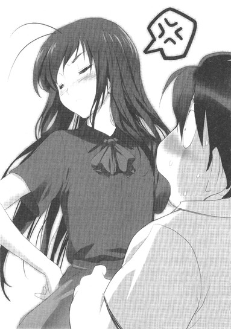
ハルユキの言葉が続く間も、黒雪姫の表情は微妙な変遷を見せたが、やがて再度唇を尖らせると、思いも寄らぬひと言を発した。
「............ズルい」
「......は？」
「ハルユキ君、私とキミが最後に二人っきりで会ったのは、もう十日も前なんだぞ！その間、生徒会活動やら何やらで私がずっとガマンしていたのに、キミはういういと動物の世話をしたり帝城探検をしたり、その上他のレギオンの娘と............」
「す......すみません」
自分が何に対して謝っているのか今ひとつ定かでなかったが、それでもハルユキは反射的に頭を下げた。すると黒雪姫は、不満顔のままつかつかと歩み寄ってきて、すぐ目の前で立ち止まると囁いた。
「そう思っているなら、私に１バーストポイント及び一・八秒の現実時間をプレゼントしてくれ」
「え？ は......はい」
きょとんとしつつ頷いた、その直後。黒雪姫の両手がひゅんと閃き、いつの間にか握られていた黒いＸＳＢケーブルのプラグが、双方のニューロリンカーの直結端子に電光石火の早技で挿入された。今日二回目のワイヤード・コネクション警告の向こうで、艶やかな唇が刻んだコマンドを、ハルユキも無意識のうちにトレースした。
「「バースト・リンク」」
バシイイイッ！ という、もはや耳慣れたサウンドとともに世界が青く凍る。
ハルユキは、現実の自分と比べても相当にサイズの小さい桃色ブタアバターの姿で、すとんと一歩前に出た。
視線を上向けると、こちらは現実とほぼ同身長の、黒揚羽蝶をモチーフとした妖精姫のアバターがひっそりと立っている。質感は違えど美しさは変わらないその顔には、尚もどこか不満そうな色が漂っていたが、どきどきしながら見上げているうちにそれは仄かな微笑みへと変わった。
ほっ、と胸をなで下ろしたのも束の間──。音もなく近づいてきた黒雪姫は、屈みながら長手袋に包まれた両手を伸ばし、ハルユキのアバターの両脇をひょいと挟み込んだ。
わあ!? と思う暇もなく持ち上げられ、そのまま胸にきつく抱きかかえられてしまう。
「あ、あ、あのあのあの、せせせせ先輩」
うわずった声を出すと、耳元で笑いを含んだ囁き。
「──現実世界の生徒会室はもちろん、ローカルネットのＶＲスペースでもこんなことをすれば明確なる校則違反だが、この世界には下らん規則も及ぶまい。それとも、お互いデュエルアバター同士のほうがよかったかな？」
一瞬想像し、即座にぷるぷるかぶりを振る。かつて黒の王ブラック・ロータスが、今とよく似た形でシルバー・クロウを抱き締めた時は、その二秒後にレベル８必殺技〈デス・バイ・エンブレイシング〉が炸裂してエライ目に遭ったのだ。
ふふ、ともう一度笑ってから、黒雪姫は両腕にいっそう力を込めた。
「──本当は、日曜の〈七王会議〉が終わってから、ずっとこうしたかったのだ。キミに、何も恐れる必要はないと伝えるためにな......」
それを聞いた途端、ハルユキは軽く息を呑み、掠れた声を押し出した。
「そんな......、ぼ......僕は......」
──大丈夫です。そう続けようとしたが、なぜかアバターの全身がぶるぶると震えて、正常な音声の出力を妨げた。
同時に、ハルユキは悟っていた自分が、シルバー・クロウを巡る現状に、どれほど強いプレッシャーを感じ続けていたのかを。加速世界に居られなくなるかもしれないという恐怖を、無意識のうちに心の奥底へと押し固め続けていたことを。
尚も激しく身を震わせるハルユキを、黒雪姫は全身で包み込むように抱き締めながら、耳元で滑らかに囁いた。
「大丈夫、キミは独りではない。私がいる。レギオンの仲間たちもいる。赤のレギオンのレインも、レパードも、緑のレギオンのアッシュ・ローラーや、青のレギオンのフロスト・ホーンたち、その他にも沢山のバーストリンカーが、キミの帰還を心待ちにしているはずだ」
「......はい。はい......」
懸命に頷きつつ、ハルユキはいつしか自分も短い両腕で黒雪姫の体を引き寄せていたことに気づいた。しかしもう気恥ずかしさは感じなかった。現実比一千倍の速度で駆動する二人の思考クロックが同期し、溶け合い、感情すらも共有される一体感だけが存在した。
奇跡の手触りに満ちた数秒間が過ぎ去り、やがて黒雪姫はそっとハルユキの体を離した。表情が、少しだけ改められる。星空のような両の瞳も、真剣さを増す。直後発せられた言葉は、ハルユキの予想だにしなかったものだった。
「──だからな、ハルユキ君。妙な噂などに怯える必要はないんだ。現在、加速世界で感染を広げつつある〈ＩＳＳキット〉が。キミから生まれたものだなどということは有り得ない」
「............!!」
再び、仮想の空気を鋭く吸い込んでから、ハルユキは小声で訊ねた。
「......もう、ご存じだったんですか、〈キット〉のこと」
「ああ。昨日、フーコの車で送ってもらう道すがら、謡が説明してくれた」
「そう......でしたか。すみません、報告が遅れて......」
「いや、むしろ、もっと早く状況に気づけなかった私が責められるべきだ。昨日、帰宅してから慌てて情報を収集したが......手口やタイミングからして、奴らの関与を疑うべきだろうな。ヘルメス・コード縦走レースを破壊した、〈加速研究会〉の」
そう口にしながら、黒雪姫は青い氷に変じたソファセットまで移動すると、ハルユキを座らせて自分もその隣に掛けた。
座面にちょこんと正座したハルユキは、こくこくと頷きつつ口を動かした。
「ええ......。僕とタクも、昨日その結論に達したんです。それで、タクは、自分でも調べてみるって言ってたんですが......実はあいつ、今日風邪で学校を休んでて......」
「なに？」
黒雪姫は眉を寄せると、考え込むようにしばし沈黙した。その表情を見上げながら、ハルユキは再び、いわれのない不安が胸に満ちてくるのを感じた。
──ＩＳＳキットの件は、ぼくなりに少し情報を集めてみるよ。
タクムは昨日、最後にそう言って自宅へ戻った。ぼくなりに。その言葉はつまり、ネガ・ネビュラスで彼だけが持つコネクション──かつて所属した、青のレギオン〈レオニーズ〉とのパイプを指しているのではないか？
そう思い至った瞬間、今朝方のブラッド・レパードの言葉のひとつが耳の奥に甦る。
──リアル割れの最大の危険は、〈親〉あるいは〈子〉からの情報漏出。
「あっ......！」
びくん、と体を跳ねさせながら声を上げたハルユキに、黒雪姫が驚いたように視線を向けてくる。その顔を凝視しながら、湧き上がってくる懸念をそのまま声に出す。
「......あの......先輩、タクの〈親〉、青のレギオンのかなり高位の幹部だったって人は確か、もう〈断罪の一撃〉で加速世界を退場してるんですよね？」
「あ、ああ......。それを私に報告したのは、確かキミ自身じゃないか。かつてタクム君が使用した〈バックドア・プログラム〉を配布した咎で、青の王ブルー・ナイトに断罪された、と。ナイトの奴はそのへん潔癖だから、それくらい当然するだろうと私も納得した記憶があるが......」
「そう......でした。でも、確か当時は、バックドア・プログラムを最初に作ったのが誰なのかまでは解らなかったんです。なら、そいつはまだ加速世界に健在かもしれないですよね」
そこで言葉を切り、ハルユキは黒いひづめのついた両手をきつく握りしめて、続きを口にした。
「問題は......プログラムを作って、タクの親に譲渡した奴は、その過程でタクの親のリアルを割ってたかもしれないってことです。だとすれば......同じ学校で、同じ剣道部にいたタクのリアルにも手が届く可能性がある......」
「それは......そうかもしれないが、しかしもうあの事件から八ヶ月も経ってるんだぞ。タクム君のリアルを割るつもりなら、とっくに何らかの動きがあるはずじゃないか」
黒雪姫の、その反論は至極もっともだ。
だがハルユキは、ゆっくりと首を左右に振り、こればかりは黒雪姫も知らないであろう情報を震え声で告げた。
「......今朝、パドさんが僕に会いに来たのは、警告するためだったんです。〈スーパーノヴァ・レムナント〉っていう、最悪のＰＫ集団が、僕を狙って動いてるかもしれないって......」
「なんだと......！」
両眼を見開く黒雪姫の手にすがるように両腕を伸ばし、ハルユキは強ばる口を懸命に動かした。
「もし......、もしタクが、仮病で学校を休んで新宿に行ってたら......。そこでレムナントの奴らに見つかって、カメラ視界外で襲われてたら............」
一度強くつぶった両眼を見開き、ハルユキは続けた。
「......先輩、僕、早退してタクを探しに行きます！直結対戦でポイントを奪おうとしても、全損させるにはかなり時間がかかるはずです。もし......万が一あいつがＰＫに襲われてても、今ならまだ間に合うかも......」
「いかん！」
立ち上がり、〈バースト・アウト〉コマンドを唱えかけたハルユキの両肩を、黒雪姫が強く押さえた。
「今キミまで校外に出るのは危険すぎる！」
「で......でも、タクが！ あいつがブレイン・バーストを強制アンインストールされたら、僕は......僕は......！」
「落ち着け、ハルユキ君！ まずは状況で確認するんだ！本当に風邪を引いて休んでいるだけかもしれないじゃないか！」
「でも......それを確認しようにも、学校を出てグローバル接続しないと......」
「大丈夫だ。この生徒会室の固定端末は・申請すればグローバルネットに接続できる。まずはその回線でタクム君に連結を取ろう。繋がらなければ、その時は......私が新宿に彼を捜しに行く。ナイトの奴に頭を下げれば、配下に動員をかけるくらいはしてくれるはずだ」
黒雪姫のその言葉に、ハルユキはびくりとアバターの動きを停めた。
青の王ブルー・ナイトは、かつて初代赤の王レッド・ライダーの盟友だったのだという。その赤の王の首を、黒の王ブラック・ロータスが不意打ちによって落とした時は凄まじい怒りを見せたと聞いている。先日の七王会議では、青の王は穏やかな物腰を貫いていたが、その奥底には黒雪姫への抑えがたい感情が秘められていたはずだ。
そんな相手に、自レギオンのメンバーを助けるよう依頼するとすれば、頭を下げるだけで済むとは思えない。必ず何らかの対価が要求されるだろう。黒雪姫は、それすらも覚悟の上だと言外に示しているのだ。
瞬時にそこまでを悟ったハルユキは、闇雲に走り出したいという衝動を必死に堪えた。ここで自分が冷静さを失ってはならない。黒雪姫の両手に肩を押さえられたまま、力を抜いて頷く。
「わ......解りました。まずは、連絡を取ってみます」
「うむ。それでは、いったん加速停止しよう」
向かい合って立ち、同時に〈バースト・アウト〉と唱える。生身の体へと戻ると同時に、黒雪姫は直結ケーブルを引き抜いて生徒会室奥にある執務デスクへと走った。極薄のパネルモニタに触れ、ぱぱっと指を走らせる。遅れて隣に立ったハルユキのニューロリンカーから垂れ下がったままのケーブルを捕らえ、コネクタをデスクに埋め込まれた端子に挿入。すると、ハルユキの視界にニューロリンカーがグローバル接続された旨のシステムメッセージが流れた。
「いいぞ」
黒雪姫の声に頷き、強張った口を最大限の速さで動かす。
「コマンド、ボイスコール、ナンバーゼロスリー」
すぐさま視界に呼び出し中のアイコンが点滅。少なくともタクムのニューロリンカーはオンラインだ。加速中ならば留守電モードが応答するので、まだＰＫの襲撃は受けていないか──あるいは全てが終わってしまったかのどちらかだ。
両手に脂汗を滲ませ、アイコンを凝視する。点滅が、五回、六回......七回目で、着信に変わった。
「......た、タク......？」
掠れ声でそう呼びかけながら、ハルユキは巨大な恐怖に押しつぶされそうになった。脳裏に、ブレイン・バースト喪失後の〈ダスク・テイカー〉こと能美征二と会話した時のシーンが否応なく甦る。あの時、彼は、それまで散々顔を付き合わせて会話したはずのハルユキを見て、真っ先に「この人は誰だっけ......？」と訝しむ表情を浮かべた。ポイント全損に伴って関連記憶が消去され、ほぼ加速世界を介してのみ関係していたハルユキのことがすぐには思い出せなかったのだ。
もちろん、ハルユキとタクムは、バーストリンカーになるずっと昔から互いを知っている幼馴染だ。だから、もし加速世界に関連する記憶を失っても、相手のことを完全には忘れないはずだ。
そうと理解していても、ハルユキは怖れずにはいられなかった。タクムの応答があったのはわずか二秒後だったが、その時間は数十倍にも感じられた。
『............ハルかい？ どうしたの？』
「あ......ええと............」
親友の声は、まったく普段と変わらない気さくさを伴ってハルユキの脳内に響いた。安堵のあまりよろけそうになり、デスクに片手をつきながら、ぎこちなく答える。
「そ、その、タクが休みなんて珍しいからさ。具合、どうかなって......」
『......ごめんよ、心配かけて。大丈夫......大したことはないんだ』
そう応じる声は、よくよく気をつけて聴くと、やはり少しばかり元気がないようにも思えた。しかし病気ならむしろ当然だ。改めて風邪のほうも心配になり、訊ねる。
「熱、あるのか？ ちゃんとおとなしくしてないとだめだぞ。今......家にいるのか？」
『はは、もちろんそうだよ。ハルじゃあるまいし、ちゃんと薬呑んで寝てるさ。昔、君がインフルエンザで三十九度も熱出したっていうからチーちゃんとお見舞いにいったら、寝てるフリしてフルダイブでゲームしてたこと忘れてないよ』
「わ、忘れろよそんなの」
言い返してから、ハルユキは念のために、最後のひと言を口にした。
「......〈対戦〉も控えて、しっかり治してくれよな。明日また、レギオンの大事な作戦があるんだからさ」
すると、わずかな間を空けて──。
『ああ......解ってるよ。明日までにはちゃんと治すさ。──そっちはまだ昼休みだよね、ハルにグローバルー回線使わせてくれたこと、ぼくからもマスターにお礼を言っておいて』
タクムが〈マスター〉と呼んだのは、もちろんネガ・ネビュラスのレギオンマスターである黒雪姫のことだ。つまり彼が加速世界の記憶を喪失などしていないことは、これで確定だ。ほっと息を吐きつつ答える。
「なんだ、お見通しか。解ったよ、伝えとく。......じゃあ、また明日な。お大事に」
さすがに消耗を窺わせるタクムに、これ以上長話を強いるのも気が引けて、ハルユキはそこで通話を切った。顔を上げ、傍らの黒雪姫に向き直って、バツの悪い笑みを浮かべる。
「あ、あの......タク、ほんとに風邪で寝てるだけみたいでした。すみません、全部僕の早とちりです......」
すると、黒雪姫は温かい笑みとともに首を振った。
「謝らなくていいさ。良かったよ、何もなくて。......だが......」
そこでやや表情を改め、ハルユキがニューロリンカーとデスクから抜いて返したケーブルを仕舞いながら続ける。
「......〈レムナント〉の奴らが動いているかもしれないというのは看過できない話だ。少なくともこの杉並では、そう容易くキミや我々のリアルには辿り着けないと思うが、念のため今日からしばらく対戦待ち受けは拒否しておくべきだろうな。こちらから挑戦する場合も、よく知らない相手は控えておいたほうがいい。アバターの出現位置からリアルを割られないとも限らんからな......」
「ええ......。チユとタクには、僕から伝えておきます」
「頼む。──それでは、我々は昼食にするか。たまにはラウンジで一緒に食べよう」
ぽん、と肩を叩かれ、ハルユキはつい顔を緩めてしまいながら頷いた。黒雪姫もにっこり笑いつつ、何気ない口調で付け加えた。
「──〈ブラッド・レパード〉にも情報の礼を言わないとな。どうせなら、リアルで会ってみるのも悪くないかもな。キミ、そのうちセッティングしてくれ」
「はい。............は、はい？」
頷いてしまってから、その場がどのような雰囲気に包まれるかを想像し、ぎょっと上体を仰け反らせる。
「い、いや、そそそれは、どーなんでしょうか」
うわずった声を漏らしつつ、ドアへと向かう黒雪姫の後を追う。
そんなやりとりをする間も、ハルユキは、いまだ奇妙な胸騒ぎが完全には去らないのを感じていた。
先刻のタクムの声の、ほんの少し普段とは違った響きがその理由かもしれない。風邪なんだから元気がないのは当然だ。しかしあの声の重さは、肉体的な不調というよりも、ある種の精神的な揺らぎを漂わせていたように思えた。そう──、どこか、去年の一時期のタクムを思い起こさせる不安定さ。
──気のせいだ。タクムは今や、その知性と冷静さでレギオンを支える揺るぎない柱なのだ。
ハルユキは自分にそう言い聞かせると、再びわずかに滲みかけた掌の汗を制服のズボンで拭い、黒雪姫に続いて生徒会室を出た。途端に押し寄せてきた昼休みの喧噪と、廊下の彼方の学食から届く香辛料の匂いが、胸騒ぎを遠ざけていった。
しかし──。
己の危惧が、質的にはある程度正しかったことを、ハルユキはわずか三時間後に知らされた。
ただし、量的には誤っていた。状況は、ハルユキの、そして黒雪姫の予想をも遥かに超えたところまで、すでに到達してしまっていた。
その知らせを直接的にもたらしたのは、放課後、アフリカオオコノハズクの〈ホウ〉に餌を与えるために梅郷中を訪れた、レギオン最年少メンバーの四埜宮謡だった。
午後の授業二コマと、ついでにお昼に黒雪姫と食べたカレーを順調に消化したハルユキは、部活に向かうチユリに「あとでメールする」と声を掛けて昇降口から外に出た。先週までなら一目散に校門から脱出してニューロリンカーをグローバル接続し、おやつ代わりのネット情報を貪っていたものだが、飼育委員長の職を拝命してしまった今となってはそうもいかない。とは言え、不思議に面倒な気持ちはない。それどころか、委員の仕事をするのが楽しみにすら思えるのだ。
頭上は相変わらずの曇り空だが、幸い今日も雨の予報はなかった。飼育小屋から掃き出して乾燥中の落ち葉の山を、そろそろ袋詰めしてゴミに出せるはずだ。
第二校舎を回り込み、北の裏庭に出る。苔むした地面を踏みながら、北西の角にある天然木の小屋を目指す。裏庭の大部分は日当たりが皆無だが、小屋の南は校舎が切れて低い木立になっており、金網を通して日差しが届く。
前方に見えてきた小屋の周囲に、他の生徒の姿はなかった。飼育委員会には、ハルユキの他に、くじ引きで決まった同学年の浜島という男子および井関という女子がいるのだが、現在ハルユキは彼らの参加を任意に設定している。仕事を強制するより、自発的に活動してくれるのを待つほうがよかろうという判断なのだが、どうやらかなり長く待つことになりそうだ。
ハルユキが小屋に到着した時、ホウというやや安直な名前のコノハズクは、床に置かれた金属バットの中で水浴びをしていた。
翼をやや広げ、そのまま前のめりになって、浅く張られた水に胸から顔までを沈める。すぐ体を起こし、濡れた羽を畳んでこしこしと小刻みに動かす。まるで人間が体を洗うようなその仕草に、ハルユキは思わず笑ってしまった。
「はは......、気持ちよさそうだなあ、お前」
声を掛けると、ホウはくりんと顔を回し、ハルユキを見てどこかバツの悪そうな表情を浮かべた。全身を激しく震わせて水を弾き飛ばし、水面から離陸する。小屋の中で数回大きく円を描いて飛び、定位置らしい左の止まり木の技にランディング。胸のあたりの羽毛をつくろい始める。
あの技には圧力センサーが仕掛けてあり、ホウの体重を測定できる。ハルユキは仮想デスクトップを操作すると、ローカルネット専用ブラウザから委員会活動のタブを開き、リンクしてあるセンサーの数値を表示させた。
と、その時、視界にアドホック・コネクションの要求窓がポップ。右を見ると、真っ白いワンピースタイプの制服に身を包み、茶色いランドセルを背負った小柄な少女が微笑みながら立っていた。
「あ......こんにちは、メ......じゃない、四埜宮さん」
不思議なもので、こうして生身の時はうっかりデュエルアバター名で呼びかけそうになるし、加速世界にいるときは本名で呼びそうになる。〈アーダー・メイデン〉の略称である〈メイさん〉と言いかけて訂正したハルユキは、左手で頭をかきながら右手でリクエスト窓のイエスボタンに触れた。
自動的にチャットツールが起動し、謡が相変わらずの超高速タイピングでホロキーボードを叩く。
【ＵＩ＞ こんにちは、有田さん。ホウさんの体重はどうでしたか？】
「あ、えっと......適正範囲内だけど、ちょっと下ぎみかな？」
【ＵＩ＞ 生活環境が変わった直後ですから、多少のストレスはやむを得ないのです。今日はごはんを多めた持ってきました。給餌を近くで見ますか？】
「う、うん、ぜひ！」
答えて、ブラウザを消去する前に、ハルユキはもう一度委員会のタブを確認した。システムから指示された任務は小屋の通常清掃のみで、要求人数は一人。いちおう浜島くんと井関さんの名前を確認するが、表示されたステータスは予想どおり二人とも【下校済】だ。
ため息を呑み込み、ハルユキは謡が大型の電子ロックを解錠するのを見守った。小さな手の一振りでかちんとボルトが外れ、謡はホウが止まり木の上にいるのを確認してから、ハルユキを手招き。金網の扉を最低限開き、二人急いで中に入る。
扉を閉め、内側のスライドロックを掛けると、謡はランドセルを下ろした。中から、まず薄茶色のレザー・ガントレット──ではなく革手袋を出す。肘近くまであるそれを左手に装着し、再び鞄に手を入れる。
取り出されたのは、小型の保冷ケースだった。右手でぱかっと開くと、中身はどうやら細切りにした生肉のようだ。
──おお、さすが猛禽類。
ハルユキが感心しながら見守る中、立ち上がった謡は左手を止まり木に向けて掲げた。すると、まるでテレパシーか何かで意思疎通したかのようにホウが翼を開き、わさっと飛び立って謡の手まで移動。赤金色の両眼をまん丸に開いて、早く早くと言わんがばかりにくちばしを突き出す。
謡が、床に置いたケースに屈み込もうとするので、ハルユキは急いでそれを持ち上げると両手で保持した。謡はにこりと微笑み、右手でケースから赤みの強い肉片を一つ摘み取る。
ホウの顔にそっと近づけると、鋭いくちばしで素早くついばみ、ほとんど丸呑みのようにして食べてしまった。ハトやニワトリが地面の餌をつつく動作とはずいぶん違う。ハルユキが再び「おー」と思う間にも、謡は次々と肉片を差し出し、それをホウがひょいひょいと胃に収めていく。何の肉なのかな、と思うものの、料理などしたことのないハルユキには見た目で判断はできない。
コノハズクの、二十センチちょっとの体格に比してかなり量が多いように思えた保冷ケースの中身は、あっという間に空になってしまった。謡が、これでおしまい、というように頭を撫でると、ホウは満足げに首をくるくる動かしてから、再び飛び上がって元の枝へと戻った。
手袋を外し、ハルユキからケースを受け取った謡は、いったん小屋の外に出ると備え付けの水道で洗いはじめた。その間に、ハルユキは止まり木の周囲に敷いた合成紙を取り替える。日々のニュースがペーパーメディアで配信されていた時代は、こういう用途には新聞紙と称したそれを使い捨てで用いたらしいが、今や天然繊維の紙は高価な贅沢品だ。ホウの落とし物で汚れた敷き紙を、謡と入れ替わりに流水で洗い、傍らの小型ハンガーに吊す。
一仕事終えたところで、ハルユキは先刻から訊きたくてたまらなかった質問を口にした。
「ねえ、四埜宮さん。さっきホウにあげたの、何の肉なの？」
すると四つ年下の少女は、にこりと微笑んで両手を閃かせた。
【ＵＩ＞ あててみてください】
「え......、えーと......と、鶏肉？」
謡が空中の一点を指先で押すと、ハルユキの聴覚に『ぶぶー』という不正解ブザー音が響く。チャットツールに搭載されたサウンド機能だ。
「じゃ、じゃあー、豚内」『ぶぶー』「ええー？まさか牛肉？」『ぶぶー』「ひ、羊？」『ぶぶー』「まさかのサカナ系？」『ぶぶー』
そこでハルユキは降参とばかりに両手を挙げた。すると謡はどこか意味深な笑みを浮かべながら、思いがけない文字列をタイプした。
【ＵＩ＞ それでは、明日はさばく所からお見せするのです。多少の精神的ダメージが予想されるので、心の準備をしておいてください】
「は......さ、サバク？」
【ＵＩ＞ さあ、遅くならないうちに、落ち葉を片付けてしまいましょう。もうすっかり乾いているようなのです】
そこでにっこり微笑まれてしまったので、それ以上追及もできず、こくりと頷く。
「う、うん。じゃあ僕、ゴミ袋取ってくる」
中庭の用具置き場目指して駆け出しながら、ちらりと小屋の中を見ると、すっかり満腹らしいコノハズクは、止まり木の上で耳羽を伏せ片足立ちになるいつものポーズで眠たげに眼を閉じていた。
こればかりは数十年見た目が変わっていない半透明のゴミ袋に、山積みになっていた古い落ち葉を詰め込む作業には三十分近くを要した。いっそ巨大な焚き火を作り、そこでサツマイモを焼いたり──というようなシーンを、古い映画や漫画で観た──すれば楽しくも美味しい処理ができたのかもしれないが、校内で火など熾せばたちまち警報が鳴り響き緊急車両が殺到し大げさでなく警察に逮捕されてしまう。それ以前に、未成年がライター等の着火装置を入手するのはとてつもなく困難だ。去年ハルユキを散々苛めた連中も、校内で喫煙するというエターナル・レジェンド級の不良行為にはついぞ及べなかったらしい。
ゆえに、二人は苦労して作製した八つの落ち葉ぎゅう詰めゴミ袋を、前庭の隅にある集積所まで運ばねばならなかった。作業が終了した時、時刻は午後四時二十分になっていた。
「ふう......、やーっと片付いたぁ......」
【ＵＩ＞ お疲れ様なのです】
顔を見合わせ、ほこっと笑いを浮かべてから、順番に手を洗う。これで今日の任務は全て完了だ。この後は、チユリと一緒にタクムのお見舞いに行く約束をしているが、彼女の部活動が終わるのは五時くらいなので少し時間がある。さてどうしよう、と思ったその時──。
真っ白いハンカチで丁寧に手を拭き終えた謡が、軽く首を傾げ、宙をクリックした。右手でウインドウを操作しながら、左手だけで器用にキーボードを打つ。
【ＵＩ＞ フーねえからメールなのです。〈緊急〉のタグがついているので、すみませんが今読ませて頂くのです】
謡が言う〈フーねえ〉とは、スカイ・レイカーこと倉崎楓子のことだ。渋谷区の高校に通っている彼女からのメールをなぜ校内で着信できるのか、と疑問に思ってからすぐに悟る。ハルユキのニューロリンカーは、梅郷中ローカルネットに接続すると自動的にグローバルネットから遮断されてしまうが、謡は梅郷中ネットではゲストユーザー扱いなのでその制限を受けないのだろう。しかも彼女は、通常のネットワーキング用途には脳内の〈ブレイン・インプラント・チップ〉を用いているため、グローバルネットに繋ぎっぱなしにしていてもブレイン・バーストのマッチングリストには登録されないのだ。
「は、はい、どうぞ」
ハルユキが頷くと、謡は素早くメールを開封し、眼を走らせた。
途端、虹彩に薄く赤色が混じる大きな瞳が眼界まで見開かれる。喘ぐように空気を吸い込んだ唇が、そのまま小刻みに震える。
「え......ど、どうしたの!?」
仰天し、ハルユキは謡に一歩近づいた。
両眼の焦点を、仮想デスクトップからハルユキに移した少女は、わずかにぎこちない指使いでキーボードを叩いた。
【ＵＩ＞ 有田さんは、〈スーパーノヴァ・レムナント〉という、最悪と評されるＰＫ集団のことをご存じですか？】
「............!!」
──知っている。正確には、知ったのはつい今朝方のことだが、以来たった八時間の間にその名前はハルユキの意識に圧倒的恐怖とともに刻みつけられてしまった。
「......う、うん。そいつらが......どうかしたの？」
とてつもなく悪い予感が背筋を這い上るのを感じながら、ハルユキは掠れ声で訊ねた。
【ＵＩ＞ 今日の午前中に、その〈レムナント〉のメンバーと推測される高レベルのバーストリンカー四人が、新宿区の無制限中立フィールドに於いて一人のバーストリンカーを襲撃し......】
ウインドウを流れる桜色のフォントを、ハルユキは顔を歪めて凝視した。
嘘だろ、まさか、という思考だけが脳内を渦巻く。──タクじゃない。だってタクは、昼休みに、ちゃんとコールに出たじゃないか。僕のことも、黒雪姫先輩のことも、ちゃんと憶えてたじゃないか。
しかし、次の瞬間、視界に表示された幾つかの文字は、ハルユキにいっそう巨大な衝撃と混乱を与えた。
【ＵＩ＞ ......逆に、全滅したそうです】
「え......ぜ......んめつ............？」
咄嗟にテキストの意味を理解できず、ハルユキは呆然と問い返した。
「全滅......って、最悪のＰＫっていう、〈レムナント〉が......一人にやられて......？」
【ＵＩ＞ そのようなのです。その時間に、付近でエネミーの長期キャンプ狩りをしていたレギオンがあり......バトルエフェクトの余りの激しさゆえに、その戦闘に気づいて偵察に行ったようです。彼らが見守る中、最初は襲っている側だと思われた四人は次々に斃され、死ぬと同時に〈最終消滅〉したらしいのです。これはつまり、その四人と一人が、〈サドンデス・デュエル・カード〉で全ポイントを賭けていたのだと思われます】
「え、ええと......つまり、こういうこと？ レムナントの四人は、誰かをリアル・アタックして、脅してサドンデス・デュエルに同意させて......でも、その誰かに反撃されて、全員が一気にポイント全損した......？」
【ＵＩ＞ そう推測すると、フーねえも書いています】
「い......いったい誰が、そんなとんでもない逆転を......。〈王〉の誰か......？〈王〉が、自分を囮にして、レムナントをおびき出して始末した......？」
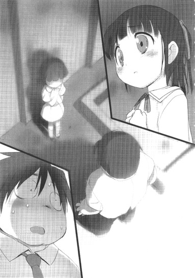
ハルユキにどうにか推測できるのはそこまでだった。しかし謡は、凍り付いたような表情でゆっくり首を横に振ると、いっそうぎこちない指使いで宙を叩いた。
【ＵＩ＞ いいえ。エネミー狩りレギオンが目撃した、その〈一人〉は、水色の装甲を持つ重量級で、右手に貫通属性の強化外装を装備していたそうです。彼は、戦っていた集団の最後の一人を、右手の杭に串刺しにしたまま目撃者たちの前まで運び、そのバーストリンカーが〈スーパーノヴァ・レムナント〉のメンバーであると告げてから止めを刺し、ポータルへと去った。フーねえは、彼が】
一瞬の躊躇いに続き、ハルユキの眼前に、最後の一文がゆっくりと流れた。
【ＵＩ＞ 〈シアン・パイル〉なのでは、と】
８
ハルユキは走った。
校門を出て、すぐ北の青梅街道を東に曲がる。下校時はそのまま環七通りまで行ってしまうことが多いが、今ばかりは時間優先で、住宅地を斜めに貫く登校路を逆に辿る。
梅郷中から自宅マンションまでは最短ルートでも約一・五キロメートルあるので、ノンストップで走り通すのは、ハルユキには相当の苦行だ。しかし、体育の授業で長距離走をやらされている時の拷問のような辛さを、今だけはほとんど感じなかった。底なしの焦燥感に衝き動かされるまま、空気を次々肺に送り込み、地面を蹴り付ける。
四埜宮謡に、倉崎楓子からの緊急メールの内容を知らされたその数秒後には、ハルユキは行動を開始していた。まず飼育委員会の日誌ファイルを学内ネットに提出し、部活中の倉嶋千百合には『先にタクムのお見舞いに行く』とメールする。そして謡に、今の情報を生徒会室の黒雪姫に伝えてくれるよう頼み、自分は校門を飛び出したのだ。
「............タク............なんで............何が............」
荒い息の下で、切れ切れの言葉を漏らす。額から流れる汗が眼に入り、握った拳でごしごしと拭う。
楓子から伝えられた情報それ自体は、クリティカルなものではない。なぜならタクム──シアン・パイルは多対一の戦いに勝利し、無事にフィールドを離脱したというのだから。昼休みにハルユキからのコールにちゃんと応答したことを見ても、それは明らかだ。
しかし、その状況に至る前に〈何か〉があった。それは間違いない。風邪で臥せっていたはずのタクムが、新宿でＰＫ集団と交戦したという状況そのものがすでに異常だ。そしてもう一つ、こんなことを考えたくはないが、無視もできない謎が存在する。
彼は、なぜ勝てたのか？
シアン・パイルは、現在シルバー・クロウと同じくレベル５だ。初心者ではないものの熟練者とも言えない。対して、レムナントのメンバーは、〈高レベル〉と表現されるからには全員が少なくとも６以上だろう。そんな連中を同時に四人も敵に回して、しかも何でもありの無制限中立フィールドで完勝するのは、少なくともハルユキには絶対に不可能だ。
もちろんタクムの物理攻撃力は折り紙付きだし、冷静さや知略はハルユキの遠く及ぶところではない。それでも、自分より高レベルのバーストリンカーを四人同時に屠るというのは異常なのだ。あの黒雪姫ですら、かつて同レベルの〈王〉五人と同時に戦い、ただの一人も倒せなかったと言っていたではないか。
〈何か〉。ハルユキの想像の及ばない、異質な〈何か〉がゲームの法則をねじ曲げた。そして、それはきっとまだ消えていない。昼休みのコールに応じたタクムの声には、わずかに虚ろな響きがあった。あれはおそらく、発熱のせいではなかったのだ......。
「............タク............」
中央線の高架沿いの道から環七に出て左に折れると、行く手に見慣れた高層複合マンションが姿を現した。痛む両脚を懸命に動かしながら、ハルユキはもう一度掠れ声で親友の名前を呼んだ。
──親友。その絆までは。そこまではまだ、損なわれていないはずだ。
そう念じると同時に、ハルユキは否応なく理解してもいた。自分がここまで必死に走っていること自体が、今やその絆すらも不安定に揺らぎつつあると、無意識のうちに感じている証なのだと。
ハルユキ、チユリ、そしてタクムの三人が暮らすマンションは、地下一階から地上三階までが大型のショッピングモールになっている複合施設だ。
食料品や日用雑貨、衣料品、電化製品を扱う各種テナントショップや、中規模ではあるがシネコンすら存在するモールはマンションの付加価値を高めているが、当然買い物に訪れる客は住民だけではない。ゆえに、モールとマンションのエリア境界には、厳重なセキュリティゲートが設けられている。訪問客はもちろん、住民ですらニューロリンカーかバイオメトリクスで認証せねば通過できない。
エレベータホール前のゲートで、視界に表示されたインジケータが青に変わるまでのたった数秒を、ハルユキはじりじりしながら待った。金属バーが跳ね上がった瞬間ダッシュし、閉まろうとしていたエレベータのドアを体でブロックして乗り込む。住民らしい婦人が眉を顰めるが、軽い会釈だけして体の向きを変える。
ハルユキの自宅は東のＢ棟二十三階、チユリの家は同じくＢ棟二十一階にあるが、タクムは西に分離して建つＡ棟の十九階に住んでいる。もちろんＡ棟のエレベータに乗ったハルユキは、普段とどこか違う気がするモーター音を聞きながら、焦らすように加算されていく階数表示をじっと見詰めた。
幼い頃は、毎日小学校から帰ってランドセルを置くや否や家を飛び出し、チユリ、タクムと一緒にモールのアミューズメントエリアや近くの公園で夕方まで遊び回った。お腹を空かせて帰ってくると、二人はモール一階の奥で手を振り合い、ハルユキとチユリは右のＢ棟エレベータホールへ、そしてタクムは左のＡ棟エレベータホールへと別れた。
もしセキュリティゲートの前で振り返れば、タクムの眼には、連れ立ってエレベータへと駆けていくハルユキとチユリの背中が見えたはずだ。
彼はその時、何を感じたのだろう。
もしかしたら、数年間胸に積もり続けたその何かが、まだ小学五年生だった彼に、チユリへのほんの少し急な告白を決意させたのだろうか。
......あれは、みぞれ混じりの初雪がちらついた、塞い寒い日の夕方だった。
さすがにいつもの外遊びは取りやめになり、ハルユキは自宅で一人ゲームをしていた。チャイムが鳴り、フルダイブを自動切断されて、ふくれっ面で開けたドアの向こうにいたのはチユリだった。
いつもと様子の違う幼馴染に首を傾げながら、ハルユキは彼女を自室に上げた。ベッドに腰掛けたチユリは、しばらく黙り込んでいたが、やがてか細い声で告げた。
タクムに告白されたこと。そして、自分ではどうすればいいのか解らないことを。
そんなの、まだ十一歳だったハルユキにも解るわけがなかった。驚きと混乱に等しく見舞われ、ただ呆然とチユリの横顔を見ているうちに、しかしそれでもたった一つだけ直感的に確信したことがあった。
もしチユリがタクムを拒否すれば、彼は去っていくだろう。金色の光に満ちた放課後のひとときは失われ、二度と戻らないだろう。
心細そうな表情のチユリに、ハルはどうしたらいいと思う、と訊かれた時、ハルユキは半ば反射的に答えていた。
──お前とタクならお似合いだよ。それに、お前たちが付き合っても、オレは友達やめたりしないよ。
するとチユリは深く俯き、目尻を手の甲で拭ってから、顔を上げて「うん、わかった」と微笑んだ。
しかし結局、ハルユキの言葉は嘘になってしまった。付き合いはじめたチユリとタクムから、ハルユキは少しずつ距離を取っていき、六年生の夏休みにはもう三人で遊びに行くことはほとんどなくなった。
中学に進む時、タクムはチユリに、自分と同じ新宿の学校を受けることを勧めたらしい。しかし彼女は、以前から決めていたことだからと、自宅からほど近い梅郷中を選んだ。
チユリはおそらく、壊れかけた三人の環を、せめて円の形だけでも保とうとしたのだ。しかしその意思表示が、タクムをいっそう追い詰めてしまった。彼はチユリを繋ぎ止めるための力を、所属していた剣道部の部長に与えられた〈ブレイン・バースト〉によって得ようとした。学年トップクラスの成績と、剣道の都大会優勝という輝かしい実績を〈加速〉の力で手にしたものの、そのステータスを維持するためにバースト・ポイントを枯渇させ、禁断のツール・チーティング──すなわち〈バックドア・プログラム〉の誘惑に負けた。
直結によってチユリのニューロリンカーにプログラムを仕掛けたタクムは、彼女を踏み台に梅郷中ローカルネットに侵入し、加速世界最高の賞金首たる〈ブラック・ロータス〉の名を見つけ、狩らんと試み、そして............
緩やかな減速感とともにエレベータが停止し、ハルユキは床に向けていた視線を上げた。
十九階を示すホロタグの向こうでドアが開く。マンションまであれほど懸命に走り通した足が、今はなぜか重い。背後の女性のわざとらしい咳払いに急かされ、ドアが閉まる寸前で共用廊下に踏み出す。
タクムの家が一九〇九号室だということは知っているが、訪れたことは数えるほどしかない。彼の両親は一人息子の教育に非常に熱心で、友達が遊びにくることにいい顔をしなかったからだ。
今年の頭に、タクムがそれまで通っていた新宿の有名進学校から梅郷中に転校すると決めた時は、それはもう大変な騒ぎになったらしい。今や息子をたぶらかした張本人である（と認識されているはずの）ハルユキとしては昔以上に敷居が高いが、幸いと言っていいのかタクムの両親は共働きで、もうしばらくは帰宅しないはずだ。
ほんの数十歩進んだだけで、記憶よりずいぶんと早く【黛】の表札が眼に飛び込んできた。
Ｂ棟とは色の違うドアの前に立ったまま、ハルユキは中断された回想に幕を引いた。
──色々なことがあったし、沢山間違えもした。でも、僕とタクはあの〈煉獄ステージ〉での戦いで、初めてお互いの本音を拳に乗せてぶつけ合えたんだ。多分あの時、僕らはようやく本当の友達になれたんだ。たとえ何があろうと、その事実だけは変わらない。
大きく息を吸い、ハルユキは右手を持ち上げると、視界に表示された呼び出しチャイムのボタンに触れた。
少しだけ長い待ち時間ののち、応じた声はやはり親ではなくタクム本人のものだった。
『......どうぞ。......悪いけど、ぼくの部屋までそのまま来てくれ』
ドアに埋め込まれたカメラでハルユキの顔を確認したのだろうが、それにしてもまるで訪問を予期していたかのような言葉に続けて、ロックが解錠される。プッシュプル式のドアハンドルを引くと、「おじゃまします」と小声で呟き、ハルユキは玄関の中へと入った。
スニーカーを脱ぎ、きちんと揃えて、廊下に上がる。遠い記憶に従って進み、右側二つ目のドアをノック。今度は肉声の「どうぞ」を聞いてから、ノブを回す。
部屋の中は、灯りが落とされ、西向きの窓から入り込む暮色だけに弱々しく照らされていた。
ジーンズに七分袖のカットソー姿のタクムは、腰掛けていたベッドから、半ばシルエットに沈んだ顔をハルユキに向けると小さく微笑んだ。
「やあ、ハル。──立ってないで、座れよ」
「あ......ああ」
頷き、ぎこちなく部屋に踏み込む。家具類は、小学生の頃からそのまま使っているものも、入れ替わったものもあるようだった。しかし、ハルユキの自室と比べて圧倒的に物が少なく、片付いているのは変わっていない。ブルーグレーのカーペットが敷かれた床を横切り、鞄を置くと、タクムの右横に八十センチほど離れて腰を下ろす。フォールディング機構つきのベッドが軋み、高反発性のマットレスも半分近く沈み込む。
衝動に急かされるままにここまで走ってきてしまったが、いざ顔を合わせると、何をどう切り出していいのか判らなかった。
再び俯き、膝の上に置いた右腕に左手を重ねているタクムの様子は、昨日ハルユキの家で別れた時とはどこか異なる。それは確かだ。しかし情報が錯綜しすぎていて、彼が今置かれている状況がまるで掴めないのだ。
十秒近くも黙り込んでしまってから、ハルユキはようやく、自分がそもそもはお見舞いに来る予定だったのだということを思い出し、口を開いた。
「あ......あのさ。お前今日、風邪で病欠ってなってたけど......具合、どうなんだ......？」
「ああ......、そうか、そうだったね」
ふふ、と小さく笑ったタクムは、軽く肩をすくめて続けた。
「今朝、少し熱があったのは本当だよ。そうでなきゃ、ぼくの親が学校休ませてくれる訳ないからね。でも大丈夫、午前中に病院で貰った薬呑んだら、熱は下がったから」
「病院......行ったのか」
──だとすれば、何もかも早とちりだったのか？
いや、ＰＫ集団〈スーパーノヴァ・レムナント〉が、今日の昼前にたった一人のバーストリンカーに壊滅させられたのは事実なのだろう。でもそれは、ただシアン・パイルに似ているだけの別人だったのかもしれない。だって、その頃病院で診察を受けていたタクムが、新宿で襲われるはずが......
「うん。父親の共済が使える病院が新宿にあってね。朝、車で送ってもらったんだ」
──というタクムの言葉が、ハルユキの半ば願望的な思考を遮断した。
「し......新宿......？」
強張った声でそう繰り返したハルユキの耳に、あくまで穏やかなタクムの声が届く。
「......診察自体はすぐに終わってさ。風邪も大したことなさそうだったんで、せっかくだから、新宿エリアで情報収集しようと思って......昔けっこう仲が良かった、青のレギオンのメンバーにメールしたんだ。と言ってももちろん、リアルで会うほどの仲じゃないけどね。駅近くの小さなアミューズメントセンターのローカルネットで落ち合うことにしたんだけど......まさかあいつが、ぼくをＰＫ集団に売るなんてね......」
ふ、ふ、と小さく笑うタクムの、陰に沈んだ横顔を、ハルユキは呆然と見詰めた。
いっそう背中を丸め、右腕を握る手に力を込めた親友は、徐々に低くなっていく声で語り続けた。
「どうやらＰＫの奴らは、ぼくの〈親〉だったバーストリンカーのリアル情報を入手して、その線からシアン・パイルの候補になり得る生徒を絞り込んでいたようだった。アミューズメントセンターのグループ用ダイブブースにぼくを押し込んだ、いかにもな格好をした四人は、おもちゃみたいなナイフをちらつかせながらどっちか選べと言ったよ。直結対戦で少しずつポイントを獲られるか、無制限フィールドで一回死んで終わらせるか、ってね。もしぼくが抵抗しても、本当に刃物を使う度胸があったか、怪しいもんだったけどね......」
ふふ、ふふふ。肩を揺らしてタクムが笑う。その声には、いつか、どこかで聞いた記憶のある歪んだ響きが仄かに含まれている。
「ぼくはもちろん、イレギュラー因子の多い無制限中立フィールドを選んだ。......でも、さすがに〈最凶ＰＫ〉と言われるだけあって、戦術も戦闘力も、全員ぼくより上だったよ。必死にあがくぼくを、奴らは散々いたぶり、嬲り殺そうとした......」
戦慄すべき独白をただ聞いていることに耐えられなくなり、ハルユキは掠れた声を差し挟んだ。
「......心意か？ 〈心意システム〉の力で、そいつらを撃退したのか？い、いや、責めてるわけじゃない。その状況なら、オレだって迷わず使うだろうし......」
しかしタクムはゆっくりかぶりを振る。
「もちろん、真っ先に使ったよ。でも、奴らも、熟達した心意の使い手だった。初歩の威力拡張技の〈蒼刃剣〉は、奴らの負の心意には通用しなかった」
「じゃあ......どうやって......？ どんな方法で、お前は、〈スーパーノヴァ・レムナント〉を全滅させたんだ............？」
ハルユキの問いは、夕闇深まる六畳間の底に重く沈んだ。
やや長い沈黙を経て返されたのは、直接には答えになっていない、乾いた述懐だった。
「......ぼくが風邪を引いたのは、昨日の夜、親に『進学塾の見学に行く』って嘘をついて出歩いていたからなんだ。うちの親はフルダイブの遠隔講義を信用してなくて、本物の塾に入れって前からうるさく言っててね。出かけたのは、世田谷の南のほうの、いわゆる〈過疎エリア〉だけど、そこでちょっと小雨に降られてさ......」
タクムの言葉を、途惑いつつもそこまで無言で聞いたハルユキは、ぴくりと背中を震わせた。
「......世田谷の、過疎エリア......？」
掠れ声でそう繰り返す。つい最近、誰かが口にしていた場所だ。そう──昨日の朝、ハルユキとクローズド対戦した緑のレギオンの〈アッシュ・ローラー〉が、確か言っていた。彼の弟分であるブッシュ・ウータンと、その相棒のオリーブ・グラブが、世田谷や大田の過疎エリアで、怪しい力を使って勝ちまくっているという噂がある、と。
そしてその情報をタクムに伝えたのは、ハルユキ自身だ。
昨夜、レギオンの皆が帰宅したあと、タクム一人に残ってもらって相談したのだ。加速世界に、静かに広がりつつあると思われる謎の強化外装──〈ＩＳＳキット〉のことを。その感染が、主に世田谷と大田、江戸川エリアで進んでいるらしいということも、同時に伝えたはずだ。
では、あの後タクムは、いったん帰宅してからまた家を出て、たった一人で世田谷に向かったのか。確かに別れ際、『ぼくなりに少し情報を集めてみる』と言ってはいた。だからといって、そんな、いきなり危険地帯に単身乗り込むような無謀な真似を、どうして......。
上体を左に捻り、呆然と眼を見開くハルユキの視線から逃れるように、タクムはいっそう深く俯いた。
逞しい肩のラインに隠れた口元から、あくまでも穏やかな、しかし抑揚の薄い声が零れる。
「......ただ、自分の眼で見てみたかったんだ。赤の王スカーレット・レインがぼくに教えてくれた、加速世界の大原則......〈アバターの属性と相反する力は絶対に習得できない〉という絶対的限界すらも壊してしまうような、そんな強化外装がほんとうに存在するのか......」
「............タク......」
「ハル、君だから言うけどね。ぼくのデュエルアバター〈シアン・パイル〉は、残念だけど、出来損ないだ。君が昔よくやっていたオンラインＲＰＧで言うところの〈構成失敗〉ってやつさ」
淡々としたその言葉を聞いた瞬間、ハルユキは咄嗟に口を開きかけた。しかしタクムの左手が小さく動き、反論を封じる。
「別に泣き言を言いたいわけじゃないんだ。パイルをそういうふうに創造したのは、ぼく自身なんだからね。──あのアバターは、かなり純度の高い近接型として生まれながら、半ば以上遠隔型の強化外装にポテンシャルをつぎ込んでしまっている。以前ぼくはその理由を、剣道選手でありながら突き技を過剰に怖れるトラウマのせいだと説明したけど......でも、きっと、それだけじゃない」
俯いたまま話し続けるタクムの横顔は、いつしか完全にシルエットとなって表情が見えない。六月なのに、部屋に満ちる空気は冷たく乾いて、呼吸器にちくちくと引っかかる。タクムの声も、少しずつ掠れ、より低くなっていく。
「............これは、ぼくが勝手に想像してることなんだけどね。デュエルアバターの鋳型となる〈心の傷〉、つまりもっとも強い記憶及びそれに結合した感情が、漠然と広い世界に向けられている人は赤系になり......その感情が明確な対象へとフォーカスされている人は青系になりやすい気がする。だとすれば、シアン・パイルの原形に、小学生の頃ぼくを散々苛めた剣道教室の上級生への復讐心が含まれているのは間違いない。でも、よく考えてみれば、あの頃のぼくにはもっとずっと大きく大切な存在がいたんだ。そう......ハル、君と、チーちゃんが。君たち二人への感情が、デュエルアバターの源になっていないはずがない......」
ここでようやく、ハルユキは渇き切った喉から幾つかの言葉を押し出した。
「そんなの......オレだって、そうだ。オレの......シルバー・クロウの中にだって、お前とチユへの気持ちがいっぱい入ってる」
「うん。そうだろうね、ハル。でもね......武器を持たずに生まれた君と違って、ぼくはあの鋭い鉄杭を......〈パイルドライバー〉を生まれながらに装着していたんだ。近接であり、遠隔でもある矛盾した力......それはつまり、ぼくの中に、君たちへの矛盾した感情があるってことさ。それが何かまでは......今は言わないよ。でも......」
タクムは不意に体を起こし、半分が黒い影に塗りつぶされた顔を少しだけハルユキに向けた。
「でも、きっと、その感情ゆえにぼくは三年前、突然チーちゃんに告白したんだ。まるで君たちを試すみたいに。いや、それだけじゃない。去年、チーちゃんのニューロリンカーに〈バックドア・プログラム〉を仕掛けた......仕掛けることができたのもそのせいだ。心の半分で、三人の環が維持されるのを望みながら、もう半分では壊そうとしてきたんだ。ずっと。ぼく一人だけが。その矛盾が、ぼくのデュエルアバターを歪ませてしまった」
「............た、タク............」
親友の、血を吐くような告白に、しかしハルユキはただ名前を呼ぶことしかできなかった。
まるで泣き笑いのような表情で、タクムはひび割れた声をさらに連ねた。
「ハル、君は、チーちゃんの〈ライム・ベル〉がなぜあの力を......〈時間を巻き戻す〉なんていうとてつもない力を持って生まれたのか、考えたことがあるかい？あれはきっと......チーちゃんが、心の奥底で、昔に戻りたいって願ってる証なんだ。ぼくらが、毎日一緒に、暗くなるまで遊び回ってたあの頃に。......チーちゃんに、そんな悲しい望みを与えてしまったのはぼくだ。彼女が永続を望んでいたぼくたち三人の環を、二度にわたって壊してしまったぼくなんだ」
タクムはそこで体ごと右に向き直り、ベッドに並んで腰掛けるハルユキへとわずかににじり寄った。
フレームレスの眼鏡の奥で、親友の両眼が薄く濡れているのを、ハルユキは声もなく見詰めることしかできなかった。
「......償えると、思ってた。奇跡的に与えられた、〈ネガ・ネビュラス〉という新しい環を今度こそ全力で支え、守り続けることが、ぼくにできる最後の償いだと思ってたんだ。でも......君やチーちゃんのアバターように、純粋な〈願い〉ではなく〈歪み〉を体現するシアン・パイルは......きっといつか、レギオンの弱点になってしまうだろう。いや、もうなりつつあるんだ。だから......その前に、消えたほうがいいのかもって......ぼくは............」
「............だから、なのか............？」
ハルユキは、それ以上タクムの身を切るような言葉を聞き続けることに耐えられず、口を開いた。囁き声で、ここまでの会話の間に限りなく確信へと近づいてしまったひとつの推測を投げかける。
「だから、お前は......〈ＩＳＳキット〉を探しに............？」
数秒後、力ない微笑みを浮かべたタクムは、そっと頷いた。
「......ああ。世田谷第三戦域で、長時間デュエル待ち受け状態のままでいたぼくに、最後に対戦を挑んできたバーストリンカーが......〈クローズド・モード〉に切り替えさせた上で言ったんだ。望むなら、力を分けてやる、と。でも、最初から、ただ力だけを求めてたわけじゃない。〈ＩＳＳキット〉は、多くの未使用強化外装と同じように、はじめはアイテムカードに封印されてるんだ。だからそのままアイテム欄に保存して、次のレギオン会議で、マスターたちに分析してもらおうと思ってた。でも......今日の午前中、〈スーパーノヴァ・レムナント〉の奴らにリアルアタックされた時......無制限中立フィールドで、四人相手に手も足も出ないで......このままやられるなら、いっそそれでもいいって、一度は覚悟したのに............」
タクムの整った顔に、一瞬、息を呑むほど凄惨な表情が過ぎった。震える唇が、自嘲の笑みとともに、嗄れた声を吐き出した。
「......気づいたら、ぼくは、教えられたＩＳＳキットの起動コマンドを叫んでいた。そこからは......正直、あんまり憶えてないんだ。ただ......一つだけ確かなのは、ぼくは連中を、ただ倒したわけじゃない。それまで奴らにやられたより、何倍も......何十倍も酷い、残虐な方法でいたぶり、苫しめ、嬲り殺した。最後の一人はぎりぎり生かして、遠くで見てたエネミー狩りパーティーのところまで運んで、ＰＫどもの情報を全部吐き出させてから止めを刺したんだけど......見物客たちは、〈レムナント〉よりもぼくに怯えていたよ」
ふ、ふ、と小刻みに乾いた笑い声を上げたタクムは、そこで更にハルユキへと体を近づけた。
笑顔がくしゃりと歪む。ほとんど音にならない声が、至近距離から投げかけられる。
「......ハル。ぼくはまた間違えてしまった。今度こそ、チーちゃんが少しでも長く笑顔でいられるようにって......ただそれだけを願っていた......はずなのに......」
「な......何言ってんだよ、タク。まだ......たった一度、キットを使っただけじゃないか。二度と装備しなければ......それともいっそ、〈ショップ〉で処分すればそれで......」
ハルユキは懸命にそう言ったが、タクムは小刻みにかぶりを振り、呻くように答えた。
「消せないんだ。あれは、一度装着したら、ストレージから消えてアバターと融合してしまう。いや、それだけじゃない......まるで......まるで、現実世界の、ぼく自身に入り込んでくるみたいに............」
タクムはそこで言葉を切ると、不意に左手を伸ばし、ハルユキの右肩を強く握った。
「た、タク......？」
掠れ声で呼びかけるが、親友は何も答えず、更に力を込めてくる。
大柄なタクムの重みを支えきれずに、ハルユキは背中からベッドに倒れ込んだ。しかし右肩の手は離れない。両眼を見開き、体を起こそうとするものの、ずっと背が高く筋肉質なタクムをこの体勢から押し戻すことはハルユキには不可能だ。
ハルユキのすぐ真上に、のし掛かるように身を乗り出すタクムは、いままででいちばん弱々しく、かぼそい声で言った。
「ハル、ぼくを壊してくれ」
「え............？」
「お願いだ......君の手で、ぼくを滅茶苦茶にしてくれ。そうでもされなきゃ、ぼくはもう......自分が何を望み......何を願っていたのかすら、ちゃんと思い出せないんだ............」
タクムの右手には、いつの間にか黒い細線が握られていた。
長さ一メートルほどの──ＸＳＢケーブル。
ハルユキの右肩を左手で押さえ込んだまま、タクムはプラグをまず自分の青いニューロリンカーに挿入した。
次いで、逞しくもしなやかな指の間でケーブルを滑らせ、反対側のプラグを握る。それを、ハルユキのニューロリンカーの直結端子へと近づける。
わずかな圧迫感とともに、視界に真紅のワイヤード・コネクション警報が点滅し、消えた。
タクムの震える唇が、加速コマンドを唱えるために空気を吸い込んだ。
左目の縁から滴ったひとつぶの雫が、ハルユキの頬に落ちるよりも早く、雷鳴にも似た加速音が轟き──世界が暗転した。
９
ステージの属性にもよるが、ブレイン・バースト・プログラムは、仮に対戦者が現実世界で密着していようとも、対戦の開始時には双方を最低でも十メートル離して出現させる。
ゆえに、白銀の装甲を持つデュエルアバター〈シルバー・クロウ〉として仮想のステージに降り立った時、ハルユキの目の前に親友の姿は存在しなかった。
足もとは、焼け焦げ、ひび割れたコンクリート。マンションの壁は全て消滅し、表面を炭化させた大い柱だけが上下のフロアを支えている。すぐ背後は外界へと素通しになっていて、まるで超高温の炎に舐め尽くされたかのように黒く煤けた北高円寺の街並みが見渡せる。
〈焦土〉ステージだ。あらゆる地形は〈黄昏〉ステージ以上に脆く、しかし壊しても必殺技ゲージは大して充填されない。戦術に取り入れられるような可動オブジェクトや小生物すらも一切存在しない、まさしく不毛の世界。
バーストリンカーの本能によって、こんな状況でも真っ先にステージ属性を確認したハルユキは、改めて視線を正面に向けた。
十メートル離れた場所に、両腕をだらりと下げ、力なく俯いて立ち尽くす大柄なシルエットがあった。
逞しい四肢を包むのは、やや彩度の低い薄青色の装甲。細い横長のスリットが幾つも並んだフェイスマスク。そして、右腕の肘から先に装着され、鋭い金属の輝きを覗かせる砲身型の強化外装──〈パイルドライバー〉。
いちばん最初は敵として、その後はレギオンのツートップを務める相棒として、数限りなく眼にしてきた姿だ。しかしハルユキは、改めて重量級アバターの全身から発せられる威圧感を意識せずにはいられなかった。
サイズだけを見れば、レオニーズの〈フロスト・ホーン〉をはじめ、より大型のデュエルアバターは少なからず存在するだろう。しかし、高密度に凝縮された力感は一頭地を抜いていると思える。少なくとも、彼が先刻自らを評していたような、本体と外装の属性矛盾による非力さなどまるで感じられない。
ハルユキは、銀面の下で大きく息を吸い込むと、意を決してタクム──〈シアン・パイル〉へと一歩踏み出した。
「タク」
本来ならば、対戦ステージで相手のリアルネームを、たとえあだ名にせよ呼ぶのはタブーだが、これは直結対戦でギャラリーは一人もいない。だからハルユキは、敢えて現実世界と同じ呼び方で、いまだ混乱の去らない思考をそのまま投げかけた。
「タク。何で......どうして、オレたちが戦わなきゃならないんだ。お前の強さは、オレがいちばんよく知ってる。今更、こんなふうに確かめる必要なんか......」
だが、離れた影の中に立つタクムは、ゆっくり首を左右に動かしてハルユキの言葉を遮った。
「いいや、ハル。君がよく知っているのは、ぼくの強さじゃなく、ぼくの限界のはずだよ。......きのうの〈スザク攻略戦〉の時も......〈ダスク・テイカー〉との決戦の時も......〈災禍の鎧討伐戦〉の時だって、ぼくは最後まで君の隣に立っていられなかったじゃないか」
自分を卑下する響きすら含まれない、淡々とした声だった。しかしハルユキは、その奥に押し込められ、解放を求めて渦巻くものの存在をかすかに感じた。
「──〈同レベル同ポテンシャルの原則〉を、今更否定するつもりはないよ。ぼくとハルは、半年近くもずっと同じレベルだった。だからきっと、デュエルアバターの性能そのものに大きな差はないんだろう。足りないのは......アバターじゃなく、バーストリンカー本人の強さなんだ、どんな苦境でも、どんなに相手と戦力差があっても、歯を食いしばって立ち上がる君のハートの強さ......それは、ぼくにはないものだ。そうだ......認めるよ。ぼくはずっと、君が羨ましかった。余りにも純粋な願いを、希望を体現したその姿、その力で、不可能を覆していく君が......」
タクムの左手が動き、右手の強化外装を強く握る。その仕草は、つい数分前、現実世界のベッドに座っていた時の彼とあまりにも似通っている。
再び、低く押し殺された声。
「あの〈闇〉は......〈ＩＳＳキット〉は、そんな心の隙間に入り込み、根を下ろす。あれは単なる強化外装じゃない。何らかの手段でオブジェクト化された、純粋な〈負の心意〉そのものだ。装着者の心を汚染し、上書きする。そしてネガティブな感情を喰って育ち、増殖する......。ハル、ぼくはもう......この黒い気持ちのどこまでがぼくのもので......どこからがあれに誘導されたものなのか、自分でも......判らないんだ......」
呻くようにそう言い終えたタクムの全身を、薄い影のようなオーラが一瞬包み込んだのを、暗がりの中でもハルユキは確かに視認した。
両の拳を強く握りしめ、ハルユキはもう一歩前へと出た。
もはや錯覚ではなく、アバターの前面に冷たく吹き付ける強烈なプレッシャーを感じる。かつて、シアン・パイルがこんな気を発したことは一度もなかった。確かにタクムは、一面に於いてはもう以前の彼ではないのだ。
そう認識しつつも、しかしハルユキは、まだ自分の親友であるはずの同い年の少年に向けて、精一杯の気持ちを投げかけた。
「タク......、ごめんな」
考えるのではなく、胸中に満ちる感情が言語となって溢れるに任せる。それは、少なくとも、嘘やごまかしではないはずだから。
「オレ、お前が何を考えてるのかとか......何に苦しんでいるのかとか、まるで知ろうとしなかった。お前はいつも冷静で......いつも落ち着いて、揺らいだりしないでオレを支えてくれると思ってた。でも......それって、甘えだよな。お前にだって、自分だけの、目指すものが......あったはずなのにな......」
そこでいちど言葉を切り、握った拳をまっすぐにタクムへと向ける。
「──でもな、これだけは言っておく。タク、お前は......お前こそ、オレの憧れだし、目標だ。オレはずっと、ずっと昔から、お前みたいになりたかった、お前はさっき、自分の力が足りないからＩＳＳキットの誘惑に負けたみたいな言い方したけど、絶対にそんなはずはない。お前なら、どんな苦境も自分自身の力で乗り越えていけるってオレは信じてる」
大きく息を吸い、両眼と拳にあらん限りの気持ちを込め──。
「だから......それを伝えるために、オレはいま、お前と戦う。オレのありったけで、お前とぶつかるよ」
そう。
ひとたび戦場へと〈加速〉したならば、あとはただひたすら〈対戦〉あるのみ。全ての答えはその果てに存在する。
それこそが、誰より敬愛する人の、第一の教えなのだから。
ハルユキの拳から発せられる熱を感じたかのように、俯いていたタクムが顔を上げた。フェイスマスクに切られたスリットの奥で、鋭い形の両眼が青白く点った。
きつく握っていた拳から、ハルユキはゆっくりと指を伸ばしていく。尖った五指が、剣のような直線を描く。
澄んだ金属質の振動音とともに、その剣の切っ先を銀色の輝きが包んだ。光は指先から十五センチほども伸長し、仮想の大気を震わせる。ハルユキの心意技、〈光線剣〉だ。
「最初っから全開だ。タク、お前も全力で来い！」
ハルユキの叫びに呼応するかのように、タクムも無言で右腕の強化外装を持ち上げた。
二の腕あたりを押さえていた左手をスライドさせ、発射筒の先端から覗く鉄杭の切っ先を掴む。直後、ひそやかな技名発声。
「......〈蒼刃剣〉」
がしゅっ！ という衝撃音とともに、杭が激しく撃ち出された。雷閃にも似たその一瞬の輝きを、左手が見事に捉えて空中に青白い弧を描く。同時に右腕の強化外装が分解し、解放された右手も共に光を握ると、正中線でぴたりと静止させる。飛散した光の中から現れたのは、青い刃を持ち同色のオーラをまとった大型の近接武器だ。タクムが赤の王との修行によって具現化した、心意の剣である。
赤い夕陽を浴びる、黒く焦げたフロアの上で、二人はしばし見つめ合った。
一八〇〇秒から始まった視界上部のタイムカウントは、すでに一五〇〇を切っている。残り二十五分。だが、双方が最初から心意技を応酬すれば、その半分以下の時間で戦いは決着するだろう。
剣道場で竹刀を握っている時とまったく同じ、雄大かつ端然とした立ち姿で、タクムは両手剣を中段に構えている。隙など一ミリ秒も見いだせない。しかしハルユキは、初撃は自分で取りにいくと決意していた。シルバー・クロウの能力からすれば、前半はディフェンシブに対応して必殺技ゲージを溜め、後半に空中から一気呵成に攻撃するのがセオリーなのだが、この戦いには利口な計算など必要ない。ポイントを稼ぐために平均勝率を求めているのではないのだ。ここ一番の大勝負では、ただひたすら心の炎を燃やし、自分のありったけをぶつけるのがバーストリンカー魂というものだ。クレバーさなど犬に喰わせろ、かつてあの人も敢然とそう言い放った。
徐々に腰を落とし、右手の光剣を後方に引き絞っていく。空気を満たす緊張が幾何級数的に高まり、宙にちりっと小さなスパークが弾けた、その刹那──。
「......らああッ！」
ハルユキは全力で地を蹴っていた。十メートル弱の距離を一瞬で詰める。ダッシュの慣性と全身の捻転力を右手の先端に集め、そこに光速のイマジネーションを重ねる。
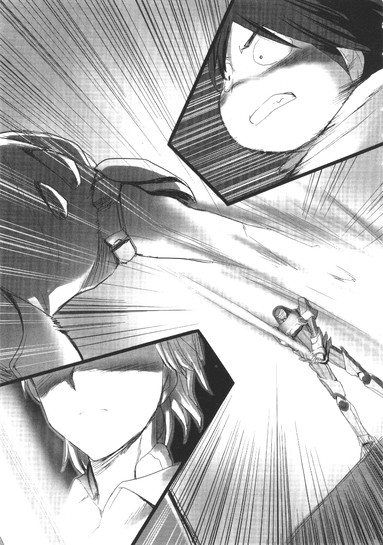
しゅきいいぃぃん！ と高く澄んだサウンドとともに、〈光線剣〉が一メートル以上も伸長し、シアン・パイルの左肩口を襲った。ハルユキのこの技は、心意の基本技四種のうち〈射程距離拡張〉カテゴリに属するので、攻防時のみブレードが超高速で伸びるという特徴がある。それゆえ、対峙するほうは間合いが非常に読みづらい。あの〈ダスク・テイカー〉すら、初見では切っ先を見切れなかったのだ。
──しかし。
変則的な軌道を描くハルユキの右上段斬りを、タクムはほんのわずかに角度を変えた両手剣の刃で見事に受けてみせた。
甲高い衝撃音が響き、銀と蒼の光芒が飛び散る。直後、ぎゃりっ！と刃の交錯点が滑り、上にあったはずのハルユキの剣はあっという間に下に押さえ込まれていた。
「くっ......」
凄まじい圧力に、反射的に左手も持ち上げる。そちらからも光剣を伸ばし、右の剣とＸ字に交差させて、二本の刃でタクムの両手剣に対抗しようとする。
だが、拮抗できたのはほんの半秒程度だった。両手剣を覆う蒼いオーラが、逞しい両腕にまで広がるや、重さが一気に倍増したのだ。剣道部の練習や試合で、このような渾身の鍔迫り合いを数限りなく繰り返してきたタクムの経験がイマジネーションを強化している。とてつもないプレッシャーに晒され、シルバー・クロウの肘及び膝関節がぎしりと軋み、オレンジ色の火花が瞬く。
ＨＰゲージに刻まれた数ドットのダメージと引き替えに得た、ささやかな必殺技ゲージを全消費し、ハルユキは背中の両翼を瞬間的に振動させた。生まれた推力によって蒼い刃をわずかに押し返し、反動を利用して一気にバックダッシュ。再び距離を取って正対する。
いまだ開始点から一歩も動いていないタクムは、再び両手剣を中段に構えると、低い声で囁いた。
「ハル、馬鹿正直な力比べじゃ、幾ら何でも君に勝ち目はないよ。ぼくが望んでいるのは、そんな戦いじゃない」
「......ああ、解ってる」
頷き、ハルユキも右手の光剣のみを緩やかに持ち上げた。
「さっきのは挨拶だ。次で、現在のオレの〈力〉と〈技〉を両方見せる」
やや大仰な台詞ではあったが、それは同時に自分を奮い立たせるための助燃剤でもあった。
タクムの剣捌きは、今日まで足掛け六年も練習してきた剣道の技と才能に裏打ちされている。現実世界で互いに竹刀を握ればもちろん、加速世界で剣と剣の尋常な勝負を挑んでもハルユキに勝機はあるまい。
しかし、今のハルユキには、パワーに優る対戦相手の攻撃をも己の力に変える技がある。
黒雪姫に身を以て示され、以来独自に修練を重ねてきた〈柔法〉──〈受け返し〉がそれだ。相手の攻撃をがっちり受けたり弾き返したりするのではなく、自分の動きのベクトルに巻き込み、融合させ、放つ高等技術。
微妙なところだが、あのテクニックにもある程度は心意システムが働いているとハルユキは推測しているい可視のオーラ、つまり〈過剰光〉を生むほどの強度ではないが、イマジネーションによって現象に働きかけ、攻撃威力の軌道のみを操作するのだ。
であるならば、その要諦は、信じることだ。
逆説的だが、敵の攻撃を信じ、受け入れる。ただ敵愾心のみによって迎え撃とうとしては、融合のイメージは生まれない。剛く弾くのではなく、柔らかく寄り添う。だから〈柔法〉なのだ。
ハルユキがこの技の練習を始めてから、まだ十日程度しか経っていない。実戦での使用経験は、先のブッシュ・ウータン戦を含めてせいぜい数回。剣相手の、しかも心意戦で試みるのは当然これが初めてだ。だが、ハルユキはタクムに、自分のありったけでぶつかると約束した。そこにはいかなる留保も言い訳も許されない。
大きく息を吸い、吐いてから、ハルユキは右手に宿る光の剣を、ただ五指を覆う過剰光にまで縮めた。
タクムの両眼が、スリットの下で鋭く細められる。だが彼もすぐに、ハルユキが勝負を投げたのではないと理解したようだった。なぜなら、右手のオーラの輝きはむしろ凝縮され、強まっている。
「......行くぜ、タク！」
ハルユキの叫びに、半ば誘われるようにタクムも応じた。
「来い、ハル！」
わずかに体を沈めてから、ハルユキは猛然とフロアを蹴り飛ばし、二度目の前ダッシュを敢行した。今度はタクムも、先を取るべく撃ち込みを合わせてくる。剣タイプの強化外装を備える青系のバーストリンカーは多いが、剣道の経験がある者はほとんどいない。彼らとタクムの技は、出の早さからしてまるで違う。
ボクンングのパンチもそうだが、真に練られた技には大袈裟な予備動作は存在しない。大きく振りかぶり、タメを作ってから斬り込んでくる他のバーストリンカーとは異なり、タクムの剣は、切っ先がわずかに揺れたと思った時にはもう目の前まで肉薄している。これが現実世界なら、ハルユキは何が起きたか解らないうちにタンコブを作られているだろう。
しかし、フルダイブ環境下での知覚及び反応速度こそが、ハルユキがたった一つ誇れる能力なのだ。
ヘルメットの額を断ち割らんと神速で迫る〈蒼刃剣〉の切っ先を、ハルユキは視覚に留まらない五感、もしかしたら直感をも使って認識した。
りいぃぃぃん、という音が遠く聞こえる。世界の色が変わる。〈超加速感覚〉の訪れとともに、剣の速度がわずか、ほんのわずかに遅くなる。
────ここ！
致死の刃の側面、ダメージ発生能力の薄い〈鎬〉部分に、ハルユキはそっと右手の指先を添えた。
もし過剰光でガードしていなければ、たとえ剣の腹でもこの時点でハルユキの手は跡形もなく吹き飛んでいただろう。それが、あらゆるゲーム内物理法則を超越する心意の力だ。しかし今は、右手を包む〈光速〉のイメージがタクムの〈切断〉のイメージをガードしている。
とはいえ、刃を真正面から掌で受け止めようとすれば、やはり斬られるだろう。なぜなら、ハルユキの心意が〈射程拡張〉であるのに対して、タクムのそれは〈威力拡張〉だからだ。先にタクムが「パワー勝負では君に勝ち目はない」と言い切ったのは、それが理由だ。ゆえにハルユキは、柔法による受け返しを試みたのだ。
無論、剛毅にして端正なるタクムの剣を、そう容易く曲げられるものではない。黒雪姫がして見せたような、攻撃ベクトルの百八十度転換など絶対に不可能だ。だがハルユキは先のブッシュ・ウータン戦で、威力を逸らし致命傷を避けるだけならば、想像よりもずっと小さな干渉でも事足りることを学んでいた。
剣の鎬に触れさせた指先に、そっと、優しく、力を込める。
双方の過剰光の接触面が圧縮され、スパークが散る。ここで反発してはいけない。脳裏に、先日、ブッシュ・ウータンの〈ダーク・ブロウ〉を掌で受け止め弾いたアーダー・メイデンの姿がフラッシュする。あれは〈柔法〉ではなかったが、メイデンの炎のオーラにはいかなる敵意も害意もなかった。ただ相手の荒ぶる心を受け入れ、鎮め、癒そうとする浄化の意志だけが感じられた。ハルユキは彼女ほど修行が成ってはいないが、それでも今、心の中にはタクムへの敵意など欠片も存在しない。ただ──彼に、伝えたい。
自分、有田春雪が、どれだけ黛拓武という人間を信じているかを。
蒼い刃を取り巻くオーラには、タクムの混乱や怖れ、後悔、そして渇望が満ちているように思えた。
その感情に寄り添うように、ハルユキは指の腹から掌までをふわりと剣に当て──イメージで引き寄せ、動作で押し出した。
きゃりぃぃん！ という、硬質面に貴金属を落下させたような音が頭の中で響き、視界にオレンジ色の火花が無数のラインを引いて流れた。両手剣の切っ先が、シルバー・クロウのヘルメット左側面を擦りつつ後方に抜けたのだ。
ハルユキは、いまや指先から肘までが剣に触れている右手を、そのまま前方へと撃ち出した。
図らずも、中国拳法の肘打に酷似したフォルムの打撃が、シアン・パイルの左肩付け根に炸裂した。どうっ！と重い手応え。上体を揺るがしたタクムが、踏ん張りつつ剣を引き戻そうとする。
恐らく、先の〈受け返し〉は、もう二度とああも綺麗には決まるまい。タクムならば一瞬でハルユキが何をしたのかを、そのロジックまで推察したうえで即時対応してくるだろうからだ。だからここで間合いを取られるわけにはいかない。張り付いたまま──ラッシュあるのみ！
「お......おおッ!!」
ハルユキは短く咆哮し、いまのクリーンヒットで加算された必殺技ゲージを消費しつつ、左の金属翼のみを全力で振動させた。爆発的な推進力が、左に開いていた体をノーモーションで右回転させる。その勢いを利用し、剣が浮いているためにガードの薄いタクムの右脇腹へと、左の膝蹴りを見舞う。再び、痛撃。
「ぐっ......」
タクムが低く声を漏らしたが、さすがにそこで動きを止めたりはせず、刀身ではなく柄頭による打撃をハルユキのヘルメットに見舞おうとした。もちろん剣道の一本にはならない攻撃だが、居合術にはこのような当身の型もあるらしい。
前後左右への回避は間に合わない、見事なタイミングだった。しかしハルユキは、軸足になっていた右の足裏をわざと滑らせ、全身を垂直に落下させた。両手剣の柄が危うく眉間を掠り、後方に抜ける。
ハルユキの、文字通り捨て身の回避に、タクムも刹那途惑ったようだった。剣道では、下段への攻撃は基本的に行わない。とはいえハルユキも、このまま地面に倒れ込んでしまえば一瞬にせよ動きが止まらざるを得ない。そこを押さえるつもりか、タクムが右脚を持ち上げた。
だが、真後ろに倒れ込むハルユキは、地面ぎりぎりの高度で両翼から頭上方向に推力を解き放つ。不可視のロープに足を引っ張られたかのような、急激なスライド。シアン・パイルの右足がずしんと地面を踏んだ時には、ハルユキは後方宙返りの体勢で地面から跳ね上がっている。そのまま、やや装甲の薄い相手の背中に、右爪先による〈起き上がり攻撃〉。よろめきつつ振り向こうとするタクムの死角へ、右翼の瞬間振動を利用したスライドダッシュで入り込み、ついに右手の直突きを放つ。
心意の光を宿した貫手は、シアン・パイルの左肩に命中し、分厚い装甲をまるで紙細工のように切り裂いた。
この、両翼あるいは片翼での瞬間スラストを利用した三次元近接機動こそ、ハルユキがここしばらく修練しているもう一つの技術──〈空中連続攻撃〉だ。必殺技ゲージが一割程度貯まれば充分に発動でき、攻撃が当たり続けるかぎり無限に繋げることができる。また、動作がとてつもなく変則的なので、初見で対処することはほぼ不可能。かつて、あの黒の王をすら、数十秒間も防戦一方とならしめたのだ。
「う......おおおおッ！」
ハルユキは、鋭い気勢とともに更にコンボの速度を上げた。
さすがに純色に近い青系だけあって、シアン・パイルのＨＰゲージは、これだけクリーンヒットが続いてもまだ七割以上を残している。シルバー・クロウはほぼフル状態だが、ラッシュで押し切ろうとするには微妙なタイミングだ。
しかしハルユキは、この対戦ではあらゆる計算を捨てると決めていた。最初から最後まで全開。それでなくては伝わらないものが、加速世界には確かに存在するのだ。
脳内のギアがシフトアップするにつれ、シルバー・クロウの機動も加速していく。小柄なボディは目まぐるしく宙を舞い、四肢は大気に無数の流線を描く。時折〈光線剣〉と〈蒼刃剣〉が激突し、巨大な衝撃波がステージを揺るがすが、ハルユキにはまだクリーンヒットの被弾はない。
タクムのほうも、エアリアル・コンボのリズムに徐々に対応し始めるが、回避しきれない攻撃が巨体の各所を撃ち、切り裂いていく。ＨＰゲージは減少を続け、やがて五割を下回り、イエローへと変わる。
激戦のさなか、ハルユキは、脳裏に直接響く囁きを聞いた気がした。
......ああ......ハル......。
......綺麗だ。君の戦いは、なんて美しいんだ......。
シアン・パイルのフェイスマスクに切られたスリットの奥で、両眼が糸のように細められる。青白い光が薄れ、不規則に明滅する。
............でも。その美しさは......あまりにも、危うすぎる。ぼくの心を、ざわめかせる。
............もっと、もっと圧倒的な暴力で、ぼくを叩き潰してくれ。さもないと、ぼくは......
君を、壊したくなる。
ビカッ!! と、二つの眼が強烈に輝いた。
シアン・パイルの胸部装甲に並ぶ複数の孔から、硬質な音を立てて鋭い弾頭が出現した。
「............ッ!!」
ハルユキは、咄嗟に右へとスライドダッシュしようとした。しかしその回避のクセを先読みされたか、タクムも素早く体を旋回させ──。
「〈スプラッシュ・スティンガー〉!!」
技名発声とともに、ハルユキの目の前で、複数のペンシルミサイルが発射された。今度こそ、近距離での全弾回避は不可能だ。ハルユキは真後ろに高速ダッシュしつつ、両手の光剣でミサイルを次々に切り裂いていく。タクムのこの技は心意技ではないので、ミサイルそのものはハルユキの光のオーラを破れないが、何せ数が多い。どうにか全ての誘導弾を叩き落とした時には、タクムとの間には再び十五メートル近い距離が開いていた。
爆発の黒煙が、ステージの風にたちまち吹き散らされていく。その向こうに立つシアン・パイルは、対戦開始時と同じように、両腕をだらりと下げ顔を俯けている。右手の〈蒼刃剣〉を覆うオーラは不定期に明滅し、イマジネーションが解けかけていることを示している。
──そして。
もうひとつ、以前とは異なる現象が存在するのに、ハルユキは気づいた。
青灰色のアバターの全身を、薄い影のようなものが取り巻き、上空へと立ち上っている。その色合いには見覚えがあった。間違いなく、先日のタッグ対戦で、ブッシュ・ウータンがまとっていたのと同じ〈闇のオーラ〉だ。
つまり──ついに、目覚めようとしているのだ。シアン・パイルに宿り、〈スーパーノヴァ・レムナント〉四人を同時に屠るほどの力を授けた、あの強化外装が。
ハルユキは、大きく息を吸い、きっぱりと言った。
「いいぜ、タク。使えよ」
タクムが無言で顔を上げる。その顔を正面から見詰め、言葉を続ける。
「全部出し尽くす。そうだろ？ それはもう、お前の力だ。お前のありったけでぶつかってこなきゃ、この戦いは終わらないぜ。さあ......使え、〈ＩＳＳキット〉を！」
ハルユキの叫びに、タクムは仄かに微笑したようだった。
ぐっと頷きかけつつ、ハルユキは胸中で、声に出来なかった言葉を念じた。
──タク、僕は、お前を信じる。たとえこの戦いがどのように終わろうとも、お前が、その闇の力を乗り越えてくれると信じる。
まるでその思念すらも聞こえたかのように、タクムもまた頷いた。
右手から〈第二象限の正の心意の具現化たる流麗な両手剣が消滅する。青い光は再び腕を取り巻き、元の強化外装〈パイルドライバー〉へと戻る。
タクムは、その腕を高く掲げると──密やかに、しかし決然と唱えた。
「〈ＩＳモード〉起動」
闇が、溢れた。
10
謎の強化外装〈ＩＳＳキット〉は、その恐るべき力に比して、オブジェクトとしては極小サイズだ。
直径五センチ程度の黒い半球。どこか、ソーシャルカメラにも似ている。ブッシュ・ウータンやオリーブ・グラブは、それを胸の中央に装着していた。
しかし、タクムの起動コマンドに呼応して半球が浮き上がったのは、右手の〈パイルドライバー〉の手の甲にあたる部分だった。
キットの中央に、ぴしりと横線が走る。そこから表面が上下に分かれ、内部から生物の眼を思わせるもう一つの球体が出現する。濡れたようなその輝きは、深い血の赤色──。
直後、シアン・パイルの足許から、恐るべき密度及び規模の過剰光が溢れ、渦巻いた。いや、それを光とは呼べない。濃密なる漆黒に染まっているからだ。もはや、ブッシュ・ウータンがまとっていたおぼろな〈影〉ではない。純粋なまでの、闇のオーラ。
ハルユキは、自然に下がりそうになる両脚を、必死に踏ん張り続けた。
迸るオーラの勢いも、ウータンのそれとは比べものにならない。単なるライトエフェクトではない証として、タクムの立つ場所から、フロアに放射状のひび割れが走る。
............タク............。
無意識のうちに、心の中でそう呼びかけたハルユキの声が聞こえたか、タクムが穏やかに応じた。
「ハル」
左手で、上下のフロアやまばらに伸びる柱を示しながら言葉を続ける。しかしその声は、キット召喚前とは大きく異なっている。陰々と歪む、金属質のエフェクト。
「......君も、いつまでもこんな狭い場所にいたら、全力を出せないよね」
「あ......ああ。外に、場所を変えるか......？」
どうやらタクムは、ウータンたちほどには精神への干渉を受けていないようだ。ハルユキはそう判断し、そっと息を吐き出しつつ訊ねた。
しかし──。
「いや、それには及ばないさ」
タクムは呟くように応じると、ＩＳＳキットの宿るパイルドライバーを、無造作に足許の床へと向けた。直後、まるで気負いのない、平板な技名発声。
「〈ダーク・ショット〉」
鉄杭の代わりに放たれたのは、闇色のビームだった。それは床を一瞬で穿ち、直径十センチほどの穴を空けて階下へと消えた。
一秒、二秒......三秒後。
ハルユキは、真下から、巨大な振動が衝き上げてくるのを感じた。息を呑む間もなく、床が粉々にひび割れる。その隙間から、黒い炎としか形容できないエネルギーの奔流が噴き出す。
「............!!」
激しく空気を吸い込みながら、ハルユキは反射的に両翼を展開すると、真後ろにダッシュした。空中で体を上下入れ替え、両手を突き出した全速飛行姿勢でマンション外周の開口部へと突進する。背後から押し寄せてくる爆風に体を揺らしながら、どうにか空中へと飛び出すと、そのまま〈焦土〉ステージの空を一直線に飛翔。充分以上の距離を取ったと確信できたところで、再び体を反転させ、後ろを振り向く──。
「な..................」
ハルユキは愕然と喘いだ。
視線の先では、現実世界では自宅マンションのＡ棟である地上三十階の巨塔が、地上部分から粉々に砕け、崩壊していくところだった。
確かに、この〈焦土〉ステージでは、地形オブジェクトは壊れやすい。だがそれでも限度というものがある。あのような巨大建築物の破壊は、〈対戦〉の戦略をも根底から覆してしまうため、それ相応の時間と手間がかかるようになっているのだ。ハルユキが知る限り、〈一撃での巨大ビル破壊〉が可能なバーストリンカーは、強化外装全展開状態の〈不動要塞〉こと赤の王〈スカーレット・レイン〉だけだ。
眼前の光景が信じられず、ハルユキは何度も瞬きを繰り返した。しかしマンションはたった数秒で完全に崩壊し、巨大な瓦礫の山へと変じてしまった。
吸い寄せられるように、視界右上のシアン・パイルのＨＰゲージを確認する。
あれほどの大崩落に巻き込まれたのに、残量はハルユキが〈エアリアル・コンボ〉で削った四割弱のままだ。そして、地形破壊ボーナスの薄い〈焦土〉ステージでありながら、必殺技ゲージは一気にフルチャージされている。
再び瓦礫の山に視線を移したハルユキは、ピラミッド状に堆積したその頂上のオブジェクト塊が、真下から吹き飛ばされるのを視認した。
粉々になって消滅する瓦礫の中から現れたのは、いっそう色濃く闇のオーラをまとうシアン・パイルだった。
「............タク」
掠れた声で呟く。だが、それ以上の言葉が出てこない。
いかなる驚愕や戦慄すらも置き去りにする、圧倒的としか言えない現象だ。〈ＩＳモード〉発動後のブッシュ・ウータンも恐るべき戦闘力の上昇を見せたが、タクムの変容はそれを遥かに超越している。つまり──それだけ深く、狂おしいほどの苦悩を、彼はずっと心の奥底に押し固めてきたのだ。
ならば、このまま負けるわけにはいかない。
ハルユキが手もなくＩＳＳキットの力に屈すれば、タクムを捕らえつつある闇はいっそう力を増すだろう。かつて黒雪姫やスカイ・レイカー、ニコ、そしてブラッド・レパードが繰り返し警告していた心意の暗黒面、底なしの〈心の穴〉に、タクムは足を踏み入れてしまうかもしれない。
〈バックドア・プログラム〉事件以降、タクムは懸命に自分を取り戻そうとしてきた。最先端の高度情報化教育が行われている新宿の進学校から、まだアナログな部分を多く残す梅郷中に転校して、彼なりのペースで一歩一歩今日まで歩き続けてきたのだ。その道のりを、何者かが意図的に広めようとしている悪意などに途切れさせてはならない。どうにかして、彼をキットの干渉から引きずり出し、支配力を断ち切らねばならない。それには──
この戦いに勝つ。それしかない。
勝って、示すのだ。〈正の心意〉の力を。そこに込められた、ささやかだけれど何よりも強く輝く、希望の光を。
ハルユキは、高度七十メートルにホバリングしたまま、両手に〈光線剣〉を具現化させた。
眼下では、瓦礫の頂上に立つタクムが、ゆるりとした動きでＩＳＳキットの宿る〈パイルドライバー〉を持ち上げ、ハルユキを照準した。
先刻、あの発射口から放たれた〈ダーク・ショット〉は途轍もない威力だった。ブッシュ・ウータンの同名の技を、光線剣で弾いたようにはいかないだろう。だが、発射位置とタイミングが見えれば対処は可能なはずだ。ダメージを受けるぎりぎりの間合いで躱し、カウンターの急降下攻撃を決めるしかない。
ハルユキは仮想の呼吸を止め、全精神力をシアン・パイルの掲げる強化外装の砲口に集中させた。
──だから、気づくのが遅れた。タクムの密やかな技名発声とともに、本来ならば心意技では消費されないはずの必殺技ゲージが、フルチャージ状態から一気に全消費されたのを。
「......〈ライトニング・ダーク・スパイク〉」
初めて耳にする技名がコールされ、同時にパイルドライバーの砲口が一瞬、ちかっと黒く発光したように思えた。
それだけだった。マンションを崩壊させた巨大なビームも、轟音も、衝撃波も生まれない。焦土ステージの乾いた風が蕭々と吹き過ぎ、ひやりとした感覚が左肩のあたりを撫で......。
「............？」
ハルユキは、不意に体が軽く揺れるのを感じた。同時に、小さな光が幾つか視界の下端を横切る。視線を移すと、妙なものが地面へと落下していくところだった。銀色の棒や、薄い板状のオブジェクト。何だ？と眼を凝らし──
「っ............!?」
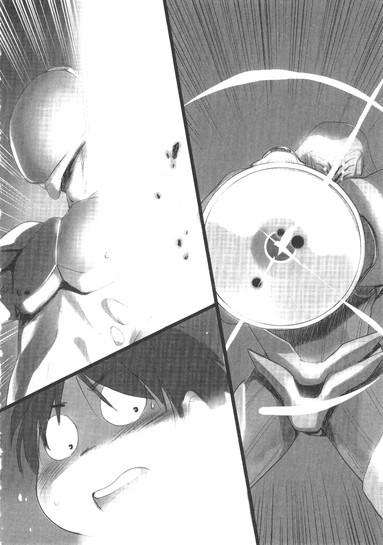
その正体に気づいた瞬間、ハルユキはただ呆然と眼を見開き、息を吸い込むことしかできなかった。あれは──腕だ。そして、翼。
今更のように左肩を見る。そこにあったのは、まるで精密に鏡面仕上げを施したかのような、滑らかな切断面だけだった。シルバー・クロウの左腕と、左の金属翼は、その付け根から完全に消滅していた。
ぐらり、と体が傾く。無意識のうちに右翼の推力を上げ、高度を保とうとするが、逆に姿勢を崩してしまい、錐揉み状態へと突入。そのまま、木の葉のように螺旋を描きながら地上へと落ち始める。
地面に激突する寸前でどうにか放心状態から復帰し、ハルユキは右翼で回転に逆のベクトルをかけて相殺すると、危うく足からの着地に成功した。それでも衝撃を完全には吸収できず、膝と足首の関節が激しくスパーク。がくりとひざまずきつつ、遅まきながらＨＰゲージを確認する。左の腕と翼をまるよる欠損した傷は深く、ゲージは一気に五割を下回ってイエローに染まっている。
だが、ダメージの量よりも、それを受けたことそのものに、ハルユキは巨大な衝撃を感じていた。
──まるで、見えなかった。
パイルドライバーの砲口に、発射エフェクトが漆黒の十字を描いたのにはどうにか気づけた。だがそこから七十メートルもの距離を通過してきたはずの、攻撃技の本体をまったく知覚できなかったのだ。
ハルユキは以前、〈近距離から発射された銃弾を避ける〉という自作のＶＲプログラムで無茶な特訓に邁進した時期がある。その甲斐あってか、現在では、射手が見えてさえいれば大型ライフルによる狙撃ですらかなりの確率で回避できるようになっている。逆に言えば、それができなければ、障害物のない空などとても飛んでいられない。なのに──避けられないならまだしも、弾道を認識すらできなかったとは、とても信じられない......。
ショックは途轍もなく巨大だったが、ハルユキが地面で自失していたのは、ほんの半秒といったところだったろう。
どれほど予想外の状況に見舞われようとも、即座に思考を立て直し次の行動に移るのはバーストリンカーの重要な能力の一つだ。ハルユキはとりあえず驚きを押しやり、飛行能力をほぼ奪われた現状からの戦術を再構築しようとした。こうなれば、再び密着状態に持ち込み、たとえ片腕片翼なれど、〈受け返し〉と〈空中連続攻撃〉を組み合わせての近接戦に勝機を見いだすしかない。
まずは──動け！
そう自分を叱咤したハルユキは、落下したマンションの前庭から、まだ健在のＢ棟方向へと走ろうと立ち上がった。
しかし、ここで再び、予想外の事態が生起した。
ごうん！ という衝撃音とともに地面が揺れ、ダッシュを妨げた。よろめきつつ音源に視線を向けると、ほんの十メートルほどの距離に、大柄なアバターが着地したところだった、瓦礫の山の頂上にいたはずのタクムが、一気に前庭まで飛び降りてきたのだ。
シアン・パイルやフロスト・ホーンのような重量級アバターは、フィールドへの踏み付けで震動波を起こし、軽量級アバターの移動を妨害できるという特性を持っている。しかしこの揺れは震動というよりももはや大地震だ。縦横に走ったひび割れに足を取られ、たたらを踏んでしまったハルユキの後方から、これも規格外の高速ダッシュでタクムは瞬く間に追いすがり、至近距離で立ち止まった。
まるでデュエルアバターのサイズそのものが一回り大きくなってしまったかのような、圧倒的な存在感がハルユキを凍り付かせた。
フェイスマスクに並ぶスリットの奥で、低い音を立てて両眼が光る。だがその色は、少し前までのライトブルーから、暗いパープルへと変化している。
不安定な姿勢で立ち尽くすハルユキを、タクムは高い位置から静かに見詰めた。
その口元から、歪んだエフェクトを帯びる声が流れた。
「ごめんよ......、ハル」
「............タク............」
ほとんど音にならない声で、親友の名を呼ぶことしかできないハルユキに、タクムはゆっくりと一歩近寄る。
「......ごめんよ。ぼくは......こうなることが......こうなってしまうことが、解っていた。なのに、君に無理矢理、対戦をせがんだ。これじゃあ......ただ、君を叩きのめしたかっただけだと思われても、仕方ないね......」
ずしん。もう一歩距離を詰めると、もうシアン・パイルの巨体はハルユキのすぐ目の前にある。巌のようなアバターは、濃密な漆黒のオーラを全身から間断なく生み出し、上空へと迸らせている。その発生源となっている、右腕の強化外装に寄生する黒い眼球を、タクムはちらりと見下ろす。
「......この〈ＩＳＳキット〉は、宿主の心の闇が深ければ深いほど、恐ろしい威力を発揮すると聞いた。つまり......ぼくは、そういう人間なんだってことだよ。この力で、四人のＰＫたちをいたぶり殺している間に、ぼくはそれを思い知った。いや......本当は、最初から解っていたのかもしれない。いい成績を取り、大会で勝ち、チーちゃんの気持ちを繋ぎ止めるためだけにぼくはバーストリンカーになったんだから............」
「タク............、タク」
違う。違う。違うちがうちがうちがう!!
ハルユキの胸中には、そのひと言だけが渦巻いた。だがそれを、どう言葉にして伝えればいいのか、ハルユキには解らなかった。
視界が虹色に揺れ、滲んだ。ヘルメットの下で、自分が涙を流していることに、ハルユキは遅れて気づいた。
そんなハルユキを見下ろすタクムの両眼からも、ささやかな光の粒が零れ、即座に蒸発した。
「ありがとう、ハル」
「親友の、優しい声が耳に届く。
「最後の〈対戦〉の相手が君でよかった。......ありがとう」
「............さ、最後......？ 何......言ってるんだよ......」
わななく声で問い質すハルユキに、タクムは静かに答えた。
「ぼくは、この戦いが終わったら、〈加速研究会〉と差し違えにいく」
「............え............」
「こんな恐ろしい強化外装を作り、ばらまくような奴らだ。トップに勝てるとは思ってない。でも、キットの感染経路を辿れば、ある程度の地位にいる奴までは割り出せると思う。そいつをどうにかして無制限フィールドに誘い出して、得られる眼りの情報を奪う。......たとえ......」
そこで一瞬声を詰まらせたが、すぐに確たる言葉が続いた。
「......たとえ、そこでポイントを全損して、ブレイン・バーストをアンインストールされても......解ったことは、必ず君に伝える。だから、後は、君が止めてくれ、ハル。こんな......バーストリンカーなら誰もが抱えている〈心の傷〉につけ込み、惑わせるような力は存在しちゃいけない。加速世界は、君や、チーちゃんや、マスターみたいな、傷の痛みを希望に変えて進める人たちのためにある場所なんだから......」
「......タク......お前も......お前だって............」
この場面で、そんな切れ切れの言葉しか口にできない自分が、ハルユキはもどかしかった。
しかし十年来の幼馴染は、それでもハルユキの気持ちを汲んでくれたようだった。マスクの奥に、ふ、と柔らかな微笑みの気配。
「ハル、君には、もう一つお礼を言っておかなきゃね」
全身から迸り、いっそう荒ぶる闇のオーラとは対照的に、その声はあくまで穏やかだった。
「あの時......、ぼくらの初めての戦いの最後に、ぼくを許してくれてありがとう。あの日から今日まで、新生〈ネガ・ネビュラス〉の一員として戦ってきたこの八ヶ月は、まるで夢みたいに楽しかった。ありがとう、ハル。君の〈浄化〉ミッションや、エンディングを目指すっていうレギオンの目標を途中で投げ出してしまうのは無念だけど......マスターやレイカーさん、メイデンさんにも、ありがとうと伝えておいてくれ。それと......チーちゃんに、ごめんって」
「──言うな！ そんなこと言うな、タク!!」
引き裂かれるような胸の痛みを押し殺し、ハルユキは絶叫した。
残された右手の拳を握り締め、懸命に心意の輝きを宿す。激しく揺れる感情を映して、その光は不規則に明滅しているが、それでもほんのわずかに二人を取り巻く闇の色が薄れる。
「お前がレギオンからいなくなったら、チユは泣くぞ！絶対に泣く！お前がチユを泣かすのか、タク!!」
その叫びを受けて、タクムは小さく顔を俯けた。やがて、尚も穏やかな、声。
「......ああ、そうかもしれないね。でも......その涙を乗り越えて、きっと前に進んでくれると信じてる。チーちゃんに、昔に戻りたいって思わせ続けてきたのは、このぼくなんだから。ハル、頼むよ、チーちゃんのこと」
にこりと微笑み、タクムはハルユキの目の前で、巨大な左拳を強く固めた。
凝縮した闇のオーラが、ごうっと猛々しく唸る。ブラックホールを思わせるその漆黒は、ハルユキの右手に宿るささやかな銀の光を容易く圧倒する。
「さあ、終わりにしよう、ハル。ぼくのために、そんな悲しい顔をしなくていいよ。この闇は、最初から僕の中にあったんだ、だから君は、ただ八ヶ月前とは逆の選択をするだけでいい。ぼくが、そうさせてあげるから......」
余りにも巨大なパワーが凝集しているせいか、空中に無数のスパークを走らせる左拳を、タクムはゆっくりと引き絞った。
技名のコールは、まるでハルユキを慰め、励ますかのようた、どこまでも優しく響いた。
「〈ダーク・ブロウ〉」
宇宙から降り注ぐ巨大隕石の如き圧力とともに撃ち出された拳を、ハルユキは右手に宿した銀の光でガードしようとした。
しかし直後、かつて感じたことのない、世界そのものが爆発したかのような衝撃が全身を見舞った。ささやかとはいえ心意の防御がなかったら、アバターは一瞬で爆散していただろう。
消滅こそ免れたが、とても踏みとどまることはできず、ハルユキは恐ろしい速度で真後ろのマンションＢ棟方向へと吹き飛ばされた。
地面と平行に半秒ほど飛翔し、背中から建物の外壁に衝突する。焼け焦げたコンクリートに大穴を穿ち、内部に突入してもまだ止まらない。次の壁、その次、さらにもう一枚をぶち抜いたところでようやく慣性が減殺され、ハルユキはがらんとした大きな部屋の床に一度バウンドしてから大の字に転がった。
衝撃のあまりか薄暗く沈んだ視界の左上で、ちか、ちかと赤く点滅するものがあった。
思考はほぼ停止していたが、それでもハルユキは、それが残り数ドットまで減少したＨＰゲージだと悟った。
絶望的なまでのパワー差だった。そう、事ここに至って初めて、ハルユキは絶望が胸に満ちるのを感じていた。
タクムに全力を出させた上で勝利し、彼を救うなどと、何と思い上がったことを考えたものだろう。タクムの能力は、そもそもあらゆる面でハルユキを遥かに凌駕しているというのに。だから憧れた。だから目標にしたのだ。
そんな彼が、あそこまで自分を追い詰め、覚悟を決めたのならば、唯一の力たる翼すら奪われたハルユキに、いったい何ができるだろう......。
遠く、重い振動を感じる。タクムが、マンションの壁をぶち抜きながら、この対戦を終わらせるためにまっすぐ近づきつつあるのだ。
ハルユキは、ひび割れたヘルメットの下で、再びの涙を溢れさせた。
──こんなふうに終わってしまうなんて、思ってなかった。チユリと、タクムと、三人でずっといつまでも遊んでいられると信じていた。ブレイン・バーストは、加速世界は、そのためにこそ存在すると、ずっと信じていたのに............
『そうだよ』
不意に、誰かの声が頭の中で響いた。
ぼんやり眼を見開く。焼け焦げた、殺風景な天井を背景にして、不思議な光景が見えた。
床に横たわるシルバー・クロウの体から、すうっと一つの人影が抜け出し、音もなく立ち上がったのだ。
うっすらと透き通り、ほとんど幻のように見えるそれが誰なのか、ハルユキには解らなかった。
華奢な少女型デュエルアバターだ。花びらをモチーフにした肩や腰の意匠は、どこかチユリの〈ライム・ベル〉とも似ている。しかし頭は裾の跳ねたショートヘアタイプで、装甲の色もまるで異なる。
春の日差しを思わせる、暖かな山吹色──。
名前の解らない誰かは、横たわるハルユキのすぐ近くにある瓦礫の塊に腰掛けると、再び声を発した。
『あなたの言うとおりだよ。ブレイン・バーストは、争い、憎み合うためだけに存在するんじゃない。手を繋ぎ、絆を結ぶことだってできるんだよ』
「............君は、誰......？ どうしてここに......？ここは、直結対戦フィールドなのに......」
ハルユキはぼんやりと問いかけた。すると、儚く透き通る誰かは、ふわりと微笑んで言った。
『私は......記憶。中央システムに記録された、あるオブジェクトを構成する巨大な量子情報体の片隅に宿る、ちっぽけな思念のかけら......』
「......記憶............」
そう呟いた途端、ハルユキは自分自身の記憶のどこかがちくりと刺激されるのを感じた。
──知っている。会ったことはないし、名前も解らないけど、それでも僕はこの人を知っている......。
その想念を肯定するかのように、山吹色のアバターは小さく頷いた。
『あなたが〈帝城〉で過去の記憶をトレースしたから、中央システムとの回路が一時的に活性化して、こうして話しかけられたの。でも、きっと、長くは持たない』
一度言葉を切り、少女は強さを増した声で、驚くべきことを告げた。
『あなたの友達を助ける方法は、まだ残っているよ』
「え............」
眼を見開く。ぼろぼろの右手で床を支え、必死に体を起こそうとしながら訊ねる。
「そ、それは......？ 僕が、これ以上、何をできるって言うの......？」
『あなたの中にも、まだ〈力〉が残っているはず。友達に入り込んだ深い闇に対抗できる、たった一つの力が......』
山吹色は、微笑みを薄れさせ、そう囁いた。一瞬の途惑いののち、ハルユキは彼女が何を指しているのかを直感した。
反射的にかぶりを振る。
「だ......だめだよ、〈あれ〉は使えない。次にあれを召喚したら、僕はきっともう戻ってこられない......」
〈あれ〉。シルバー・クロウの深部に寄生し、しかし今はライム・ベルの〈シトロン・コール・モードⅡ〉によって種子状態にまで還元されている、呪われた強化外装。
──〈災禍の鎧〉。
ハルユキの言葉に、山吹色の少女はどこか悲しそうな微笑みを浮かべた。
『......あの鎧も、初めから〈災禍〉の名を冠して生まれたわけじゃないんだよ。沢山、たくさん悲しいことがあって、鎧はかたちを歪めてしまったの』
「かたちを......歪めた......」
『私はあの鎧の片隅で、ずっと待ち続けていた。持ち主が代わるたびに、今度こそって祈り続けてきた。鎧の呪いを解いてくれる人が現れるのを。〈あの人〉の怒りと悲しみを癒してくれる人を、ずっと待っていたんだよ......』
瓦礫の上からふわりと立ち上がった少女は、ハルユキの目の前にひざまずくと、華奢な右手をそっと傷ついた銀色のアバターに触れさせた。
『あなたなら。〈あの人〉にとてもよく似ているあなたなら、きっとできる。時間はかかるかもしれないけど、いつかきっと......。──だから、ここで諦めないで。あなたの友達のために、もう一度だけ、立ち上がって......』
少女の姿が、いっそう透明になる。朧なシルエットへと変わりながら、再びハルユキの中へと戻っていく。
頭の中に、遠く遠く、最後の声。
『......さあ、思い出して、その名前を呼んで......。〈災禍〉へと歪んでしまう前の、鎧の名前を......。あなたはもう、それを、知っている......はずだから............」
──不意に、記憶のスクリーンに浮かび上がる光景があった。
〈帝城〉の中で見つけた、〈七の神器〉の台座。北斗七星の六番星〈開陽〉の名を冠した金属のプレート。
その一番下に刻まれた、幾つかのアルファベット。あれを見た時、確かに感じたのだ。魂の深いところが小さく疼くのを。まるで、ずっとずっと昔の、悲しい思いでを呼び起こされたかのように。
ずしん、という重い振動が床に伝わり、ハルユキは顔を上げた。
隣か、その向こうの部屋に、タクムが辿り着いたらしい。次にどんな攻撃でも受ければ、残り数ドットのＨＰゲージは容易く消し飛ぶだろう。
──今の僕に、タクを止められるのか？ あれほど深く思い詰めたあいつを、どんな言葉で引き戻せるっていうんだ？
再び胸に満ちそうになる冷たい絶望を、しかし、ハルユキは歯を食いしばって振り払った。
──言葉じゃない。
──気持ちで。気持ちがこもった拳で、僕も、タクも、バーストリンカーなんだ。なら、伝えるべきものも、その手段も、たった一つしかないんだ。
「......ありったけを、ぶつけ合う。最初の時も、そうしたよな、タク......」
ハルユキは低く囁き、ぼろぼろのアバターを懸命に立ち上がらせた。ひび割れた装甲の破片が、きらきらと床に落ちた。
怖れも、怯えも、もうなかった。
壁に開いた大穴の奥を見詰め、ハルユキは静かに、記憶の彼方から甦ったその名前を口にした。
「着装......〈ザ・ディスティニー〉」
あとがき
川原礫です。二〇一一年最初の一冊、『アクセル・ワールド７災禍の鎧』をお届けします。
思い返せば、一昨年から去年にかけて書いた本のあとがきで、私ひたすら謝り倒して参りました。そこで今年の目標は〈あとがきで謝らない〉にしよう。と思ったんですが......すみません、いきなり謝らせて下さい......というか、謝ること自体をすでに謝ってますが（笑）。
えー、またも次巻に続いてしまいました！ ごめんなさい！いやー、６巻をあんな引きにしてしまった時、「７巻はきれいに終わらせよう」って決意はしたんです。そして珍しくそこそこ細かいプロットも作って、計画どおり！に書いていたはずだったんですが......予想外にタクム君が頑張って下さいまして......（笑）。
で、でも５巻６巻とほとんど出番のなかった彼ですから、がっつり動いてくれたことに作者としてはホッとしています。お話もこれくらい続いてくると、もう〈なるようにしかならない〉と言いますか、キャラクターたちの要求に従って進めていくしかないんですよね。このあとがきを書いている時点で、もう次巻の作業は始まっていますが、今回終わらなかった〈対戦〉にタクムとハルユキがどのような決着を見出すのか、私もどきどきしながらキーボードを叩いています。本としてお届けできるまで、どうぞいましばしお待ち下さいませ！
さて、ここで改めて二〇一一年の展望などをさらりと書いておこうと思います。
〈謝らない〉という第一目標にさっそく失敗してしまったので（笑）、ともかくも大きなトラブルなしに書き続けることを第二の目標にしたいなぁと......いきなり生々しくなってますが......。いやでも、このごろ漠然と考えるのですが、〈とにかく書き続けること〉というのが作家という仕事をする上でいちばん大切な能力ではないかと思うんですよね。自転車レースにたとえれば、闇雲に決死のアタックをかけるのではなく、次の坂、次のステージを見据えて、アシを残して巡航し続ける感じと言いましょうか......。それでももちろん、ここ一番のゴールスプリント勝負に出なければならない場面も必ず来るわけですが。そのタイミングを見逃さないよう気をつけながら、今年もしっかりクランクを回し続けたいなーと思う所存です。
この７巻もかなりギリギリの作業になってしまい、現存進行形でご迷惑おかけしている担当の三木さん、イラストのＨＩＭＡさん、二〇一一年はもう少しいい子ちゃん締め切りになれるよう頑張りますので宜しくお願いいたします！
そして新年一冊目から「つづく」攻撃を受けてしまわれた読者の皆様、今年も何卒寛大なお心でお付き合い下さいますよう伏してお願い申し上げます!!
底本：アクセル・ワールド７ ─災禍の鎧─
川原 礫
二〇一一年二月十日 初版発行